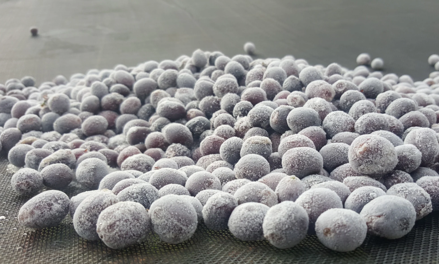

Préembule : Les descriptions de process et les repères présentés dans ce chapitre ont pour objectif d’apporter des clés de lecture et de compréhension, non d’établir des règles absolues ou des vérités universelles. Les pratiques de transformation du café évoluent constamment et s’expriment toujours dans un contexte précis : un terroir, une variété, une récolte, un producteur, et un objectif de profil.
Les indications de torréfaction sont développées à partir de références de torréfaction sur équipements de type Loring, et ne doivent pas être interprétées comme des recettes strictes ou transposables à l’identique sur l’ensemble des machines et des contextes.
Chaque café possède une physiologie propre : densité, structure cellulaire, activité enzymatique, humidité, composition chimique. À cela s’ajoutent les effets du terroir, de la variété botanique et du process post-récolte, qui rendent chaque lot fondamentalement unique. Une torréfaction pertinente ne consiste donc pas à appliquer un schéma figé, mais à adapter l’intention et les paramètres au comportement réel du grain.
Ce chapitre propose ainsi des cadres de compréhension, des tendances et des repères techniques, destinés à accompagner l’analyse et la prise de décision, plutôt qu’à normaliser des pratiques qui, par nature, doivent rester contextuelles et évolutives.
Les cafés lavés (FW)
En un coup d'œil :

Le process de la pureté. On fermente le mucilage pour le dissoudre, on lave à grande eau, on sèche proprement. Résultat : une tasse cristalline qui révèle le terroir et la variété sans masque. C'est la référence pour juger la qualité intrinsèque d'un ca
Comprendre : La philosophie du lavé
Pourquoi laver le café ?
Quand on récolte une cerise de café, le grain (la graine) est entouré de plusieurs couches :
Peau (exocarpe) ↓ Pulpe (mésocarpe) ← sucrée, charnue ↓ Mucilage (couche pectique) ← ultra-collant, 40% sucres ↓ Parche (endocarpe) ← enveloppe protectrice ↓ Pellicule argentée (tégument) ↓ GRAIN (endosperme) ← ce qu'on va torréfier
Le problème : Le mucilage est tellement collant qu'on ne peut pas simplement le "frotter" pour l'enlever.
La solution lavée : On utilise l'eau et la fermentation pour le dissoudre chimiquement, puis on le rince.
Résultat : Un grain "propre" qui n'a gardé que les arômes intrinsèques de son terroir, de sa variété et de sa maturation.
Lavé vs Natural vs Honey : La différence fondamentale
| Process | Ce qu'on garde pendant le séchage | Profil typique |
|---|---|---|
| Washed | Parche nu (mucilage retiré) | Clarté, acidité, précision |
| Honey | Parche + 25–100% mucilage | Douceur, fruité contrôlé, corps |
| Natural | Cerise entière (peau + pulpe + mucilage) | Sucrosité, fruité explosif, corps dense |
| Pulped Natural | Parche + 50–70% mucilage | Caramel, noisette, rondeur |
L'équation simple :
Plus on enlève de matière externe = Plus la tasse est "propre" et "claire" Plus on garde de matière externe = Plus la tasse est "sucrée" et "complexe"
Le lavé pousse le curseur au maximum vers la transparence.
Ce que révèle un café lavé
Un café lavé bien exécuté agit comme un révélateur photographique :
✅ Le terroir : altitude, sol, climat → acidité, minéralité
✅ La variété : génétique → profil aromatique (floral, fruité, chocolaté)
✅ La maturité : °Brix de la cerise → sucrosité et équilibre
✅ La santé du lot : défauts de récolte/tri → immédiatement visibles
C'est pourquoi :
•Les compétitions privilégient les lavés (clarté du cupping)
•Les acheteurs jugent la qualité sur des lavés (moins de "masque" fermentaire)
•Les prix records sont souvent sur des lavés ou Geisha naturels (transparence extrême)
Maîtriser : Les étapes du process lavé
Phase 1 : Récolte et tri initial
Objectif : Cerises mûres uniquement (≥18 °Brix idéalement 20–22)
Méthode :
•Récolte sélective : cueillette manuelle des cerises rouges/jaunes mûres
•Flottaison immédiate : tri par densité dans l'eau
•Flottants = immatures, vides, abîmés → écartés
•Coulants = denses, mûrs → conservés
•Lavage préliminaire : retrait poussières, feuilles, débris
Composition chimique d'une cerise mûre :
•°Brix : 18–24 (idéal 20–22)
•pH : 5,5–6,0
•Sucres : 12–18% (glucose, fructose, saccharose)
•Acides : citrique (60%), malique (30%), autres (10%)
⚠️ Point critique : La qualité du lavé est définie à 70% par la qualité de la cerise. Contrairement au natural, on ne peut pas "masquer" les défauts de maturité.
Phase 2 : Dépulpage
Objectif : Séparer la peau + pulpe du grain en parche (encore entouré de mucilage)
Machines utilisées :
•Dépulpeuse à disque (petits producteurs)
•Dépulpeuse à tambour (volume moyen)
•Ecomill / Penagos (technologies économes en eau)
Réglages critiques :
| Paramètre | Valeur optimale | Impact si mauvais |
|---|---|---|
| Pression cylindre | Modérée | Trop fort → parche fissuré ; trop faible → pulpe résiduelle |
| Écartement | Selon taille grain | Inadapté → grains coincés ou mal dépulpés |
| Débit d'eau | 1–2 L/kg cerises | Excès → gaspillage ; insuffisant → bourrage |
Résultat : Grains en parche recouverts d'une couche épaisse de mucilage (2–3 mm) ultra-collant.
Phase 3 : Fermentation en cuve — Le cœur du process lavé

Objectif : Dissoudre chimiquement le mucilage par l'action d'enzymes et de micro-organismes
Mise en cuve
Deux méthodes principales :
•Fermentation sèche (dry fermentation)
•Grains en parche sans ajout d'eau supplémentaire
•Fermentation plus concentrée, pH descend plus vite
•Profil final : acidité plus vive, notes fruitées plus marquées
•Fermentation humide (wet fermentation)
•Grains immergés dans l'eau (recouverts de 5–10 cm)
•Fermentation plus douce, homogène
•Profil final : acidité plus ronde, notes florales
Durée typique : 8–36 heures (selon température et altitude)
Que se passe-t-il pendant la fermentation ?
Acteurs biologiques :
| Micro-organisme | Rôle | Métabolites |
|---|---|---|
| Levures (Saccharomyces, Pichia, Candida) | Dégradent les sucres | Éthanol, CO₂, esters légers |
| Bactéries lactiques (Lactobacillus, Leuconostoc) | Produisent acide lactique | Acide lactique, diacétyle (traces) |
| Bactéries acétiques (Acetobacter) | Oxydent l'éthanol | Acide acétique (à limiter) |
| Enzymes pectinases | Cassent les pectines | Dégradation du mucilage |
Évolution des paramètres :
| Temps | pH | °Brix mucilage | Viscosité | Notes olfactives |
|---|---|---|---|---|
| T0 | 5,5–6,0 | 14–20 | Très épaisse | Sucré, fruité doux |
| 8h | 5,0–5,5 | 10–14 | Épaisse | Fruité fermenté léger |
| 16h | 4,6–5,0 | 6–10 | Moyenne | Alcoolisé doux, floral |
| 24h | 4,4–4,8 | 2–5 | Fluide | Propre, léger vinaigre si dérive |
| 36h+ | <4,4 | <2 | Liquide | ⚠️ Risque sour (acétique dominant) |
Point de fin optimal :
•pH : 4,4–4,8
•Mucilage se détache facilement au frottement (test main)
•Eau de lavage claire après rinçage
•Pas d'odeur vineuse ou piquante
Variables critiques à contrôler
1. Température
| T° ambiante | Durée fermentation | Risque |
|---|---|---|
| 15–18°C | 24–36h | Fermentation lente mais propre |
| 18–24°C | 12–24h | Zone idéale |
| 24–30°C | 8–16h | Risque dérive acétique |
| >30°C | <12h | ⚠️ Fermentation explosive, sour |
2. Homogénéité (brassage)
Si fermentation humide : brasser 2–3× par jour pour :
•Homogénéiser la température
•Éviter stratification (levures en surface, bactéries au fond)
•Distribuer l'oxygène (limite l'acétique en excès)
3. Oxygène disponible
| Condition | Dominance microbienne | Profil résultant |
|---|---|---|
| Aéré (brassé, cuve ouverte) | Levures + LAB équilibrés | Propre, floral, fruité léger |
| Anaérobie (cuve fermée, pas de brassage) | Bactéries anaérobies | Risque acétique/butyrique (sour) |
En lavé classique, on veut un milieu AÉRÉ (contrairement aux fermentations expérimentales).
Phase 4 : Lavage mécanique
Objectif : Stopper la fermentation + retirer physiquement les résidus de mucilage
Méthodes :
•Canaux de lavage (washing channels)
•Grains brassés à l'eau courante (5–10 min)
•Séparation par densité : grains lourds coulent, légers flottent (nouveau tri)
•Tables de frottement (demucilaging tables)
•Grains agités mécaniquement dans l'eau
•Friction douce pour détacher mucilage résiduel
•Machines à laver (washing machines)
•Tambours rotatifs avec jets d'eau
•Plus rapide, plus régulier
Consommation d'eau :
•Méthode traditionnelle : 50–150 L/kg café vert produit
•Méthodes modernes (Penagos, Ecomill) : 1–5 L/kg
Contrôle qualité post-lavage :
•Grains doivent être lisses au toucher (pas collants)
•Eau de rinçage finale claire (pas trouble)
•Pas d'odeur fermentée résiduelle
Phase 5 : Trempage (optionnel mais recommandé)
Durée : 8–24 heures dans eau propre et froide
Objectifs :
•Affiner l'acidité : l'eau extrait certains acides organiques en excès → acidité plus douce
•Homogénéiser l'humidité : les grains absorbent de l'eau uniformément → séchage plus régulier
•Dernière purge : élimination des dernières traces de sucres fermentescibles
Variables :
•Eau renouvelée toutes les 8–12h (évite re-contamination)
•Température idéale : 15–20°C
•pH eau : neutre (6,5–7,5)
Impact en tasse :
•Avec trempage : acidité ronde, texture soyeuse
•Sans trempage : acidité vive, texture nette
Phase 6 : Séchage — La phase finale décisive
Objectif : Réduire l'humidité de ~55% à 10–12% sans dégrader les arômes
Méthodes de séchage
1. Séchage solaire (patios ou lits africains)
| Support | Avantages | Inconvénients |
|---|---|---|
| Patios béton/carrelage | Grande surface, faible coût | Chaleur excessive (>45°C) si soleil direct |
| Lits africains | Ventilation 360°, T° contrôlée | Surface limitée, coût plus élevé |
| Tables suspendues | Excellente aération | Très coûteux en espace |
Paramètres optimaux :
•Épaisseur couche : 2–3 cm
•Retournement : 4–6×/jour (J1–J3), puis 2–3×/jour
•Durée totale : 10–18 jours selon climat
•Protection nuit : couverture (contre rosée)
2. Séchage mécanique (guardiolas, séchoirs rotatifs)
| Type | T° | Durée | Usage |
|---|---|---|---|
| Séchoir statique | 35–40°C | 24–48h | Finition après pré-séchage solaire |
| Séchoir rotatif | 40–45°C | 18–30h | Séchage complet (climat très humide) |
⚠️ Température critique : 40°C
Au-dessus de 40°C :
•Cuisson des précurseurs aromatiques → notes baked
•Caramélisation prématurée des sucres → goût cuit
•Dégradation des acides chlorogéniques → perte d'acidité
Courbe de séchage idéale
| Phase | Humidité | Vitesse séchage | Brassage |
|---|---|---|---|
| J1–3 | 55% → 40% | Rapide (ombre/soleil matin) | 6×/jour |
| J4–7 | 40% → 25% | Modérée | 4×/jour |
| J8–12 | 25% → 15% | Lente | 2×/jour |
| J13–18 | 15% → 10–12% | Très lente (ombre) | 1×/jour |
Objectif : Vitesse de déshydratation < 1,2% H₂O par jour (après J3)
Pourquoi ralentir en fin de séchage ?
•Évite fissures internes (case hardening)
•Permet migration homogène de l'eau du cœur vers l'extérieur
•Préserve les arômes volatils (esters, aldéhydes)
Contrôle final
Mesure de l'humidité :
•Hygromètre digital : 10–12% (+/- 0,5%)
•Activité de l'eau (a_w) : < 0,60
Test sensoriel :
•Grain cassant (pas caoutchouteux)
•Odeur propre (pas de moisi, pas d'aigre)
•Couleur vert/bleu uniforme
Phase 7 : Repos en parche et stockage
Durée minimale : 4–8 semaines avant décorticage
Pourquoi c'est indispensable :
| Semaine | Processus interne |
|---|---|
| 1–2 | Équilibrage humidité (cœur → extérieur) |
| 3–4 | Stabilisation enzymatique résiduelle |
| 5–8 | Maturation aromatique (profil "s'affine") |
Conditions de stockage :
•Sacs respirants (jute + GrainPro)
•T° : 15–20°C, stable
•HR : 50–60%
•Pas de contact direct avec le sol
•Empilage max 10 sacs
Comparaison sensorielle :
•Café vert frais (J+1 après décorticage) : herbacé, végétal, vert
•Café vert reposé (8 semaines) : floral, fruité, aromatique net
Approfondir : Chimie et profil aromatique
Molécules clés du café lavé
Le lavé se distingue par une dominance d'acides organiques nets et d'aldéhydes légers, avec peu de composés fermentaires lourds.
| Molécule | Famille | Arôme | Seuil (ppb) | Origine |
|---|---|---|---|---|
| Acide citrique | Acide organique | Agrume vif, citron | — | Naturel dans le grain |
| Acide malique | Acide organique | Pomme verte, fraîcheur | — | Naturel dans le grain |
| Phénylacétaldéhyde | Aldéhyde aromatique | Miel, floral | 1–5 | Maillard doux (torréfaction) |
| Acétaldéhyde | Aldéhyde | Pomme verte, croquant | 10–50 | Fermentation légère (traces) |
| Linalol | Terpène | Lavande, jasmin | 5–10 | Naturel (variétés florales) |
| Géraniol | Terpène | Rose, citronnelle | 5–10 | Fermentation douce |
| Éthyl-acétate | Ester | Fruit doux (traces) | 5–20 | Fermentation contrôlée |
Ce qui est faible ou absent :
•Furaneols (fraise, caramel) → présents surtout dans Natural/Honey
•Lactones lourdes (pêche, noix de coco) → formées avec le mucilage séché
•Acides gras volatils → signe de fermentation excessive (défaut)
Profil sensoriel comparé
| Attribut | Score typique | Notes caractéristiques |
|---|---|---|
| Acidité | ⭐⭐⭐⭐⭐ | Citrique, malique, phosphorique, vive |
| Sucrosité | ⭐⭐⭐ | Modérée (miel, sucre de canne) |
| Corps | ⭐⭐ | Léger à moyen, soyeux |
| Clarté | ⭐⭐⭐⭐⭐ | Transparence absolue |
| Complexité | ⭐⭐⭐⭐ | Arômes distincts, séparés |
Descripteurs typiques d'un excellent lavé :
•Floral : jasmin, fleur d'oranger, bergamote
•Fruité : agrumes (citron, pamplemousse), fruits à noyau (pêche blanche)
•Doux : miel, sucre de canne
•Épices : cardamome, gingembre (terroirs spécifiques)
•Texture : soyeuse, "juteuse", thé blanc
Terroir et variété : Ce que révèle un lavé
Impact de l'altitude :
| Altitude | Acidité | Notes typiques |
|---|---|---|
| 1000–1400m | Modérée | Chocolat, noisette, caramel |
| 1400–1700m | Vive | Agrumes, fruits jaunes |
| 1700–2100m | Très vive | Floral, bergamote, thé |
Impact variétal :
| Variété | Profil lavé typique |
|---|---|
| Typica | Floral, miel, complexité élégante |
| Bourbon | Sucré, caramel, acidité ronde |
| Geisha | Jasmin, bergamote, explosif |
| SL28/SL34 | Cassis, agrumes, phosphorique |
| Caturra | Vif, citronné, propre |
En pratique : Roast tips pour café lavé
Comportement du grain à la torréfaction
Structure cellulaire :
•Densité : élevée (peu de matière externe séchée)
•Porosité : faible à moyenne
•Transfert thermique : rapide et homogène
Composition :
•Sucres : moyens (12–15%)
•Acides chlorogéniques : élevés (6–8%)
•Lipides : standards (15–17%)
Conséquence : Les lavés réagissent vite à l'énergie, demandent un contrôle précis du ROR.
Profil recommandé (base Loring)
Charge : 190–195°C (plus basse que Honey/Natural) ↓ Phase Drying (jusqu'à ~150°C) - Durée : 3,5–4,5 min - ROR initial : 30–35°C/min → décélération douce - Objectif : évaporer l'eau sans précipiter, préserver acidité ↓ Phase Yellowing (150–165°C) - Crucial pour lavés : transformation acides chlorogéniques - Maintenir ROR 15–18°C/min ↓ Phase Maillard (165–195°C) - Durée : 25–30% du temps total (plus court que Honey) - ROR : 12–16°C/min, contrôlé - Objectif : développer douceur SANS étouffer l'acidité ↓ Premier Crack : vers 196–200°C ↓ Développement : 10–13% (court à moyen) - ROR post-1C : ne JAMAIS dépasser 8°C/min - Descente douce : 5–6°C/min idéal ↓ Drop : 200–204°C selon altitude/densité
Pourquoi ce profil préserve la clarté
Charge plus froide (190–195°C) :
•Entrée douce → préserve esters légers volatils
•Évite "choc thermique" qui créerait notes herbacées
ROR maîtrisé post-yellowing :
•Évite pic qui "brûle" les acides (perte de vivacité)
•Progression douce = transformation homogène des chlorogéniques
Maillard plus court (25–30%) :
•Développe juste assez de sucrosité pour équilibrer
•Trop long → masque l'acidité, profil devient plat
Développement court (10–13%) :
•Préserve les notes florales/fruitées
•Trop long (>15%) → boisé, perte de clarté
Drop rapide après 1C :
•Un lavé "traîne" facilement → risque baked
•Drop décisif = fraîcheur préservée
Erreurs fréquentes avec les lavés
| Erreur | Symptôme en tasse | Correction |
|---|---|---|
| Charge trop chaude (>200°C) | Herbacé, végétal, astringent | Baisser à 190–195°C |
| ROR trop élevé post-yellow (>20°C/min) | Acidité agressive, déséquilibrée | Modérer énergie, viser 15–18°C/min |
| Maillard trop long (>35%) | Plat, perte de vivacité, caramel lourd | Raccourcir Maillard à 25–30% |
| Développement trop long (>15%) | Boisé, sec, perte florale | Drop à 10–13% |
| ROR post-1C trop rapide (>8°C/min) | Acide, piquant, déséquilibré | Ralentir à 5–6°C/min |
Les risques et défauts du process lavé
Défauts liés au process
| Défaut | Cause | Molécules | Prévention |
|---|---|---|---|
| Sour | Fermentation trop longue (>36h) ou trop chaude | Acide acétique, butyrique | Contrôler pH, stopper à 4,4–4,8 |
| Overripe | Cerises surmûries à la récolte | Éthanol, acétate d'éthyle | Tri rigoureux |
| Musty | Séchage trop lent, stockage humide | 2-MIB, géosmine | Séchage <18j, GrainPro |
| Moldy | Humidité excessive pendant séchage | Géosmine, 1-octen-3-ol | Couches fines, bonne ventilation |
| Baggy | Stockage prolongé en sacs jute humides | Composés jute | Repos correct, GrainPro obligatoire |
| Stale | Café vert trop vieux | Hexanal, nonanal | Rotation stock, max 12 mois |
Défauts de fermentation spécifiques
Sous-fermentation (mucilage mal retiré) :
•Symptôme : grains encore collants après lavage
•Impact : notes végétales, astringence, manque de clarté
•Cause : fermentation <8h ou T° trop basse
Sur-fermentation (dépassement du point optimal) :
•Symptôme : pH <4,2, odeur vineuse/vinaigre
•Impact : acidité acétique, notes sour, déséquilibre
•Cause : fermentation >36h ou T° >28°C
Conclusion : Le lavé comme étalon de qualité
Le process lavé incarne une philosophie de transparence :
✅ Révèle le terroir : altitude, sol, climat → directement en tasse
✅ Expose la qualité : défauts impossibles à masquer
✅ Préserve l'acidité : vivacité, complexité, fraîcheur
✅ Référence de cupping : jugement objectif de la qualité intrinsèque
Pourquoi il reste dominant en spécialité :
| Avantage | Impact commercial |
|---|---|
| Profil clair et prévisible | Facilite l'achat et le blend |
| Excellente conservation | Stable 12–18 mois |
| Reconnaissance en compétition | Prix premium pour lots d'exception |
| Polyvalence torréfaction | Adapté filtre ET espresso |
Limites :
•Coût en eau élevé (problématique environnementale)
•Infrastructure nécessaire (bassins, canaux, machines)
•Temps de travail (surveillance fermentation)
•Profil moins "waouh" pour le grand public (vs Natural fruité)
Positionnement idéal :
Le lavé excelle dans :
•Spécialité haute gamme (>85 pts) : met en valeur terroir et variété
•Café filtre pur origine : clarté et complexité
•Compétitions : référence pour jugement objectif
•Lots expérimentaux (Geisha, variétés rares) : transparence maximale
Pour aller plus loin
Comparaison process :
•Chapitre Process → Honey : entre lavé et natural
•Chapitre Process → Natural : sucrosité maximale
•Chapitre Process → Pulped Natural : efficacité brésilienne
Défauts associés :
•Chapitre Défauts → Sour, Overripe, Musty, Moldy, Stale
Chimie aromatique :
•Chapitre 4 → Formation des aldéhydes et acides organiques
💡 Note de formation : Apprendre à cupper un café lavé est la base de toute formation sensorielle. C'est sur ce profil "nu" qu'on apprend à reconnaître les notes variétales, les défauts, et l'impact du terroir. Maîtriser le lavé, c'est avoir la grammaire du café avant d'en écrire la poésie.
Les cafés semi-lavé
En un coup d'œil :
Le process de la rationalité. On retire mécaniquement la pulpe ET le mucilage (pas de fermentation biologique), puis on sèche rapidement. Résultat : un café propre, stable, reproductible, avec une empreinte eau minimale. C'est l'efficacité avant l'exubérance.
Comprendre : La philosophie du "ni-ni"
Ni lavé, ni honey — Une troisième voie
Le semi-lavé occupe une position unique dans le spectre des process :
Ce qu'il N'EST PAS :
❌ Pas un lavé : pas de fermentation en cuve, pas de trempage
❌ Pas un honey : pas de mucilage conservé intentionnellement
❌ Pas un pulped natural : pas de séchage avec mucilage résiduel
Ce qu'il EST :
✅ Un process mécanique qui élimine pulpe + mucilage par friction
✅ Une optimisation logistique : moins d'eau, moins de temps, moins de risques
✅ Un profil neutre qui met en avant la variété et la torréfaction plus que le process
Pourquoi ce process existe
Le contexte historique :
Dans les années 1980–1990, certaines régions productrices font face à des contraintes spécifiques :
•Manque d'eau (Indonésie, certaines zones d'Amérique centrale)
•Besoin de rapidité (traiter de gros volumes en saison)
•Volonté de régularité (éviter les aléas fermentaires)
La solution technologique : le démucilagineur mécanique
C'est une machine (cylindres ou disques abrasifs + eau sous pression) qui arrache physiquement le mucilage au lieu de le dissoudre biologiquement.
Avantages immédiats :
•Consommation d'eau réduite de 80–90% vs lavé traditionnel
•Temps de traitement divisé par 2–3 (pas de fermentation 12–36h)
•Moins de variables à contrôler (pas de pH, température de cuve)
Inconvénient assumé :
•Profil aromatique plus neutre, moins expressif qu'un lavé maîtrisé
Semi-lavé vs Lavé : Les différences clés
| Critère | Lavé traditionnel | Semi-lavé |
|---|---|---|
| Retrait mucilage | Fermentation biologique (levures/bactéries) | Friction mécanique + eau |
| Durée process | 24–48h (fermentation + lavage) | 2–4h (dépulpage + démucilagination) |
| Eau nécessaire | 100–150 L/kg café vert | 10–20 L/kg café vert |
| Fermentation | Contrôlée, produit des arômes | Inexistante ou minimale |
| Profil aromatique | Vif, floral, acidité structurée | Doux, neutre, équilibré |
| Complexité | Élevée (si maîtrisé) | Moyenne, constante |
| Risque défauts | Moyen-élevé (sour, moldy) | Faible (process court) |
Maîtriser : Les étapes techniques
Phase 1 : Récolte et tri
Objectif : Cerises mûres homogènes (≥18 °Brix)
Méthode :
•Récolte sélective (manuelle ou mécanique avec tri post-récolte)
•Flottaison immédiate pour éliminer les flottants
•Tri visuel des fruits abîmés, verts ou surmûris
⚠️ Point critique : Contrairement au lavé où la fermentation "corrige" légèrement l'hétérogénéité, le semi-lavé amplifie les défauts de maturité (pas de transformation enzymatique).
Test simple : Presser une cerise entre les doigts. Si le jus est sucré et la chair se détache facilement → maturité OK. Si résistance ou jus acide → trop vert.
Phase 2 : Dépulpage
Objectif : Retirer la peau et la pulpe, laisser le grain recouvert de mucilage intact
Machine : Dépulpeuse à disques ou cylindres, identique au process lavé ou honey
Réglages clés :
| Paramètre | Valeur optimale | Impact si mauvais |
|---|---|---|
| Pression cylindre | Modérée | Trop fort → parche fissuré ; trop faible → pulpe résiduelle |
| Écartement disques | Selon variété (Bourbon > Caturra) | Inadapté → grain endommagé ou mal dépulpé |
| Débit d'eau | Minimal (transport uniquement) | Excès → perte de mucilage avant démucilagination |
Contrôle post-dépulpage :
•Grain entièrement recouvert de mucilage (brillant, gluant)
•Pas de pulpe résiduelle visible
•Parche intact (pas de fissures, grains cassés <1%)
Phase 3 : Démucilagination mécanique — Le cœur du process
Objectif : Éliminer le mucilage par friction physique sans fermentation
Machine : Le démucilagineur
Deux types principaux :
Type 1 : Démucilagineur à disques abrasifs
•Grains passent entre des disques rugueux qui tournent à vitesse différentielle
•Friction arrache le mucilage par action mécanique
•Eau sous pression aide à évacuer les résidus
Avantages : Efficacité élevée, nettoyage complet
Inconvénients : Risque d'abrasion du parche si mal réglé
Type 2 : Démucilagineur à cylindres + brossage
•Grains passent dans un cylindre rotatif avec brosses internes
•Eau sous pression (3–5 bars) combinée à la friction mécanique
•Plus doux que les disques
Avantages : Moins agressif pour le parche
Inconvénients : Nettoyage moins complet, peut laisser des traces
Réglages critiques du démucilagineur
| Paramètre | Valeur optimale | Conséquence si mal réglé |
|---|---|---|
| Pression eau | 3–5 bars | <3 → mucilage résiduel ; >6 → parche endommagé |
| Vitesse rotation | 40–60 RPM | Trop lent → inefficace ; trop rapide → surchauffe grain |
| Durée passage | 30–90 secondes | Court → mucilage résiduel ; long → abrasion excessive |
| Température eau | Ambiante (20–25°C) | Chaude (>30°C) → début de fermentation indésirable |
Test de vérification post-démucilagination :
Frotter deux grains ensemble entre les doigts :
•✅ Bon : Glissement franc, sensation "propre", pas de résidu collant
•❌ Mauvais : Résistance, sensation gluante → mucilage résiduel
Ce qui reste sur le grain :
•Parche intact (couche protectrice)
•Traces infimes de mucilage (≤5–10% de l'original)
•Pas de sucres fermentescibles en quantité
Phase 4 : Rinçage final
Objectif : Éliminer les derniers résidus de mucilage et impuretés
Méthode :
•Passage dans un canal d'eau propre ou bac de rinçage
•Durée : 2–5 minutes
•Brassage léger (manuel ou mécanique)
Contrôle qualité :
•Eau de rinçage doit être claire (pas laiteuse/trouble)
•Grains doivent se frotter proprement sans adhérence
•Pas de résidu mousseux (signe de pectines résiduelles)
⚠️ Piège fréquent : Rinçage insuffisant → traces de mucilage → défaut "earthy" ou "astringent" en tasse.
Phase 5 : Séchage
Objectif : Atteindre 10–12% d'humidité, a_w < 0,60
Caractéristique du semi-lavé : Séchage plus rapide et plus tolérant que honey/natural car :
•Pas de sucres en surface (moins d'activité microbienne)
•Grain "propre" sèche plus uniformément
•Moins de risque de fermentation pendant séchage
Paramètres de séchage :
| Phase | Humidité | Durée | Brassage | Température max |
|---|---|---|---|---|
| Initiale | 55% → 30% | 3–5 jours | 3–4×/jour | 35°C |
| Intermédiaire | 30% → 18% | 3–5 jours | 2×/jour | 40°C |
| Finale | 18% → 12% | 2–4 jours | 1×/jour | 40°C |
Vitesse de séchage :
•Cible : 1,0–1,2% humidité perdue par jour
•Trop rapide (>1,5%/j) → croûte externe, cœur humide → case hardening
•Trop lent (<0,8%/j) → risque moisissures (mais plus faible que honey/natural)
Méthodes de séchage :
| Méthode | Durée | Avantages | Inconvénients |
|---|---|---|---|
| Patios ciment | 10–15 j | Économique, grande surface | Dépendant météo, contact sol |
| Lits africains | 8–12 j | Circulation air optimale, hygiénique | Coût équipement, surface limitée |
| Séchoir mécanique | 24–48h | Rapide, contrôle total | Coût énergétique, risque surchauffe |
| Hybride (mécanique + solaire) | 5–8 j | Équilibre coût/qualité | Nécessite les deux infrastructures |
Phase 6 : Repos en parche
Durée : 3–6 semaines (moins critique que lavé/honey)
Objectif :
•Équilibrage de l'humidité interne
•Stabilisation aromatique légère (moins marquée que honey/natural)
Pourquoi c'est moins critique qu'en lavé ?
Dans le lavé, la fermentation a produit des précurseurs aromatiques qui continuent d'évoluer pendant le repos.
Dans le semi-lavé, l'absence de fermentation signifie :
•Moins de transformation enzymatique post-séchage
•Profil déjà "fixé" après séchage
•Repos sert surtout à l'homogénéisation de l'humidité
Conditions de stockage :
•Sacs respirants (jute + GrainPro)
•Température 15–20°C
•Humidité relative 50–60%
•Empilage max 10 sacs
Approfondir : Chimie et profil aromatique
Pourquoi le semi-lavé est "neutre" ?
Comparaison des molécules aromatiques formées :
| Famille | Lavé (fermentation) | Semi-lavé (mécanique) | Impact sensoriel |
|---|---|---|---|
| Esters | Élevé (isoamyl-acétate, éthyl-butanoate) | Très faible | Moins de fruité |
| Aldéhydes | Modéré (phénylacétaldéhyde) | Faible | Moins de notes miel/floral |
| Acides organiques | Natifs + fermentaires | Natifs uniquement | Acidité simple, peu complexe |
| Lactones | Traces | Traces | Corps léger-moyen |
| Furaneols | Formation légère | Absents (pas de fermentation) | Pas de caramel naturel |
En clair : Sans fermentation, on ne crée pas de nouvelles molécules aromatiques. On révèle uniquement ce qui est intrinsèque au grain (variété, terroir, maturité).
Molécules présentes dans un bon semi-lavé
| Molécule | Famille | Arôme | Origine |
|---|---|---|---|
| Acide citrique | Acide organique | Citron, vivacité | Naturel du grain |
| Acide malique | Acide organique | Pomme verte | Naturel du grain |
| Hexanal (faible) | Aldéhyde | Herbe coupée (léger) | Lipides natifs |
| Linalol (si présent) | Terpène | Floral délicat | Variété (Geisha, Bourbon) |
| 2-Méthylbutanal | Aldéhyde | Malt, céréale | Acides aminés natifs |
Profil typique en tasse :
•Propre, net, sans défaut
•Acidité modérée, simple (citrique/malique)
•Corps léger à moyen
•Douceur douce (pas sucrée)
•Notes : céréale, noisette légère, pain blanc
•Finale courte, propre
Descripteurs SCA typiques : Clean, mild, soft, balanced, neutral
Comparaison sensorielle
| Attribut | Lavé | Semi-lavé | Honey | Natural |
|---|---|---|---|---|
| Intensité aromatique | ⭐⭐⭐⭐⭐ | ⭐⭐⭐ | ⭐⭐⭐⭐ | ⭐⭐⭐⭐⭐ |
| Acidité | ⭐⭐⭐⭐⭐ | ⭐⭐⭐ | ⭐⭐⭐ | ⭐⭐ |
| Sucrosité | ⭐⭐ | ⭐⭐ | ⭐⭐⭐⭐ | ⭐⭐⭐⭐⭐ |
| Corps | ⭐⭐ | ⭐⭐⭐ | ⭐⭐⭐⭐ | ⭐⭐⭐⭐⭐ |
| Clarté | ⭐⭐⭐⭐⭐ | ⭐⭐⭐⭐ | ⭐⭐⭐ | ⭐⭐ |
| Complexité | ⭐⭐⭐⭐⭐ | ⭐⭐ | ⭐⭐⭐⭐ | ⭐⭐⭐⭐ |
| Régularité | ⭐⭐⭐⭐ | ⭐⭐⭐⭐⭐ | ⭐⭐⭐ | ⭐⭐ |
Interprétation :
Le semi-lavé sacrifie l'intensité et la complexité pour maximiser la régularité et la clarté.
C'est un profil fonctionnel plus qu'expressif.
En pratique : Roast tips pour Semi-lavé
Comportement du grain à la torréfaction
Structure cellulaire :
•Densité : similaire au lavé (pas de mucilage séché intégré)
•Transfert thermique : efficace (grain propre, peu de barrières)
•Humidité : homogène (bon séchage, peu de variations)
Composition chimique :
•Sucres : standards pour la variété (pas d'apport externe)
•Acides chlorogéniques : standards
•Précurseurs aromatiques : limités (pas de fermentation)
Conséquence : Le semi-lavé se comporte comme un lavé simple à la torréfaction, mais avec moins de potentiel aromatique.
Profil recommandé (base Loring)
Charge : 190–195°C (légèrement inférieure au lavé) ↓ Phase Drying (jusqu'à ~150°C) - Durée : 4–5 min - ROR cible : 22–26°C/min, progressif - Objectif : évaporer l'eau, préparer le grain ↓ Phase Maillard (150–195°C) - Durée : 25–30% du temps total - ROR : 10–14°C/min - Objectif : créer des arômes (pyrazines, furaneols) → compenser le manque de fermentation ↓ Premier Crack : vers 198–201°C ↓ Développement : 13–15% (légèrement plus long) - ROR : 4–6°C/min - Objectif : développer le corps et la douceur ↓ Drop : 203–206°C selon densité
Pourquoi ce profil diffère du lavé
| Phase | Lavé (fermenté) | Semi-lavé (non fermenté) | Raison |
|---|---|---|---|
| Charge | 195–200°C | 190–195°C | Moins de protection aromatique initiale |
| Maillard | 20–25% | 25–30% | Compenser absence d'esters fermentaires |
| Développement | 10–12% | 13–15% | Créer corps et douceur manquants |
Logique :
Un lavé fermenté arrive en torréfaction avec des esters, aldéhydes, acides organiques complexes déjà formés. Il suffit de les préserver.
Un semi-lavé arrive avec un profil neutre. Il faut créer les arômes pendant la torréfaction (Maillard + caramélisation).
Erreurs fréquentes à éviter
| Erreur | Symptôme en tasse | Correction |
|---|---|---|
| Charge trop chaude (>200°C) | Profil baked, céréale fade | Baisser à 190–195°C |
| Maillard trop court (<20%) | Tasse creuse, aqueuse, sans relief | Allonger à 25–30% |
| Sous-développement (<12%) | Végétal, astringent, acide déséquilibré | Développer 13–15% |
| Drop trop tôt (<203°C) | Manque de corps, céréale crue | Pousser à 204–206°C |
| Drop trop tard (>208°C) | Amer, sec, boisé | Stopper à 205–206°C max |
Recommandations par utilisation
| Usage final | Profil roast | Raison |
|---|---|---|
| Espresso blend | Drop 205–207°C, développement 14–15% | Besoin de corps et douceur |
| Filtre doux | Drop 203–205°C, développement 13–14% | Équilibre acidité/douceur |
| Filtre vif | Drop 201–203°C, développement 11–12% | Préserver ce qui reste d'acidité |
⚠️ À éviter : Torréfactions claires (<200°C) pour filtre haute acidité → le semi-lavé n'a pas le potentiel aromatique pour le supporter (résultat : tasse vide, végétale).
Les risques et défauts typiques du Semi-lavé
Défauts liés au process
| Défaut | Cause | Molécules | Comment l'éviter |
|---|---|---|---|
| Astringence | Mucilage mal retiré | Pectines résiduelles, tanins | Réglage démucilagineur précis, rinçage complet |
| Earthy léger | Rinçage insuffisant | Traces géosmine | Rinçage long (3–5 min) eau claire |
| Vegetal/grassy | Grains immatures non triés | Méthoxypyrazines | Tri rigoureux avant dépulpage |
| Woody | Séchage trop lent | Aldéhydes gras (hexanal, nonanal) | Accélérer séchage initial |
| Sécheresse en bouche | Mucilage arraché trop agressivement | Perte de lipides protecteurs | Réglage démucilagineur plus doux |
Défauts liés à la torréfaction
| Défaut | Cause roast | Impact en tasse |
|---|---|---|
| Baked | Maillard insuffisant, ROR trop bas | Céréale bouillie, carton mouillé |
| Empty/Hollow | Sous-développement | Tasse creuse, aqueuse, sans structure |
| Grassy | Drop trop tôt | Végétal, herbe, foin |
| Woody | Développement trop long | Sec, papier, bois |
Conclusion : Le Semi-lavé comme outil de régularité
Le semi-lavé incarne une logique industrielle rationnelle :
✅ Efficacité hydrique : 80–90% d'eau en moins vs lavé
✅ Rapidité : 2–4h de process vs 24–48h
✅ Reproductibilité : moins de variables, moins de risques
✅ Stabilité : profil constant, facile à blender
Mais au prix de :
❌ Moins de complexité aromatique
❌ Profil neutre, parfois "plat"
❌ Difficulté à atteindre des scores >85 en spécialité
Où et pourquoi on le trouve
| Région | Utilisation | Raison |
|---|---|---|
| Brésil (certaines zones) | Alternative au pulped natural | Rapidité, économie d'eau |
| Indonésie (hors Sumatra) | Standard de volume | Infrastructure limitée |
| Amérique centrale (zones sèches) | Complément au lavé | Manque d'eau en fin de saison |
| Robusta (Vietnam, Ouganda) | Process dominant | Efficacité, volumes massifs |
Positionnement idéal
Le semi-lavé excelle dans les cafés de volume de qualité standard-moyenne (78–84 points) :
✅ Base de blends commerciaux
✅ Cafés de café-chaînes / torréfaction industrielle
✅ Robusta "propre" pour espresso
✅ Cafés pour lait (cappuccino, latte) → profil neutre ne domine pas
À éviter pour :
•Micro-spécialité (>86 pts) → préférer lavé, honey, anaérobie
•Cafés mono-origine "signature" → manque de personnalité
•Profils filtre haute acidité → pas assez de vivacité
Pour aller plus loin
Comparaison process :
•Chapitre Process → Lavé (FW) : fermentation biologique, complexité maximale
•Chapitre Process → Honey : mucilage conservé, sucrosité
•Chapitre Process → Pulped Natural : douceur sans eau
Défauts associés :
•Chapitre Défauts → Astringence, Earthy, Woody, Vegetal
Torréfaction :
•Chapitre Chimie aromatique → Importance de la phase Maillard pour créer des arômes
💡 Note de formation : Le semi-lavé est souvent le "process invisible" : peu mentionné sur les emballages, souvent confondu avec le lavé. Apprendre à le reconnaître en tasse (propre mais neutre, doux mais simple, corps moyen mais sans relief) permet de mieux comprendre les blends commerciaux et d'identifier pourquoi certains cafés "manquent de caractère" malgré une exécution technique correcte.
Les cafés natures (UW)

En un coup d'œil :
Le process ancestral. On sèche la cerise entière, pulpe comprise, pendant 15–30 jours. Le fruit fermente doucement au soleil, ses sucres migrent vers le grain. Résultat : explosion aromatique (fruits rouges, tropical, vineux), corps dense, acidité douce. C'est le process le plus expressif... et le plus risqué.
Comprendre : Le café dans son fruit
Pourquoi c'est le process "originel"
Avant l'invention du dépulpage mécanique (XIXᵉ siècle), tous les cafés étaient des naturals.
La logique simple :
•Cueillir les cerises mûres
•Les étaler au soleil
•Attendre qu'elles sèchent
•Décortiquer le fruit sec pour extraire le grain
Pas d'eau, pas de machines, pas de chimie — juste le soleil et le temps.
Mais cette simplicité apparente cache une complexité biologique immense : pendant 15–30 jours, des dizaines d'espèces de levures et bactéries transforment les sucres de la pulpe, créant un festival aromatique unique.
La magie de la fermentation en surface
Ce qui se passe pendant le séchage :
La cerise entière contient :
•Pulpe : 40–50% de sucres (glucose, fructose, saccharose), pectines, acides organiques
•Mucilage : 14–20 °Brix, enzymes actives
•Parche : barrière semi-perméable
•Grain : structure cellulaire avec lipides, protéines, acides chlorogéniques
Pendant 15–30 jours :
•Fermentation aérobie initiale (J1–J5) : levures oxydatives (Pichia, Candida) + bactéries lactiques démarrent sur la pulpe humide
•Fermentation mixte (J5–J15) : levures fermentaires (Saccharomyces) prennent le relais, production massive d'esters
•Migration aromatique (J10–J30) : composés volatils (esters, alcools, aldéhydes) migrent à travers le parche vers le grain
•Déshydratation : eau s'évapore progressivement (55% → 10–12%)
Le résultat : Un grain imprégné d'arômes créés par la fermentation du fruit qui l'entoure.
Natural vs autres process : Le spectre aromatique
| Process | Fermentation | Sucres disponibles | Intensité aromatique | Profil type |
|---|---|---|---|---|
| Lavé | Courte (12–36h), cuve | Mucilage seul (~5g/L) | ⭐⭐⭐ | Floral, citrus, thé |
| Honey | Modérée (10–20j), surface | Mucilage partiel (~10–20g) | ⭐⭐⭐⭐ | Miel, fruits rouges |
| Natural | Longue (15–30j), entière | Pulpe + mucilage (~50g+) | ⭐⭐⭐⭐⭐ | Fruits confiturés, tropical, vineux |
En clair : Plus de sucres + plus de temps = plus d'arômes créés.
Le Natural est le maximum absolu du potentiel fermentaire du café.
Maîtriser : Les étapes critiques
Phase 1 : Récolte ultra-sélective
Objectif : Cerises parfaitement mûres (≥20 °Brix), homogènes, sans défauts
⚠️ CRITIQUE : Le Natural amplifie tout — les qualités comme les défauts.
| Type de cerise | Impact en Natural |
|---|---|
| Mûre optimale (rouge foncé) | ✅ Fruité intense, sucrosité, complexité |
| Surmûrie (noire, molle) | ❌ Overripe, notes alcoolisées, putrides |
| Verte (dur, vert/jaune) | ❌ Végétal, astringent, sour |
| Abîmée (trouée, fendue) | ❌ Moldy, fermenté sale |
Test de maturité optimal :
•Presser doucement → la chair doit céder sans éclater
•Goûter le jus → doit être sucré (≥20 °Brix), pas acide
•Couleur uniforme rouge foncé/violacé (selon variété)
Tri initial (flottaison) :
•Immerger les cerises dans l'eau
•Éliminer tous les flottants (vides, immatures, secs)
•Garder uniquement les cerises qui coulent (densité élevée = maturité)
Tri visuel :
•Retirer manuellement toute cerise surmûrie, fendue, trouée
•Éliminer feuilles, branches, débris
•Objectif : 0 défaut (même 1% de cerises défectueuses peut ruiner un lot)
Phase 2 : Lavage préliminaire (optionnel mais recommandé)
Objectif : Réduire la charge microbienne de surface pour mieux contrôler la fermentation
Méthode :
•Rinçage rapide à l'eau propre (30–60 secondes)
•Pas de trempage (ne pas gonfler les cerises)
•Élimination poussières, terre, insectes morts
Pourquoi c'est important :
•Trop de micro-organismes indésirables (Acetobacter, Enterobacteria) → risque sour/swampy
•Un lavage léger oriente la fermentation vers des souches propres
⚠️ Débat : Certains producteurs ne lavent PAS (préservent la "flore naturelle"). C'est un choix philosophique, mais plus risqué.
Phase 3 : Mise en séchage — Le moment décisif
Support de séchage :
| Type | Avantages | Inconvénients |
|---|---|---|
| Lits africains (tables suspendues) | ✅ Circulation air optimale, pas de contact sol, hygiénique | ❌ Coût, surface limitée |
| Patios ciment/carreau | ✅ Grande surface, économique | ❌ Contact sol, chaleur excessive si pas d'ombre |
| Séchoirs tunnel | ✅ Protection pluie, contrôle T° | ❌ Coût infrastructure, moins de "soleil direct" |
| ⚠️ AU SOL | ❌ À ÉVITER : contamination terre, défauts earthy garantis | ❌ ❌ ❌ |
Épaisseur des couches :
•3–5 cm maximum (environ 2 cerises d'épaisseur)
•Plus épais → points chauds, fermentation anarchique, moldy
Exposition solaire :
•Idéal : ombre partielle (30–50% d'ombre)
•Soleil direct toute la journée → surchauffe (>45°C) → cuisson, défauts
•Trop d'ombre → séchage trop lent → moisissures
Phase 4 : Les 48 premières heures — Tout se joue ici
C'est LA phase critique du Natural.
Pendant J1–J2, la pulpe est encore très humide (55–60% d'eau), riche en sucres, et la température peut monter rapidement si mal géré.
Paramètres à surveiller :
| Variable | Plage optimale | Déviation = catastrophe |
|---|---|---|
| T° des lits | 25–35°C | >40°C → fermentation explosive (sour/overripe) |
| Humidité relative | 45–60% | >70% → moisissures ; <40% → croûte externe |
| Brassage | Toutes les 30–60 min | Insuffisant → points chauds, fermentation localisée |
| Retournement | Complet (fond → surface) | Partiel → zones mortes, moldy |
Test de température :
•Plonger la main dans le tas de cerises
•✅ Chaleur douce (sensation tiède) → OK
•❌ Chaleur forte (sensation brûlante) → DANGER, retourner immédiatement
Ce qui se passe biologiquement :
Pendant J1–J2, 3 populations microbiennes se battent pour dominer :
•Levures oxydatives (Pichia, Candida) → créent alcools légers, CO₂
•Bactéries lactiques (Lactobacillus) → créent acide lactique (douceur)
•Bactéries acétiques (Acetobacter) → créent acide acétique (vinaigre)
Objectif : Favoriser 1+2, limiter 3.
Comment ?
•Brassage fréquent → oxygène → favorise levures oxydatives
•Température contrôlée → évite explosion d'Acetobacter (aime chaleur)
•Couches minces → circulation d'air → limite anaérobiose localisée
Phase 5 : Fermentation active (J3–J10)
Une fois passé le cap des 48h, l'activité microbienne est en pleine explosion mais devient plus stable.
Humidité des cerises : 50% → 35%
Brassage : Espacer à 3–4 fois/jour
Ce qui se forme chimiquement :
| Jour | Humidité | Micro-organismes dominants | Molécules produites |
|---|---|---|---|
| 3–5 | 50–40% | Levures fermentaires (Saccharomyces) | Esters massifs (isoamyl-acétate, éthyl-butanoate) |
| 6–8 | 40–30% | Bactéries lactiques (pic) | Acide lactique, diacétyle (beurré léger) |
| 9–10 | 30–25% | Activité ralentit | Lactones (pêche, abricot) commencent |
Arômes typiques à ce stade :
•Fruité intense (banane mûre, ananas, fraise)
•Vineux doux (fermentation alcoolique)
•Légèrement lactique (crème, yaourt)
Indicateurs visuels :
•Pulpe commence à noircir (oxydation normale)
•Cerises deviennent plus légères (perte d'eau)
•Odeur : fruitée intense, légèrement alcoolisée (pas vinaigre !)
⚠️ Alerte sour : Si odeur de vinaigre piquant → Acetobacter a pris le dessus → le lot est compromis.
Phase 6 : Déshydratation avancée (J11–J20)
Humidité des cerises : 25% → 15%
Activité microbienne : Ralentit fortement (manque d'eau disponible)
Brassage : 2 fois/jour suffit
Ce qui se passe :
•Les arômes formés pendant J3–J10 migrent à travers le parche vers le grain
•La pulpe sèche forme une croûte noire/marron autour du parche
•Les esters se fixent dans la matrice lipidique du grain
Protection nocturne :
•Couvrir les lits la nuit (bâche, toile) pour éviter la rosée
•La rosée réhydrate partiellement la surface → relance moisissures
Test visuel :
•Cerises deviennent dures, cassantes
•Secouer une cerise → on entend le grain bouger à l'intérieur
•Couleur noir/marron uniforme
Phase 7 : Stabilisation finale (J21–J30)
Humidité cible : 10–12%
Objectif : Atteindre l'humidité finale sans précipiter (risque de case hardening)
Vitesse de séchage :
•Ne PAS dépasser 1,5% d'humidité perdue par jour à ce stade
•Trop rapide → croûte externe dure, cœur encore humide → fissures, défauts
Méthode :
•Réduire exposition solaire (passer en ombre partielle ou totale)
•Ou transférer en séchoir mécanique basse température (35–40°C)
Test d'humidité finale :
•Hygromètre de poche : 10–12% (précision ±0,5%)
•Test tactile : cerise dure, cassante, pas flexible
•Test auditif : secouer → grain bouge librement, son sec
•Test de morsure : mordre une cerise → doit casser net, pas plier
Indicateur a_w (activité de l'eau) : <0,60 (mesure professionnelle)
Phase 8 : Repos en cerise sèche
Durée : 4–8 semaines AVANT décorticage
Pourquoi c'est indispensable :
Contrairement au lavé où on repose en parche, le Natural repose en cerise entière.
3 phénomènes critiques pendant le repos :
•Équilibrage de l'humidité : l'eau résiduelle migre du cœur du grain vers l'extérieur
•Maturation aromatique : les esters, lactones et furaneols formés continuent d'évoluer enzymatiquement
•Fixation aromatique : les composés volatils se polymérisent dans la matrice lipidique du grain (moins de perte à la torréfaction)
Conditions de stockage :
•Sacs respirants (jute + GrainPro) ou caisses en bois
•Température stable 15–20°C
•Humidité relative 50–60%
•Empilage max 8 sacs (poids de la pulpe sèche)
Évolution aromatique pendant le repos :
| Semaine | Profil olfactif |
|---|---|
| 0 (fin séchage) | Fruité explosif, alcoolisé, volatile |
| 2–4 | Fruits mûrs, notes confiturées apparaissent |
| 6–8 | Profil "s'arrondit", notes vinées/chocolatées émergent |
Test simple : Sentir le café en cerise sèche à J+7 puis J+45. La différence est spectaculaire (plus doux, plus complexe, moins "cru").
Phase 9 : Décorticage (hulling)
Objectif : Séparer la pulpe sèche + parche de l'amande verte
Machine : Décortiqueuse (huller) spécifique pour naturals (plus puissante que pour lavés)
Difficulté : La pulpe sèche est très dure, nécessite plus de force mécanique
Contrôle post-décorticage :
•Grain vert avec une teinte légèrement plus foncée que le lavé (normal, traces de pulpe)
•Pas de parche résiduel visible
•Pas de grains cassés (>2% = réglage trop agressif)
Tri final :
•Densimétrie (table densimétrique)
•Tri colorimétrique (machine optique)
•Élimination des quakers (grains clairs, immatures)
Approfondir : Chimie et explosion aromatique
Molécules clés du Natural — Le festival des esters
Le Natural se distingue par une dominance massive d'esters + lactones, avec des niveaux 5–10× supérieurs au lavé.
| Molécule | Famille | Arôme | Seuil (ppb) | Concentration Natural vs Lavé |
|---|---|---|---|---|
| Isoamyl-acétate | Ester | Banane, bonbon | 0,5–2 | 10× supérieur |
| Éthyl-butanoate | Ester | Ananas, mangue | 1–5 | 8× supérieur |
| Éthyl-hexanoate | Ester | Pomme, fruit jaune | 1–5 | 5× supérieur |
| Furaneol | Furaneol | Fraise, caramel | 10–50 | 3× supérieur |
| γ-Decalactone | Lactone | Pêche, abricot | 5–10 | 4× supérieur |
| Sotolon | Lactone | Sirop d'érable | 0,3–1 | Présent (absent en lavé) |
| Acétate d'éthyle | Ester | Fruit fermenté | 5–20 | Variable (trace → dominant) |
| Diacétyle | Cétone | Beurre, crème | 10–50 | 2× supérieur |
Molécules uniques au Natural (quasi absentes ailleurs) :
•Sotolon → sirop d'érable, curry doux
•Éthyl-décanoate → fruit confit intense
•Acétate de phényléthyle → miel, rose
Pourquoi cette explosion aromatique ?
3 raisons chimiques :
•Quantité de substrat : 50g+ de sucres disponibles (vs 5g en lavé)
•Durée de fermentation : 15–30 jours (vs 12–36h en lavé)
•Diversité microbienne : pulpe entière = habitat pour 100+ souches de levures/bactéries
Réaction clé : Estérification
Acide + Alcool → Ester + Eau
Pendant la fermentation :
•Levures produisent des alcools (éthanol, isoamyl-alcool, phényléthanol)
•Bactéries produisent des acides (acétique, lactique, butyrique)
•Enzymes catalysent la condensation → formation d'esters
Plus de temps + plus de substrat = plus d'esters = explosion fruitée.
Profil sensoriel : Le spectre du Natural
| Attribut | Lavé | Honey | Pulped Natural | Natural |
|---|---|---|---|---|
| Intensité aromatique | ⭐⭐⭐ | ⭐⭐⭐⭐ | ⭐⭐⭐⭐ | ⭐⭐⭐⭐⭐ |
| Sucrosité | ⭐⭐ | ⭐⭐⭐⭐ | ⭐⭐⭐⭐ | ⭐⭐⭐⭐⭐ |
| Acidité | ⭐⭐⭐⭐⭐ | ⭐⭐⭐ | ⭐⭐⭐ | ⭐⭐ |
| Corps | ⭐⭐ | ⭐⭐⭐⭐ | ⭐⭐⭐⭐ | ⭐⭐⭐⭐⭐ |
| Complexité | ⭐⭐⭐⭐ | ⭐⭐⭐⭐ | ⭐⭐⭐ | ⭐⭐⭐⭐⭐ |
| Fruité | ⭐⭐ | ⭐⭐⭐⭐ | ⭐⭐⭐ | ⭐⭐⭐⭐⭐ |
| Régularité | ⭐⭐⭐⭐ | ⭐⭐⭐ | ⭐⭐⭐⭐⭐ | ⭐⭐ |
Descripteurs typiques d'un bon Natural :
•Fruité explosif : fruits rouges (fraise, cerise, framboise), fruits tropicaux (mangue, ananas, fruit de la passion)
•Vineux : vin rouge, porto, rhum doux
•Confiturés : fruits secs, compote, confiture
•Lactique : yaourt, crème, beurre léger
•Sucré : miel, caramel, sirop d'érable
•Corps : velouté, sirupeux, dense
•Acidité : douce, intégrée, malique/lactique (pas citrique)
En pratique : Roast tips pour Natural
Comportement du grain à la torréfaction
Structure cellulaire :
•Plus dense que lavé/honey (pulpe séchée intégrée dans les microfissures du parche)
•Transfert thermique plus lent (barrière aromatique)
•Libération des volatils progressive (esters piégés dans matrice)
Composition chimique :
•Sucres résiduels : très élevés (glucose, fructose, traces de saccharose)
•Esters pré-formés : concentration maximale
•Lipides : standards, mais chargés d'esters
Conséquence : Le Natural demande une torréfaction douce et progressive pour :
•Préserver les esters fragiles
•Éviter de "cuire" les sucres résiduels
•Laisser le temps au grain de libérer ses arômes
Profil recommandé (base Loring)
Charge : 190–195°C (plus basse que lavé/honey) ↓ Phase Drying (jusqu'à ~150°C) - Durée : 5–6 min (plus longue) - ROR cible : démarrage doux 20–24°C/min → stabilisation 15–18°C/min - Objectif : évaporer l'eau SANS volatiliser les esters ↓ Phase Maillard (150–195°C) - Durée : 30–35% du temps total - ROR : maintenir 10–14°C/min, constant - Objectif : développer la sucrosité SANS masquer le fruité ↓ Premier Crack : vers 198–202°C ↓ Développement : 10–12% (court à moyen) - ROR : 5–7°C/min, descente très douce - Éviter stall (≥2 min stationnaire) ↓ Drop : 200–205°C selon densité/profil recherché
Pourquoi ce profil est spécifique au Natural
| Phase | Natural | Lavé/Honey | Raison |
|---|---|---|---|
| Charge | 190–195°C | 195–200°C | Préserver esters volatils |
| Drying | Plus long (5–6 min) | Standard (4–5 min) | Structure plus dense, libération progressive |
| Maillard | 30–35% | 25–30% | Équilibrer sucrosité/fruité |
| Développement | Court (10–12%) | Moyen (12–14%) | Éviter de "cuire" le fruité |
| Drop | 200–205°C | 203–207°C | Profil plus clair pour préserver esters |
Logique générale :
Le Natural arrive en torréfaction déjà "chargé" aromatiquement. L'objectif n'est PAS de créer des arômes (Maillard), mais de les révéler sans les détruire.
Deux profils selon usage final
Profil 1 : Filtre — Explosion fruitée
Charge : 190°C Drop : 200–202°C Développement : 10–11% ROR fin : 6–7°C/min (descente rapide post-1C)
Résultat : Fruité maximal, acidité malique douce, corps moyen-élevé, notes florales préservées
Idéal pour : V60, Chemex, filtre immersion (Clever, French Press)
Profil 2 : Espresso/Omni — Équilibre sucrosité
Charge : 195°C Drop : 203–205°C Développement : 12–13% ROR fin : 5–6°C/min (descente douce)
Résultat : Fruité confituré, corps dense, caramel, notes chocolatées émergent
Idéal pour : Espresso, moka, omni (espresso + filtre)
Erreurs fréquentes à éviter
| Erreur | Symptôme en tasse | Correction |
|---|---|---|
| Charge trop chaude (>200°C) | Fruité brûlé, notes fermées | Baisser à 190–195°C |
| ROR trop élevé en drying | Perte des esters légers, profil plat | Modérer l'énergie initiale |
| Maillard trop long (>40%) | Fruité masqué, caramel dominant | Réduire à 30–35% |
| Développement trop long (>14%) | Fruité cuit, notes boisées/sèches | Stopper à 10–12% |
| Drop trop tardif (>208°C) | Amer, chocolat brûlé, perte totale du fruité | Drop à 200–205°C max |
| Stall en développement | Baked, profil éteint | Maintenir flux thermique constant |
Gestion du flux d'air (critique pour Natural)
Le Natural libère beaucoup de composés volatils pendant la torréfaction (esters, alcools).
Flux d'air inadéquat = 2 problèmes :
•Trop faible → volatils restent dans le tambour → réabsorption → goût "étouffé", lourd
•Trop élevé → volatils évacués trop vite → perte aromatique → profil creux
Réglage optimal (Loring) :
•Phase Drying : 50–60% ouverture damper
•Phase Maillard : 60–70% (évacuation composés + maintien chaleur)
•Développement : 70–80% (évacuation maximale des composés indésirables)
Les risques et défauts typiques du Natural
Défauts liés au process (les plus fréquents)
| Défaut | Cause | Molécules | Notes en tasse | Prévention |
|---|---|---|---|---|
| Overripe | Cerises surmûries à la récolte | Éthanol, acétate d'éthyle, acide butyrique | Alcoolisé, putride, ferment sale | Tri rigoureux, maturité homogène |
| Sour | Fermentation acétique (J1–J3) | Acide acétique, acide isovalérique | Vinaigre, piquant, fromage | Brassage intensif J1–J2, T° contrôlée |
| Moldy | Séchage trop lent, humidité >70% | Géosmine, 2-MIB, 1-Octen-3-ol | Moisi, champignon, carton humide | Couches minces, ventilation, couvrir nuit |
| Earthy | Contact avec le sol | Actinomycètes (Streptomyces) | Terre humide, betterave, poussière | Lits africains, jamais séchage au sol |
| Swampy | Fermentation anaérobie (zones compactées) | Acide butyrique, méthanethiol, DMS | Marécage, soufré, putride | Brassage fréquent, couches minces |
| Phenolic | Contamination + surchauffe | Crésols, guaiacol | Médicinal, goudron, plastique | Hygiène, T° <40°C |
Défauts liés à la torréfaction
| Défaut | Cause roast | Impact en tasse | Correction |
|---|---|---|---|
| Fruité brûlé | Charge trop chaude, ROR initial trop élevé | Confiture brûlée, notes fermées | Charge 190–195°C, ROR initial doux |
| Baked | Maillard trop long, ROR trop bas | Céréale cuite, fruité éteint | Maillard 30–35%, ROR constant |
| Woody | Développement trop long | Sec, bois, papier, fruité disparu | Drop à 200–205°C max |
| Vegetal | Sous-développement | Herbe, foin, astringent (rare en Natural) | Développer 10–12% minimum |
Conclusion : Le Natural comme expression maximale
Le Natural incarne la philosophie du "tout ou rien" :
✅ Expression aromatique maximale : aucun process ne peut rivaliser en intensité
✅ Complexité sensorielle : superposition de couches (fruité + vineux + lacté + sucré)
✅ Corps et texture : densité, velouté incomparables
✅ Authenticité : le process originel, ancestral
Mais au prix de :
❌ Risque très élevé : un seul jour de mauvaise gestion = lot perdu
❌ Variabilité : difficile d'avoir 2 lots identiques
❌ Temps long : 15–30 jours + 4–8 semaines repos
❌ Dépendance météo : pluie = catastrophe
❌ Coût infrastructure : lits africains, surfaces vastes, main d'œuvre
Positionnement idéal
Le Natural excelle dans les micro-lots premium haute spécialité (>86 points) :
✅ Mono-origines signature (Éthiopie, Kenya, Colombie expérimentale)
✅ Compétitions (profil expressif, mémorable)
✅ Filtre haute gamme (V60, Chemex, dégustation pure)
✅ Espresso fruité (signature aromatique forte)
À éviter pour :
•Production de volume (risque trop élevé)
•Blends standards (trop dominant)
•Clients cherchant "café classique" (trop déconcertant)
Natural vs Monde : Qui le fait le mieux ?
| Région | Style Natural | Caractéristique |
|---|---|---|
| Éthiopie | Référence historique | Fruité explosif (myrtille, fraise), floral, vineux |
| Brésil | Volume + douceur | Chocolat, noisette, fruit sec (moins explosif) |
| Kenya | Intensité maximale | Cassis, tomate, acidité puissante malgré natural |
| Colombie | Expérimental moderne | Tropical, ananas, mangue, très sucré |
| Yemen | Traditionnel ancestral | Épicé, vineux, complexité terreuse |
| Indonésie (Java) | Équilibre asiatique | Fruits noirs, terreux propre, corps dense |
Pour aller plus loin
Comparaison process :
•Chapitre Process → Lavé (FW) : clarté maximale, floral
•Chapitre Process → Honey : équilibre fruité/douceur
•Chapitre Process → Anaérobie : contrôle fermentaire poussé
•Chapitre Process → Macération Carbonique : influence œnologique
Défauts associés :
•Chapitre Défauts → Overripe, Sour, Moldy, Earthy, Swampy, Phenolic
Chimie aromatique :
•Chapitre Chimie → Formation des esters (estérification alcool + acide)
•Chapitre Chimie → Lactones et furaneols (caramel, fruits)
Torréfaction :
•Section Roast → Préservation des composés volatils
•Section Roast → Gestion flux d'air pour esters
💡 Note de formation : Le Natural est le process le plus exigeant techniquement mais le plus gratifiant sensoriellement. Apprendre à le reconnaître en tasse (fruité explosif, corps dense, acidité douce, notes vinées) est une compétence essentielle. Un Natural bien maîtrisé peut atteindre 90+ points SCA ; un Natural raté tombe sous 75 avec défauts éliminatoires. C'est le process où l'excellence du producteur est la plus visible : aucune marge d'erreur, chaque détail compte. Un bon Natural est une œuvre d'art ; un mauvais Natural est un désastre commercial.
Le Honey Process

En un coup d'œil : Process intermédiaire entre lavé et nature. On enlève la pulpe mais on garde une partie du mucilage sucré sur le grain pendant le séchage. Résultat : douceur, corps, fruité contrôlé.
Comprendre : Pourquoi ça marche
Imaginez le mucilage comme une couche de miel qui enrobe le grain après dépulpage. Cette pellicule sucrée contient environ 40% de sucres (glucose, fructose, saccharose). Pendant le séchage, trois phénomènes simultanés se produisent :
•Déshydratation progressive : l'eau s'évapore lentement (10–20 jours selon climat)
•Fermentation douce de surface : levures et bactéries transforment une partie des sucres en alcools, esters et acides
•Migration aromatique : certains composés diffusent vers l'amande à travers le parche
C'est cet équilibre délicat — ni trop fermenté (risque sour), ni trop rapide (profil plat) — qui donne au Honey sa signature : sucré, rond, fruité sans excès.
Les trois "couleurs" du Honey
La quantité de mucilage laissée détermine l'intensité :
| Type | Mucilage résiduel | Durée séchage | Profil typique |
|---|---|---|---|
| Yellow Honey | 25–50% | 8–12 jours | Propre, doux, acidité présente |
| Red Honey | 50–75% | 12–16 jours | Sucré, fruité (fruits rouges), corps moyen |
| Black Honey | 75–100% | 16–20+ jours | Très sucré, sirupeux, notes confites |
Maîtriser : Les variables critiques
Phase 1 : Dépulpage calibré
Objectif : Retirer la peau et une partie contrôlée de la pulpe sans endommager le parche.
•Réglage du dépulpeur : pression modérée, écartement ajusté selon la variété
•Contrôle visuel : le grain doit être collant et brillant (pas sec, pas trop gluant)
•Pas de lavage : on préserve tout le mucilage résiduel
⚠️ Point critique : Un mauvais réglage laisse trop de pulpe (fermentation rapide, risque sour) ou pas assez (profil proche du lavé, perte d'identité).
Phase 2 : Séchage contrôlé — les 48 premières heures
C'est LA phase décisive du Honey. Le mucilage est encore très actif microbiologiquement.
Variables à surveiller :
| Variable | Plage optimale | Impact si déviation |
|---|---|---|
| Température ambiante | 20–30°C | >35°C → fermentation accélérée, risque overripe; |
| Humidité relative | 55–65% | <45% → séchage trop rapide, perte aromatique >75% → moisissures |
| Épaisseur des couches | 2–3 cm | >5 cm → points chauds, fermentation inégale |
| Fréquence de brassage | Toutes les 30–60 min | Insuffisant → zones compactées, défauts moldy |
Ce qui se passe chimiquement :
Pendant ces 48h, les levures (principalement Saccharomyces et Pichia) métabolisent les sucres du mucilage :
•Glucose + Fructose → Éthanol + CO₂ + Esters (isoamyl-acétate, éthyl-butanoate)
•Formation de lactones (γ-decalactone) → notes pêche, abricot
•Furaneols (si température >25°C) → notes fraise, caramel
Phase 3 : Séchage avancé (J3 à J20)
Une fois l'humidité descendue sous 30%, l'activité microbienne ralentit fortement.
•Brassage : espacé à 3–4 fois/jour
•Protection : couvrir la nuit (rosée) ou en cas de pluie
•Objectif final : 10–12% d'humidité, a_w < 0,60
Indicateur visuel : Le mucilage durci forme une "croûte" marron/noire autour du parche → c'est normal et souhaité.
Phase 4 : Repos en parche
Après séchage, ne pas décortiquer immédiatement :
•Repos 4–8 semaines en sacs respirants (jute + GrainPro)
•Permet la stabilisation de l'humidité interne
•Affine les arômes (maturation enzymatique résiduelle)
Approfondir : Molécules et signature aromatique
Les cafés Honey se distinguent par une dominance d'esters fruités et de lactones, avec peu d'acides volatils (contrairement aux naturels).
Molécules clés formées pendant le process
| Molécule | Famille | Arôme | Seuil (ppb) | Origine |
|---|---|---|---|---|
| Furaneol | Furaneol | Fraise, caramel | 10–50 | Précurseurs de Maillard formés lors du séchage (mucilage + chaleur) |
| γ-Decalactone | Lactone | Pêche, abricot | 5–10 | Dégradation lipidique lente |
| Éthyl-butanoate | Ester | Ananas, mangue | 1–5 | Fermentation levurienne |
| 2-Acétylfurane | Furane | Pain chaud, miel | 50–100 | Sucres + chaleur modérée |
| Acide lactique | Acide | Douceur, texture | — | Bactéries lactiques (faible) |
Ce qui est absent (ou faible) :
•Acide acétique → pas de note vinaigre (contrairement au sour)
•Phénols lourds → pas de goût chimique
•Composés soufrés → pas de note rubbery
Comparaison sensorielle : Honey vs Autres process
| Attribut | Washed | Honey | Natural |
|---|---|---|---|
| Sucrosité | ⭐⭐ | ⭐⭐⭐⭐ | ⭐⭐⭐⭐⭐ |
| Acidité | ⭐⭐⭐⭐⭐ | ⭐⭐⭐ | ⭐⭐ |
| Corps | ⭐⭐ | ⭐⭐⭐⭐ | ⭐⭐⭐⭐⭐ |
| Clarté | ⭐⭐⭐⭐⭐ | ⭐⭐⭐⭐ | ⭐⭐ |
| Fruité | ⭐⭐ | ⭐⭐⭐⭐ | ⭐⭐⭐⭐⭐ |
En pratique : Roast tips pour Honey
Les cafés Honey demandent une approche spécifique à la torréfaction car leur structure cellulaire est plus dense (mucilage durci intégré) et leur potentiel sucrant est élevé.
Profil recommandé (Loring)
Charge : 195–200°C Phase Drying : progressive, éviter pic ROR (risque baked) Phase Maillard : 30–35% du temps total → développer la sucrosité Premier Crack : vers 200–203°C Développement : 12–14% (moyen) Drop : 205–207°C selon densité
Pourquoi ce profil ?
•Charge modérée : préserve les esters légers (éthyl-butanoate)
•Maillard long : transforme bien les sucres résiduels → furaneols, pyrazines douces
•Développement moyen : équilibre entre sucrosité (courte) et structure (longue)
Erreurs fréquentes :
•Drop trop tôt → profil unripe, astringent (pyrazines vertes)
•Développement trop long (>16%) → perte des esters, goût boisé/sec
•Flux d'air insuffisant → surchauffe, goût cuit
Les risques et défauts typiques du Honey
| Défaut | Cause | Molécules | Comment l'éviter |
|---|---|---|---|
| Sour | Fermentation trop longue ou chaude | Acide acétique, butyrique | Brasser intensivement J1-J2, surveiller T° |
| Moldy | Séchage trop lent, humidité excessive | Géosmine, 2-MIB | Couches fines, bonne ventilation |
| Animal/Earthy | Contact avec le sol | Actinomycètes | Lits africains propres, jamais au sol |
| Overripe | Cerises surmûries à la récolte | Éthanol, acétate d'éthyle | Tri rigoureux avant dépulpage |
Ce qu’il apporte
Le Honey process apporte une sucrosité naturelle marquée, un corps plus dense qu’un lavé et une expression aromatique souvent plus fruitée, sans aller jusqu’à l’exubérance d’un café nature. Il permet de construire des profils ronds, accessibles et expressifs, où la douceur du fruit soutient l’identité variétale et le terroir.
Bien maîtrisé, le Honey offre une bonne intensité aromatique tout en conservant une clarté de lecture supérieure à celle des naturels les plus chargés. Il séduit aussi bien les torréfacteurs, pour sa capacité à produire des profils séduisants et lisibles, que les consommateurs, pour son équilibre entre gourmandise et fraîcheur.
Ce que cela coûte
Le Honey est un process exigeant en attention, en particulier durant les premières phases de séchage. La présence de mucilage actif impose des retournements fréquents, une surveillance constante de la température et de l’humidité, et des surfaces de séchage parfaitement propres.
Une gestion approximative peut rapidement entraîner des dérives : fermentation excessive, notes sour, moldy ou overripe. Le Honey demande également plus de main-d’œuvre que le lavé, ainsi qu’une lecture fine des conditions climatiques, car le séchage reste très sensible aux variations d’humidité et de température.
Comment cela fonctionne, en résumé
Après dépulpage, une quantité contrôlée de mucilage sucré est volontairement conservée sur le grain. Pendant le séchage, cette couche agit comme un substrat fermentescible et une protection, favorisant une fermentation de surface douce et progressive, tout en accompagnant la déshydratation du grain.
L’équilibre repose sur la maîtrise conjointe de la vitesse de séchage et de l’activité microbienne : suffisamment lente pour construire la sucrosité et la texture, mais suffisamment contrôlée pour éviter toute dérive fermentaire.
Les résultats obtenus
Lorsqu’il est bien exécuté, le Honey donne un café sucré, rond et expressif, avec des notes de fruits mûrs, de miel ou de caramel, un corps soyeux et une acidité douce. Il constitue un excellent compromis entre complexité aromatique et lisibilité, offrant une tasse vivante mais maîtrisée.
Conclusion : Le Honey comme équilibre
Le Honey process incarne un compromis maîtrisé :
✅ La clarté du lavé (on retire la pulpe) ✅ La richesse du natural (on garde le sucre du mucilage) ✅ Une répétabilité supérieure (moins de variables que le natural)
C'est cette position intermédiaire qui en fait un process polyvalent, apprécié des torréfacteurs pour sa régularité et des consommateurs pour sa douceur accessible.
Bien exécuté, un Honey révèle la personnalité d'un terroir tout en apportant une sucrosité naturelle qui séduit sans masquer. C'est l'élégance dans la simplicité.
Le Honey process n’est ni une solution facile ni un raccourci aromatique ; c’est un équilibre volontaire, qui exige une lecture fine du contexte, des conditions et de l’intention recherchée.
💡 Pour aller plus loin
•Chapitre 4 : Chimie aromatique (formation des esters et lactones)
•Chapitre 5 : Défauts (reconnaître un Honey mal exécuté)
•Annexe : Protocoles de fermentation contrôlée pour Honey
Pulped Natural (semi-dry)

En un coup d'œil :
Le compromis brésilien. On enlève la peau, on garde le mucilage, on sèche immédiatement. Résultat : la douceur du natural sans ses risques, la propreté du lavé sans perdre le corps. C'est le process qui a permis au Brésil de produire en volume sans sacrifier la qualité.
Comprendre : Le meilleur des deux mondes
Pourquoi ce process existe
Dans les années 1990, les producteurs brésiliens font face à un dilemme :
Le natural → Sucré, corps dense, mais risqué :
•Sensible aux pluies soudaines
•Fermentation difficile à contrôler
•Taux de défauts élevé
Le lavé → Propre, stable, mais coûteux :
•Besoin d'eau abondante (rare dans le Cerrado)
•Infrastructure lourde (bassins, canaux)
•Profil plus mince, moins de corps
La solution : Pulped Natural
On dépulpe (comme le lavé) mais on sèche directement sans fermentation ni lavage (comme le natural).
Le mucilage restant apporte :
•40–50% de sucres (glucose, fructose, saccharose)
•Des précurseurs aromatiques (acides aminés, pectines)
•Une protection naturelle du grain pendant le séchage
Résultat sensoriel : Caramel, fruits jaunes (pêche, abricot), noisette, corps rond, acidité douce.
Pulped Natural vs Honey : Quelle différence ?
| Critère | Pulped Natural | Honey |
|---|---|---|
| Origine | Brésil (1990s) | Costa Rica (2000s) |
| Philosophie | Efficacité + volume | Contrôle aromatique |
| Quantité mucilage | ~50–70% (variable) | Yellow/Red/Black (gradué) |
| Fermentation | Minimale, non recherchée | Douce, pilotée |
| Séchage | Rapide (8–15 j) | Lent (10–20 j) |
| Profil | Caramel, noisette, doux | Fruits rouges, miel, texture |
En clair : Le Pulped Natural est le "grand frère pragmatique" du Honey. Moins de finesse aromatique, mais plus de régularité et de volume.
Maîtriser : Les étapes critiques
Phase 1 : Récolte sélective
Objectif : Cerises mûres uniquement (≥18 °Brix)
Méthode :
•Récolte manuelle sélective ou mécanisée avec tri post-récolte
•Flottaison immédiate pour retirer les flottants (cerises immatures ou vides)
•Élimination visuelle des fruits abîmés, surmûris ou noirs
⚠️ Point critique : Les cerises vertes ou surmûries donneront des défauts (unripe/overripe) que le process ne corrigera pas.
Phase 2 : Dépulpage mécanique
Objectif : Retirer la peau + une partie de la pulpe, conserver 50–70% du mucilage
Réglages clés :
| Paramètre | Valeur optimale | Impact si mauvais réglage |
|---|---|---|
| Pression du cylindre | Modérée | Trop fort → parche endommagé ; trop faible → pulpe résiduelle |
| Écartement disques | Selon variété | Inadapté → mucilage insuffisant ou trop épais |
| Débit d'eau | Minimal (juste transport) | Excès → perte de mucilage |
Contrôle visuel post-dépulpage :
•Les grains doivent être collants et brillants
•Pas de pulpe résiduelle visible
•Pas de grains "secs" (mucilage trop retiré)
Ce qui se passe chimiquement :
Le mucilage restant contient :
•Sucres : 14–20 °Brix (glucose 40%, fructose 35%, saccharose 25%)
•Pectines : polymères de sucres qui donnent la texture gluante
•Acides organiques : citrique, malique (pH ~5,5)
•Enzymes : pectinases, β-glucosidases (actives pendant le séchage)
Phase 3 : Séchage direct — Les 48h décisives
C'est LA phase critique du Pulped Natural. Contrairement au Honey, on ne recherche PAS de fermentation marquée, mais un séchage rapide et homogène.
Jour 1–2 : La course contre la fermentation
Variables à surveiller :
| Variable | Plage optimale | Déviation = défaut |
|---|---|---|
| T° ambiante | 20–35°C | >38°C → fermentation explosive (sour) |
| Humidité relative | 45–60% | >70% → moisissures ; <40% → croûte externe, cœur humide |
| Épaisseur couches | 3–4 cm max | >5 cm → points chauds, overripe |
| Brassage | Toutes les 30–60 min | Insuffisant → fermentation localisée |
Ce qui se passe biologiquement :
Pendant les 48 premières heures, le mucilage est encore très actif :
•Levures (Saccharomyces, Pichia) métabolisent les sucres → éthanol + CO₂
•Bactéries lactiques (faible) → acide lactique (traces)
•Enzymes dégradent les pectines → mucilage se liquéfie légèrement
Objectif : Laisser juste assez d'activité pour développer la sucrosité, mais stopper avant les notes fermentées.
Indicateurs visuels :
•Le mucilage forme une couche caramélisée marron clair
•Pas d'odeur vineuse ou alcoolisée
•Pas de liquide qui s'écoule (signe de sur-fermentation)
Jour 3–8 : Déshydratation progressive
Une fois l'humidité descendue sous 30%, l'activité microbienne ralentit fortement.
Paramètres de séchage :
| Jour | Humidité grain | Brassage | Couverture |
|---|---|---|---|
| 1–2 | 55% → 40% | Toutes les 30–60 min | Non |
| 3–5 | 40% → 25% | 3–4×/jour | Si pluie/rosée |
| 6–8 | 25% → 12% | 2×/jour | Nuit (rosée) |
Protection contre les pluies :
Le Pulped Natural a été inventé pour résister aux pluies soudaines du Cerrado brésilien.
Si pluie pendant séchage :
•J1–J2 → Catastrophe (relance fermentation) → couvrir ABSOLUMENT
•J3–J5 → Problématique (ralentit séchage) → couvrir si possible
•J6+ → Mineur (grain déjà stable) → couvrir par sécurité
Jour 8–15 : Stabilisation finale
Objectif final : 10–12% d'humidité, a_w < 0,60
Méthodes de mesure :
•Hygromètre de poche (précision ±0,5%)
•Balance à infrarouge
•Test tactile (grain dur, cassant, pas caoutchouteux)
Indicateur visuel : Le mucilage durci forme une croûte marron foncé autour du parche → c'est normal et souhaité.
⚠️ Erreur fréquente : Stopper le séchage trop tôt (13–14%) → risque de moisissures en stockage.
Phase 4 : Repos en parche
Durée : 4–8 semaines minimum
Pourquoi c'est indispensable :
•Équilibrage de l'humidité : l'eau résiduelle migre du cœur vers l'extérieur du grain
•Maturation enzymatique : les enzymes résiduelles continuent de transformer les précurseurs aromatiques
•Stabilisation aromatique : les composés volatils se fixent dans la matrice du grain
Conditions de stockage :
•Sacs respirants (jute + GrainPro ou sacs de repos spéciaux)
•Température stable (15–20°C)
•Humidité relative 50–60%
•Empilage max 10 sacs de hauteur
Que se passe-t-il pendant le repos ?
| Semaine | Processus interne |
|---|---|
| 1–2 | Migration de l'eau → homogénéisation humidité |
| 3–4 | Activité enzymatique résiduelle → transformation précurseurs |
| 5–8 | Stabilisation aromatique → profil "s'arrondit" |
Test simple : Un café en parche frais (J+1 après séchage) sent l'herbe/foin. Après 6 semaines, il sent le caramel/noisette.
Approfondir : Chimie et profil aromatique
Molécules clés formées pendant le process
Le Pulped Natural se distingue par une dominance de lactones et furaneols, avec peu d'esters volatils (contrairement au Natural ou Honey).
| Molécule | Famille | Arôme | Seuil (ppb) | Origine dans le process |
|---|---|---|---|---|
| γ-Decalactone | Lactone | Pêche, abricot | 5–10 | Dégradation lipidique lente (séchage) |
| Furaneol | Furaneol | Caramel, sucre cuit | 10–50 | Réaction Maillard (mucilage + chaleur soleil) |
| 2-Acétylfurane | Furane | Pain chaud, miel | 50–100 | Sucres + température modérée |
| Maltol | Furaneol | Caramel doux | 20–30 | Formation pendant séchage |
| Sotolon | Lactone | Sirop d'érable | 0,3–1 | Oxydation douce des sucres |
| Éthyl-butanoate | Ester | Fruits jaunes légers | 1–5 | Fermentation minimale (traces) |
Ce qui est faible ou absent :
•Acide acétique → pas de note vinaigre
•Isoamyl-acétate → moins de "banane" que Natural
•Acides gras volatils → pas de notes fermentées marquées
Profil sensoriel comparé
| Attribut | Washed | Pulped Natural | Honey | Natural |
|---|---|---|---|---|
| Sucrosité | ⭐⭐ | ⭐⭐⭐⭐ | ⭐⭐⭐⭐ | ⭐⭐⭐⭐⭐ |
| Acidité | ⭐⭐⭐⭐⭐ | ⭐⭐⭐ | ⭐⭐⭐ | ⭐⭐ |
| Corps | ⭐⭐ | ⭐⭐⭐⭐ | ⭐⭐⭐⭐ | ⭐⭐⭐⭐⭐ |
| Clarté | ⭐⭐⭐⭐⭐ | ⭐⭐⭐⭐ | ⭐⭐⭐ | ⭐⭐ |
| Régularité | ⭐⭐⭐⭐⭐ | ⭐⭐⭐⭐⭐ | ⭐⭐⭐ | ⭐⭐ |
Descripteurs typiques d'un bon Pulped Natural :
•Caramel, noisette grillée, miel
•Fruits jaunes (pêche, abricot, nectarine)
•Texture crémeuse, ronde
•Acidité modérée, équilibrée (malique)
•Finale douce, sucrée, pas d'astringence
En pratique : Roast tips pour Pulped Natural
Comportement du grain à la torréfaction
Le Pulped Natural présente des caractéristiques spécifiques :
Structure cellulaire :
•Plus dense qu'un lavé (mucilage séché intégré)
•Moins dense qu'un natural (pas toute la pulpe)
•Transfert thermique : moyen
Composition chimique :
•Sucres résiduels : élevés (glucose, fructose)
•Acides chlorogéniques : moyens
•Lipides : standards
Profil recommandé (base Loring)
Charge : 195–200°C ↓ Phase Drying (jusqu'à ~150°C) - Durée : 4–5 min - ROR cible : démarrage 25–30°C/min → stabilisation 18–20°C/min - Objectif : évaporer l'eau sans précipiter ↓ Phase Maillard (150–195°C) - Durée : 35–40% du temps total - ROR : maintenir 12–15°C/min - Objectif : développer la sucrosité (furaneols, pyrazines douces) ↓ Premier Crack : vers 200–203°C ↓ Développement : 12–14% (moyen) - ROR : 4–6°C/min, descente douce - Éviter stall (≥2 min sans monter en T°) ↓ Drop : 205–207°C selon densité/altitude
Pourquoi ce profil fonctionne
Charge modérée (195–200°C) :
•Préserve les lactones légères (γ-decalactone)
•Évite de "cuire" les sucres résiduels trop vite
Maillard long (35–40%) :
•Transforme bien les sucres → furaneols, maltol
•Crée des pyrazines douces (noisette, cacao léger)
•Développe le corps sans alourdir
Développement moyen (12–14%) :
•Trop court (<10%) → profil vegetal, astringent
•Trop long (>16%) → perte de douceur, goût boisé/sec
•Moyen → équilibre sucrosité/structure
Flux d'air constant :
•Sur Loring : maintenir 60–70% ouverture damper
•Permet évacuation des composés volatils sans surchauffe
•Évite le goût "cuit" ou "étouffé"
Erreurs fréquentes à éviter
| Erreur | Symptôme en tasse | Correction |
|---|---|---|
| Charge trop chaude (>205°C) | Baked, céréale fade | Baisser à 195–200°C |
| ROR trop élevé en drying | Unripe, végétal, astringent | Modérer l'énergie initiale |
| Maillard trop court (<30%) | Manque de corps, acidité vive non balancée | Allonger Maillard à 35–40% |
| Stall en développement | Baked, plat, carton | Maintenir flux thermique constant |
| Drop trop tardif (>210°C) | Amer, boisé, sec | Drop à 205–207°C max |
Les risques et défauts typiques du Pulped Natural
Défauts liés au process
| Défaut | Cause | Molécules | Comment l'éviter |
|---|---|---|---|
| Sour | Fermentation trop longue (J1–J2) | Acide acétique, butyrique | Brasser intensivement, sécher vite |
| Overripe | Cerises surmûries à la récolte | Éthanol, acétate d'éthyle | Tri rigoureux avant dépulpage |
| Moldy | Séchage trop lent, humidité >70% | Géosmine, 2-MIB | Couches fines, bonne ventilation, couvrir nuit |
| Earthy | Contact avec le sol | Actinomycètes | Lits africains propres, jamais séchage au sol |
| Baggy | Stockage prolongé en sacs humides | Composés jute | Repos en parche correct, GrainPro |
Défauts liés à la torréfaction
| Défaut | Cause roast | Impact en tasse |
|---|---|---|
| Baked | ROR trop bas, Maillard insuffisant | Céréale fade, carton mouillé |
| Unripe | Développement trop court | Végétal, pois vert, astringent |
| Woody | Développement trop long | Sec, bois, papier |
| Phenolic | Surchauffe localisée | Médicinal, goudron |
Conclusion : Le Pulped Natural comme standard de régularité
Le Pulped Natural incarne une logique pragmatique :
✅ Efficacité : moins d'eau, moins d'infrastructure que le lavé
✅ Régularité : moins de risques que le natural
✅ Profil accessible : sucré, rond, sans excentricité
✅ Volume : adapté à la production de masse (Brésil = 40% de la production mondiale)
Pourquoi il domine le Brésil :
| Avantage | Impact commercial |
|---|---|
| Résistance aux pluies | Moins de pertes de récolte |
| Séchage rapide | Rotation plus rapide des lots |
| Profil constant | Facilite les blends, réduit les variations |
| Infrastructure simple | Accessible aux petits producteurs |
Limites :
•Moins de complexité aromatique qu'un Honey ou Natural maîtrisé
•Profil parfois "rond mais plat" si mal exécuté
•Difficulté à atteindre des scores >88 en cupping (spécialité haute gamme)
Positionnement idéal :
Le Pulped Natural excelle dans les cafés de volume de qualité moyenne-haute (82–86 points) :
•Base d'espresso blends
•Cafés de café-restaurants
•Torréfaction omni/filtre grand public
Pour de la micro-spécialité (>88 pts), préférer Honey, Lavé ou Natural contrôlé.
Pour aller plus loin
Comparaison process :
•Chapitre Process → Lavé (FW) : clarté maximale
•Chapitre Process → Honey : contrôle aromatique gradué
•Chapitre Process → Natural (UW) : sucrosité extrême
Défauts associés :
•Chapitre Défauts → Sour, Overripe, Moldy, Earthy
Torréfaction :
•Chapitre Chimie aromatique → Formation des lactones et furaneols
💡 Note de formation : Le Pulped Natural est le process "par défaut" de nombreux cafés commerciaux brésiliens. Apprendre à le reconnaître en tasse (caramel, noisette, rondeur) permet de mieux comprendre les profils espresso et de déceler les déviations (sour, moldy) qui trahissent un mauvais séchage.
Fermentation en milieu anaérobique (cuve scellée, non CM)

En un coup d'œil :
Process où cerises ou grains dépulpés fermentent en cuve hermétique, privés d'oxygène. Résultat : profils aromatiques précis et intenses (fruits fermentés contrôlés, notes vinées, acidité lactique). C'est le café où la biologie devient design sensoriel.
Comprendre : La fermentation pilotée
Le principe de l'anaérobiose
Sans oxygène, les levures changent de métabolisme :
Avec O₂ (aérobie) :
Glucose + O₂ → CO₂ + H₂O + Énergie (Peu d'arômes, fermentation rapide)
Sans O₂ (anaérobie) :
Glucose → Éthanol + CO₂ + Esters + Acides (Beaucoup d'arômes, fermentation lente)
C'est exactement le principe de la vinification en cuve inox.
Dans les années 2010, des producteurs colombiens et costaricains (Diego Bermudez, Camilo Merizalde) importent ces techniques œnologiques au café pour créer des profils reproductibles et complexes.
Anaérobie vs Natural : La différence clé
| Critère | Natural | Anaérobie |
|---|---|---|
| Environnement | Aérobie (air) | Anaérobie (O₂ <1%) |
| Lieu | Lits ouverts | Cuve fermée |
| Durée | 15–30 jours | 24–120h |
| Température | Variable | Contrôlée (15–28°C) |
| Micro-organismes | 100+ souches aléatoires | Sélection naturelle anaérobies |
| Profil | Fruité explosif, variable | Fruité contrôlé, vineux |
| Risque | Très élevé | Moyen |
En clair : L'anaérobie est un natural ultra-contrôlé et accéléré, où chaque variable est maîtrisée.
Les deux approches
Cerises entières :
•Plus de sucres (pulpe + mucilage)
•Fruité intense, vineux, corps dense
•Plus difficile à maîtriser
Dépulpé avec mucilage :
•Fermentation homogène
•Profil propre, élégant
•Plus facile pour débuter ✅
Maîtriser : Le protocole technique
Phase 1 : Récolte ultra-sélective
Objectif : Cerises parfaitement mûres (≥20 °Brix)
⚠️ CRITIQUE : L'anaérobie amplifie tout — qualités comme défauts.
Tri :
•Flottaison : éliminer tous les flottants
•Visuel : retirer surmûries, vertes, abîmées
•Test °Brix : ≥20°B idéal, 18–20°B acceptable
Phase 2 : Mise en cuve et création de l'anaérobiose
Équipement :
| Élément | Fonction |
|---|---|
| Cuve hermétique | Contenir fermentation (inox, plastique, barrique) |
| Valve de dégazage | Évacuer CO₂, bloquer O₂ (airlock type bière/vin) |
| Thermomètre | Sonde étanche, ±0,5°C |
| pH-mètre (optionnel) | Suivre acidification |
Protocole :
•Remplir à 80–90% (laisser espace pour CO₂)
•Fermer hermétiquement
•Installer valve de dégazage
•Laisser purger naturellement
Création de l'anaérobiose :
| Temps | O₂ résiduel | État |
|---|---|---|
| 0h | 21% (air) | Aérobie |
| 2–6h | 10–5% | Transition |
| 12–24h | <1% | ✅ Anaérobie stable |
Indicateur : L'airlock "bouillonne" (bulles CO₂) → fermentation active
Phase 3 : Fermentation — Le cœur du process
Durée typique :
•Cerises entières : 48–96h
•Dépulpé : 24–48h
Température cible :
| Plage T° | Profil | Risque |
|---|---|---|
| 15–18°C | Propre, floral, esters légers | Fermentation lente |
| 18–22°C | ✅ Optimal : fruité équilibré | Faible |
| 22–26°C | Vineux intense | Risque acétique |
| >28°C | ❌ Phenolic, swampy | Élevé |
Ce qui se passe biologiquement :
0–12h : Levures oxydatives
•Consomment O₂ résiduel
•Produisent CO₂ + chaleur
•Aldéhydes légers (miel)
12–24h : Levures fermentaires
•Métabolisme anaérobie activé
•Production massive éthanol + CO₂
•Formation esters clés :
•Isoamyl-acétate (banane, fruit rouge)
•Éthyl-butanoate (ananas, mangue)
•Acétate d'éthyle (fruit fermenté)
24–72h : Bactéries lactiques
•Glucose → acide lactique (douceur)
•Diacétyle (beurré léger)
•pH descend : 5,5 → 4,0–4,5
Suivi de la fermentation :
| Paramètre | Début | Milieu (24–36h) | Fin |
|---|---|---|---|
| pH | 5,5–6,0 | 4,8–5,2 | 4,0–4,5 |
| °Brix | 14–20 | 10–14 | 6–10 |
| T° interne | Ambiante | +2–4°C | Stable |
| Activité valve | Lente | ✅ Intense | Ralentit |
Indicateur de fin optimale :
•pH stabilisé 4,0–4,5
•Activité valve ralentie
•Odeur : fruité intense, légèrement alcoolisé, pas vinaigre
•Goût liquide : doux-acide, fruité (pas piquant)
Phase 4 : Vidange et lavage
Protocole :
•Ouvrir lentement (décompression CO₂)
•Récupérer liquide fermentation :
•Jeter (sécuritaire)
•Conserver pour réensemencer (backslopping)
•Rincer à l'eau claire jusqu'à disparition mucilage
•Égoutter
⚠️ Alerte : Odeur vinaigre/swampy → lot compromis
Phase 5 : Séchage post-fermentation
Important : Grain chargé en arômes volatils → séchage doux pour préserver.
Paramètres :
| Phase | Durée | T° max | Brassage |
|---|---|---|---|
| Initiale | 2–3 j | 30°C | 4–5×/jour |
| Intermédiaire | 3–5 j | 35°C | 3×/jour |
| Finale | 2–4 j | 40°C | 1–2×/jour |
Vitesse : <1,2% H₂O/jour (plus lent que honey/natural)
Méthode : Lits africains, ombre partielle
Phase 6 : Repos en parche
Durée : 4–8 semaines minimum
Évolution :
•Semaine 0 : Fruité explosif, volatile
•Semaine 4 : Notes vinées apparaissent
•Semaine 8 : Profil équilibré, complexe
Approfondir : Chimie et profil aromatique
Molécules clés formées
L'anaérobie produit massivement des esters avec profil "vineux" et "lactique".
| Molécule | Famille | Arôme | Anaérobie vs Natural |
|---|---|---|---|
| Acétate d'éthyle | Ester | Fruit fermenté, vin | 2–3× supérieur |
| Éthyl-lactate | Ester | Yaourt, douceur lactée | 5× supérieur |
| Isoamyl-acétate | Ester | Banane, bonbon | Similaire/supérieur |
| Acide lactique | Acide | Velouté, doux | 10× supérieur |
| Diacétyle | Cétone | Beurre, crème | 3× supérieur |
Les 3 profils types
| Profil | Conditions | Arômes |
|---|---|---|
| Fruité propre | 18–20°C, 24–36h | Fruits rouges, floral, esters légers |
| Vineux équilibré ✅ | 20–22°C, 36–48h | Fruits fermentés, lactique doux |
| Fermenté intense | 22–26°C, 48–72h | Alcoolisé, fruits noirs, rhum/porto |
Profil sensoriel comparé
| Attribut | Lavé | Honey | Natural | Anaérobie |
|---|---|---|---|---|
| Intensité | ⭐⭐⭐ | ⭐⭐⭐⭐ | ⭐⭐⭐⭐⭐ | ⭐⭐⭐⭐⭐ |
| Acidité | ⭐⭐⭐⭐⭐ | ⭐⭐⭐ | ⭐⭐ | ⭐⭐⭐ |
| Sucrosité | ⭐⭐ | ⭐⭐⭐⭐ | ⭐⭐⭐⭐⭐ | ⭐⭐⭐⭐ |
| Corps | ⭐⭐ | ⭐⭐⭐⭐ | ⭐⭐⭐⭐⭐ | ⭐⭐⭐⭐ |
| Fruité | ⭐⭐ | ⭐⭐⭐⭐ | ⭐⭐⭐⭐⭐ | ⭐⭐⭐⭐⭐ |
| Régularité | ⭐⭐⭐⭐ | ⭐⭐⭐ | ⭐⭐ | ⭐⭐⭐⭐ |
Descripteurs typiques :
•Fruits fermentés (prune, vin rouge, fruits noirs)
•Vineux élégant, notes porto/rhum doux
•Acidité lactique veloutée
•Corps dense, texture crémeuse
•Finale longue, complexe
En pratique : Roast tips pour Anaérobie
Comportement du grain
Structure : Similaire lavé/honey, mais chargé en esters volatils
Conséquence : Torréfaction modérée et constante pour préserver les arômes fermentaires sans les "cuire".
Profil recommandé (base Loring)
Charge : 190–195°C ↓ Drying : 4–5 min, ROR 20–24°C/min progressif → évaporer eau SANS volatiliser esters ↓ Maillard : 25–30%, ROR 10–14°C/min constant → équilibrer fermentation + notes grillées douces ↓ Premier Crack : 198–202°C ↓ Développement : 12–14% (court-moyen) → ROR 5–6°C/min, descente contrôlée → ⚠️ ÉVITER stall (≥2 min stationnaire) ↓ Drop : 200–203°C (filtre) | 203–206°C (espresso)
Pourquoi ce profil fonctionne
•Charge modérée : préserve esters volatils
•Maillard modéré : équilibre fruité fermenté + caramel
•Développement court-moyen : garde fraîcheur fermentaire
•Flux constant : évacuation contrôlée volatils
Deux profils selon usage
Filtre — Fermentation maximale
Drop : 200–202°C Développement : 10–12%
Résultat : Fruité fermenté maximal, acidité lactique vive, vineux élégant
Espresso — Équilibre + corps
Drop : 204–206°C Développement : 13–14%
Résultat : Fruité contrôlé, corps dense, douceur lactée, chocolat noir
Erreurs fréquentes
| Erreur | Symptôme | Correction |
|---|---|---|
| Charge trop chaude (>200°C) | Esters brûlés, fermé | Baisser 190–195°C |
| ROR trop élevé | Perte notes fermentaires | Modérer drying |
| Maillard trop long (>35%) | Fermentation masquée | Réduire 25–30% |
| Stall développement | Profil baked, éteint | Flux constant |
| Drop tardif (>208°C) | Vineux brûlé, amer | Drop 200–206°C max |
Les risques et défauts de l'Anaérobie
Défauts liés au process
| Défaut | Cause | Molécules | Notes | Prévention |
|---|---|---|---|---|
| Sour | T° >26°C ou durée excessive | Acide acétique | Vinaigre, piquant | T° 18–22°C, <72h |
| Swampy | Fuite O₂ ou contamination | Acide butyrique, H₂S | Marécage, soufré | Valve étanche, hygiène |
| Phenolic | Surchauffe ou contamination | Crésols, guaiacol | Médicinal, goudron | T° <25°C, sanitize |
| Over-fermented | Durée >96h | Éthanol excès | Alcoolisé agressif | Stopper pH 4,0–4,5 |
| Flat | T° trop basse | Peu d'esters | Tasse creuse | T° min 18°C |
Défauts liés à la torréfaction
| Défaut | Cause roast | Impact |
|---|---|---|
| Fermenté brûlé | Charge trop chaude | Vineux âcre, désagréable |
| Baked | Maillard insuffisant/stall | Fermentation éteinte, céréale |
| Chemical | Surchauffe finale | Phenolic, solvant |
Conclusion : L'Anaérobie comme innovation maîtrisée
L'anaérobie fusionne savoir-faire ancestral (fermentation) et approche scientifique (contrôle précis).
Ce qu'il apporte :
•Reproductibilité : mêmes paramètres = même profil
•Complexité maîtrisée : fruité + vineux + lactique, sans défauts
•Innovation sensorielle : profils impossibles autrement
•Risque modéré : plus sûr que Natural, plus expressif que Lavé
Ce que cela coûte :
•Infrastructure : cuves, airlock, thermomètres
•Savoir-faire technique : suivi pH, T°, timing précis
•Apprentissage : courbe 2–3 saisons
Comment cela fonctionne, en résumé : On place cerises/grains en cuve hermétique. L'O₂ disparaît en 12–24h. Les levures fermentent en anaérobie → production massive d'esters + acide lactique. On stoppe à pH 4,0–4,5, on lave, on sèche doucement.
Les résultats obtenus : Un café vibrant, vineux, aux notes de fruits fermentés élégants (prune, vin rouge), acidité lactique veloutée, corps dense. Profil signature, reproductible, idéal pour compétitions et micro-lots premium (86–92 pts).
Pour aller plus loin
Process connexes :
•Chapitre Process → Macération Carbonique : anaérobie + CO₂ saturé
•Chapitre Process → Lactic : anaérobie + inoculation LAB
•Chapitre Process → Levures : anaérobie + souches sélectionnées
Défauts :
•Chapitre Défauts → Sour, Swampy, Phenolic
Chimie :
•Chapitre Chimie → Formation esters en anaérobiose
•Chapitre Chimie → Acide lactique et perception veloutée
💡 Note de formation : L'anaérobie est le process "de transition" entre classique et expérimental. Le maîtriser est le prérequis avant d'explorer CM, levures sélectionnées ou co-fermentations. C'est où on apprend à lire une fermentation : observer pH, sentir l'évolution, comprendre quand stopper. Un bon anaérobie doit être surprenant mais équilibré — trop funky = raté ; plat = sous-développé. Le sweet spot est étroit mais gratifiant.
Macération Carbonique (CM)

En un coup d'œil :
Process inspiré de l'œnologie (Beaujolais nouveau). Cerises entières placées en cuve saturée de CO₂ pur (>95%). Fermentation intracellulaire lente sans oxygène. Résultat : explosion aromatique précise (fruits rouges intenses, floral, notes vin/miel), acidité vive mais intégrée, texture veloutée. C'est le café de compétition par excellence.
Comprendre : La fermentation intracellulaire
Le principe de la macération carbonique
Différence fondamentale avec l'anaérobie simple :
| Critère | Anaérobie classique | Macération Carbonique |
|---|---|---|
| Atmosphère | O₂ chassé naturellement par CO₂ produit | CO₂ pur injecté/saturé (>95%) |
| Pression CO₂ | Atmosphérique (1 bar) | Légère surpression (1–2 bars) |
| Fermentation | Microbienne (levures/bactéries) | Intracellulaire (enzymes du fruit) + microbienne |
| Durée | 24–72h | 24–96h (plus lent) |
| Profil | Vineux, fruité fermenté | Floral-fruité intense, précis |
Ce qui change tout : la fermentation intracellulaire
En présence de CO₂ saturé, les cellules de la cerise, privées d'O₂, activent leur métabolisme anaérobie interne :
Enzymes intracellulaires (pectinases, β-glucosidases) → Dégradation sucres + pectines → Acide malique, lactique, alcools, esters → SANS rupture cellulaire immédiate
Résultat : Les arômes se forment à l'intérieur du fruit intact, créant une complexité et une précision impossible à atteindre autrement.
Histoire : Du Beaujolais au café
Origine œnologique :
La macération carbonique est une technique ancestrale du Beaujolais (France) pour produire des vins jeunes, fruités, à boire rapidement (Beaujolais Nouveau).
Principe : Grappes de raisin entières → cuve CO₂ → fermentation intracellulaire → vin fruité, léger, peu tannique.
Transfert au café (2015+) :
Des producteurs expérimentaux (Colombie, Costa Rica, Australie) adaptent la technique :
•Saša Šestić (champion WBC 2015) popularise le process
•Diego Bermudez (Colombie) développe des protocoles scientifiques
•Devient rapidement le process de référence en compétition
CM vs Natural vs Anaérobie : Le spectre
| Attribut | Natural | Anaérobie | Macération Carbonique |
|---|---|---|---|
| Fruité | Explosif, confituré | Vineux, fermenté | ✨ Précis, floral-fruité |
| Acidité | Douce, intégrée | Lactique, veloutée | Vive, phosphorique |
| Complexité | Superposition couches | Vineux + lactique | Multi-dimensionnel |
| Régularité | ⭐⭐ | ⭐⭐⭐⭐ | ⭐⭐⭐⭐⭐ |
| Coût | Faible | Moyen | Élevé (CO₂) |
En clair : CM = le plus expressif + le plus contrôlé, mais le plus technique et coûteux.
Maîtriser : Le protocole technique
Phase 1 : Récolte ultra-sélective
Objectif : Cerises parfaitement intactes (pas de fissures, pas de pression)
⚠️ CRITIQUE : Contrairement à l'anaérobie où on peut dépulper, la CM exige des cerises entières en parfait état.
Pourquoi ?
La fermentation intracellulaire nécessite une membrane cellulaire intacte. Une cerise fendue = fermentation microbienne classique (perte du bénéfice CM).
Tri ultra-rigoureux :
•Maturité homogène : °Brix ≥20, couleur uniforme
•Élimination totale de toute cerise abîmée, fendue, piquée
•Manipulation délicate (pas de pression, pas de chute)
•Lavage doux optionnel (réduire charge microbienne surface)
Test qualité :
•Presser doucement : chair cède sans éclater, peau reste intacte
•Inspection visuelle : 0 défaut visible (même microtraces)
Phase 2 : Préparation de la cuve et saturation CO₂
Équipement spécifique :
| Élément | Fonction | Spécifications |
|---|---|---|
| Cuve hermétique haute qualité | Résister surpression légère | Inox alimentaire, joints étanches |
| Source CO₂ | Saturer atmosphère | Bouteille CO₂ pur (≥99,5%) + détendeur |
| Manomètre | Contrôler pression | 0–3 bars, précision ±0,1 bar |
| Valve de sécurité | Éviter surpression | Tarage 2,5 bars |
| Thermomètre sonde | Suivre T° interne | Étanche, ±0,5°C |
| pH-mètre + Brix (optionnel) | Suivi fin fermentation | Haute précision |
Protocole de saturation :
Méthode 1 : Injection CO₂ avant fermeture (recommandée)
•Remplir cuve à 75–85% (cerises entières)
•Purger l'air : injecter CO₂ par le bas, laisser s'échapper par valve haute pendant 5–10 min
•Saturer : continuer injection jusqu'à ce que l'atmosphère soit >95% CO₂ (test : flamme s'éteint instantanément)
•Fermer hermétiquement et maintenir légère surpression (1,2–1,5 bars)
Méthode 2 : Neige carbonique (glace sèche)
•Placer 2–5 kg de neige carbonique au fond de la cuve
•Remplir progressivement de cerises
•Fermer immédiatement : la sublimation crée l'atmosphère CO₂
•✅ Avantage : pas besoin de bouteille
•❌ Inconvénient : difficile de doser précisément
Contrôle de l'atmosphère :
| Temps | CO₂ | O₂ | État |
|---|---|---|---|
| 0h (injection) | >95% | <5% | ✅ Saturé |
| 24h | 95–98% | <2% | Optimal |
| 48h+ | 93–97% | <3% | Maintenir |
Surveillance : Ré-injecter CO₂ si nécessaire (petites fuites, consommation par fermentation)
Phase 3 : Fermentation intracellulaire + microbienne
Durée typique : 24–96h (généralement 48–72h optimal)
Température cible :
| Plage T° | Profil | Risque |
|---|---|---|
| 10–15°C | Floral intense, esters légers, très lent | Stagnation possible |
| 15–18°C | ✅ Optimal : fruité précis, floral, équilibré | Très faible |
| 18–22°C | Fruité intense, vineux élégant | Faible |
| >22°C | Risque volatile acidity, phenolic | Moyen-élevé |
Recommandation : 16–18°C constant (chambre froide ou cave)
Ce qui se passe biologiquement :
Phase 1 : Fermentation intracellulaire (0–48h)
Les cellules de la cerise, saturées de CO₂, activent leurs enzymes internes :
Réactions clés :
•Pectinases → dégradent paroi cellulaire (lentement, sans rupture)
•Β-glucosidases → libèrent terpènes (linalol, géraniol) → floral
•Malate déshydrogénase → transforme acide malique → lactique + CO₂
•Pyruvate décarboxylase → produit éthanol + acétaldéhyde
Molécules formées :
•Phénylacétaldéhyde (miel, rose)
•Linalol, géraniol (jasmin, lavande, bergamote)
•Acide malique → malolactique (douceur)
•Esters légers (éthyl-acétate, isoamyl-acétate en faible quantité)
Particularité : Les arômes restent piégés dans les cellules intactes → concentration maximale
Phase 2 : Fermentation microbienne de surface (12–72h)
En parallèle, les levures et bactéries présentes sur la peau fermentent doucement :
•Production CO₂ supplémentaire (maintient saturation)
•Formation d'esters complémentaires (éthyl-butanoate, hexanoate)
•Acidification légère (pH 5,2 → 4,5)
Équilibre : Intracellulaire (60%) + Microbienne (40%) = profil unique CM
Suivi de la fermentation :
| Paramètre | Début | Milieu (36h) | Fin |
|---|---|---|---|
| pH | 5,5–6,0 | 4,8–5,2 | 4,2–4,6 |
| T° interne | Ambiante | +1–3°C | Stable |
| Pression | 1,2–1,5 bars | 1,3–1,6 bars | Stable |
| Odeur (test) | Fruité léger | ✅ Fruité intense, floral | Vineux doux |
Indicateurs de fin optimale :
•pH stabilisé 4,2–4,6
•Odeur : fruité explosif, floral net, pas de vinaigre
•Cerises : peau légèrement flétrie, mais intacte
•Test tactile : cerises plus molles mais non écrasées
⚠️ Ne JAMAIS dépasser 96h → risque phenolic/volatile acidity
Phase 4 : Dépressurisation et extraction
Protocole d'ouverture :
•Décompresser lentement (valve ouverte 2–5 min) pour éviter choc osmotique
•Ouvrir la cuve (attention : odeur CO₂ résiduel, ventiler la pièce)
•Inspecter les cerises :
•✅ Bon : peau intacte, légèrement flétrie, odeur fruité intense
•❌ Mauvais : cerises éclatées, odeur vinaigre/phenolic
Choix de traitement post-CM :
Option A : Dépulpage + séchage style Honey
•Dépulper les cerises
•Conserver le mucilage (déjà transformé)
•Sécher comme un Honey (10–15 jours)
Résultat : Fruité CM + douceur honey
Option B : Séchage en cerise entière (style Natural)
•Étaler directement sur lits africains
•Sécher comme un Natural (15–25 jours)
Résultat : Fruité CM maximal + corps dense
Option C : Lavage + séchage (style Lavé)
•Laver complètement (retirer pulpe + mucilage)
•Sécher en parche propre
Résultat : Clarté maximale, profil CM pur (floral-fruité précis)
Choix recommandé : Option A ou C selon profil recherché
Phase 5 : Séchage adapté
Quel que soit le choix, règle commune : Séchage très doux pour préserver les arômes volatils formés.
Paramètres :
| Phase | Durée | T° max | Brassage |
|---|---|---|---|
| Initiale | 3–4 j | 28°C | 5–6×/jour |
| Intermédiaire | 4–6 j | 32°C | 3–4×/jour |
| Finale | 3–5 j | 35°C | 2×/jour |
Vitesse : <1,0% H₂O/jour (le plus lent de tous les process)
Méthode : Lits africains sous ombre totale ou serre ombragée (éviter soleil direct = volatilisation esters)
Phase 6 : Repos en parche (critique)
Durée : 6–10 semaines minimum
Pourquoi c'est plus long que les autres process ?
Les arômes formés en CM sont extrêmement volatils (linalol, géraniol, phénylacétaldéhyde). Le repos permet leur polymérisation dans la matrice lipidique du grain → stabilisation.
Évolution typique :
•Semaine 0–2 : Profil "cru", volatile, instable
•Semaine 4–6 : Arômes s'intègrent, complexité émerge
•Semaine 8–10 : ✅ Profil optimal : floral + fruité + équilibre
Test de patience : Un CM torréfié à J+7 vs J+60 = 2 cafés totalement différents. Le second est transcendant.
Approfondir : Chimie et signature aromatique
Molécules clés du CM — Le festival floral-fruité
La CM se distingue par une explosion de terpènes et d'aldéhydes aromatiques, avec moins d'esters lourds que Natural/Anaérobie.
| Molécule | Famille | Arôme | Seuil (ppb) | CM vs Anaérobie |
|---|---|---|---|---|
| Linalol | Terpène | Jasmin, lavande | 5–10 | 10× supérieur |
| Géraniol | Terpène | Rose, citron vert | 5–10 | 8× supérieur |
| Phénylacétaldéhyde | Aldéhyde | Miel, rose | 5–10 | 5× supérieur |
| Isoamyl-acétate | Ester | Banane, fruit rouge | 0,5–2 | 3× supérieur |
| Éthyl-hexanoate | Ester | Pomme, fruit jaune | 1–5 | Similaire |
| Acétate de phényléthyle | Ester | Miel, rose intense | 0,5–1 | Présent (unique CM) |
| Acide malique → lactique | Transformation | Acidité douce, veloutée | — | Conversion élevée |
Molécules quasi absentes :
•Acide acétique (si bien fait)
•Furaneols lourds (peu de caramélisation)
•Composés soufrés
Pourquoi le profil est unique
Fermentation intracellulaire → libération terpènes (enzymes β-glucosidases)
CO₂ saturé → pression osmotique → concentration arômes dans cellules
Température basse → préservation composés volatils légers
Résultat : Profil floral-fruité intense, précis, "aérien" impossible à reproduire autrement.
Profil sensoriel — Le sommet aromatique
| Attribut | Lavé | Honey | Natural | Anaérobie | CM |
|---|---|---|---|---|---|
| Intensité aromatique | ⭐⭐⭐ | ⭐⭐⭐⭐ | ⭐⭐⭐⭐⭐ | ⭐⭐⭐⭐⭐ | ⭐⭐⭐⭐⭐ |
| Floral | ⭐⭐⭐ | ⭐⭐ | ⭐ | ⭐⭐ | ⭐⭐⭐⭐⭐ |
| Fruité précis | ⭐⭐⭐ | ⭐⭐⭐⭐ | ⭐⭐⭐ | ⭐⭐⭐⭐ | ⭐⭐⭐⭐⭐ |
| Acidité | ⭐⭐⭐⭐⭐ | ⭐⭐⭐ | ⭐⭐ | ⭐⭐⭐ | ⭐⭐⭐⭐⭐ |
| Corps | ⭐⭐ | ⭐⭐⭐⭐ | ⭐⭐⭐⭐⭐ | ⭐⭐⭐⭐ | ⭐⭐⭐⭐ |
| Complexité | ⭐⭐⭐⭐ | ⭐⭐⭐⭐ | ⭐⭐⭐⭐ | ⭐⭐⭐⭐⭐ | ⭐⭐⭐⭐⭐ |
Descripteurs typiques d'un CM réussi :
•Floral explosif : jasmin, lavande, bergamote, rose, fleur d'oranger
•Fruits rouges précis : fraise fraîche, framboise, cerise griotte
•Notes vinées élégantes : vin blanc, porto tawny, rhum arrangé
•Miel/cire d'abeille (phénylacétaldéhyde)
•Acidité phosphorique vive mais intégrée (malique + citrique)
•Texture veloutée, soyeuse (transformation malolactique)
•Finale longue, complexe, multi-dimensionnelle
En tasse, un bon CM est reconnaissable instantanément : explosion florale au nez, acidité vive mais soyeuse, fruité précis (pas confituré).
En pratique : Roast tips pour CM
Comportement du grain
Structure : Dépend du choix post-CM (honey-like, natural-like, ou washed-like)
Particularité : Concentration maximale de terpènes et aldéhydes volatils extrêmement fragiles.
Conséquence : Torréfaction la plus délicate de tous les process. Moindre erreur = destruction profil CM.
Profil recommandé (base Loring)
Charge : 185–190°C (plus basse que tous les autres) ↓ Drying : 5–6 min, ROR 18–22°C/min très progressif → évaporation douce SANS volatiliser terpènes ↓ Maillard : 20–25% (court !), ROR 10–12°C/min constant → juste assez pour structure, pas trop pour ne pas masquer floral ↓ Premier Crack : 195–200°C ↓ Développement : 10–12% (court) → ROR 6–8°C/min, descente rapide post-1C → ⚠️ Drop dès que crack ralentit ↓ Drop : 198–202°C (filtre) | 202–205°C (espresso light)
Pourquoi ce profil est spécifique
| Phase | Justification |
|---|---|
| Charge très basse | Préserver linalol, géraniol (volatils <200°C) |
| Drying long et doux | Libération progressive sans choc thermique |
| Maillard court | Éviter masquage floral par pyrazines/furaneols |
| Développement court | Garder fraîcheur florale, acidité vive |
| Drop précoce | Préserver TOUS les terpènes (fragiles !) |
Principe général : On ne "torréfie" pas vraiment un CM, on le "révèle" délicatement.
Un seul profil recommandé (filtre haute gamme)
Drop : 198–202°C Développement : 10–11%
Résultat : Explosion florale maximale, fruité précis, acidité phosphorique, texture soyeuse
⚠️ CM et espresso : Risqué. L'acidité vive peut être agressive. Si vraiment nécessaire :
•Drop 203–205°C max
•Développement 12–13%
•S'attendre à profil moins floral, plus fruité-vineux
Recommandation forte : CM = filtre uniquement (V60, Chemex, AeroPress)
Erreurs fréquentes (toutes catastrophiques pour CM)
| Erreur | Symptôme | Correction |
|---|---|---|
| Charge >195°C | Floral brûlé instantanément | TOUJOURS <190°C |
| ROR trop élevé drying | Perte totale des terpènes | Doux, progressif |
| Maillard >30% | Floral masqué, caramel domine | Réduire 20–25% |
| Drop >205°C | Profil CM détruit, devient generic | Drop 198–202°C |
| Flux d'air excessif | Terpènes évacués trop vite | Modérer flux |
En CM, il n'y a PAS de marge d'erreur. Un profil raté = perte totale du potentiel (et du coût investi).
Les risques et défauts de la CM
Défauts liés au process
| Défaut | Cause | Molécules | Notes | Prévention |
|---|---|---|---|---|
| Volatile acidity | T° >22°C ou durée >96h | Acide acétique, éthyl-acétate (excès) | Vinaigre, piquant | T° 15–18°C, <72h |
| Phenolic | Contamination ou CO₂ impur | Crésols, guaiacol | Médicinal, plastique | CO₂ pur (≥99,5%), hygiène |
| Swampy | Fuite O₂ dans cuve | H₂S, méthanethiol | Soufré, marécage | Étanchéité parfaite |
| Overripe | Cerises endommagées au départ | Éthanol, acétate excès | Alcoolisé agressif | Tri ultra-rigoureux |
| Flat/Vegetal | T° trop basse ou durée trop courte | Peu de transformation | Tasse creuse, herbe | T° min 15°C, durée min 48h |
Défauts liés à la torréfaction
| Défaut | Cause roast | Impact |
|---|---|---|
| Floral détruit | Charge trop chaude ou drop tardif | Profil devient generic, perte totale |
| Baked | Maillard insuffisant | Céréale, terpènes présents mais non révélés |
| Phenolic roast | Surchauffe | Goût chimique apparaît |
Conclusion : La CM comme chef-d'œuvre technique
La macération carbonique incarne la quête ultime de précision aromatique.
Ce qu'elle apporte :
•Expression florale maximale (jasmin, lavande, bergamote)
•Fruité précis, "HD", multi-dimensionnel
•Acidité vive mais veloutée (transformation malolactique)
•Reproductibilité absolue (si protocole respecté)
•Profil de compétition (90+ points possibles)
Ce que cela coûte :
•Infrastructure lourde : cuves haute qualité, CO₂, chambre froide
•Coût matière : CO₂ pur (100–300€/lot selon taille)
•Savoir-faire pointu : courbe d'apprentissage 3–5 saisons
•Risque moyen-élevé : moindre erreur = perte totale
•Temps long : fermentation + repos = 2–3 mois avant torréfaction
Comment cela fonctionne, en résumé : Cerises entières parfaites → cuve saturée CO₂ pur → fermentation intracellulaire (enzymes du fruit) + microbienne légère → 48–72h à 16–18°C → extraction et séchage très doux → repos 8–10 semaines → torréfaction délicate <202°C.
Les résultats obtenus : Un café transcendant, multidimensionnel, inoubliable. Explosion florale au nez (jasmin, rose), fruité précis en bouche (fraise fraîche, cerise), acidité phosphorique vive mais soyeuse, finale longue et complexe. C'est le café qui fait dire "whoa" en cupping. Score typique bien exécuté : 88–92 points, parfois 93+.
Pour aller plus loin
Process connexes :
•Chapitre Process → Anaérobie : fermentation sans CO₂ saturé
•Chapitre Process → Lactic : focus bactéries lactiques
•Chapitre Process → Co-fermentation : CM + ajout substrats
Défauts :
•Chapitre Défauts → Phenolic, Volatile Acidity, Overripe
Chimie :
•Chapitre Chimie → Terpènes (linalol, géraniol)
•Chapitre Chimie → Fermentation intracellulaire vs microbienne
Torréfaction :
•Section Roast → Préservation composés ultra-volatils
💡 Note de formation : La CM est le sommet de la pyramide des process. Ne l'aborder qu'après maîtrise complète de l'anaérobie classique. C'est le process le plus coûteux, le plus technique, le plus risqué... et le plus gratifiant. Un CM réussi est une œuvre d'art liquide qui justifie 30–50€/kg en prix producteur et 80–120€/kg au détail. En compétition, c'est l'arme absolue : 90% des champions WBC/WBrC depuis 2015 ont utilisé du CM ou assimilé. Mais attention : un CM raté est une catastrophe commerciale (coût élevé, profil détruit). C'est le process où l'excellence du producteur ET du torréfacteur sont indissociables.
Lactic (dominance lactique / inoculée LAB)

En un coup d'œil :
Process où on favorise (ou inocule) des bactéries lactiques (LAB) pour transformer les sucres en acide lactique. Résultat : douceur crémeuse, texture veloutée, notes yaourt/fruits rouges doux, acidité ronde et équilibrée. C'est le café "comfort", celui qui caresse le palais sans agresser.
Comprendre : La douceur par les bactéries
Le principe de la fermentation lactique
Qui sont les LAB (Lactic Acid Bacteria) ?
Famille de bactéries qui métabolisent les sucres en acide lactique :
Glucose + Fructose → Acide Lactique + CO₂ + Chaleur (Sans production d'alcool significatif)
Principales souches :
•Lactobacillus plantarum → acidification rapide, notes yaourt
•Leuconostoc mesenteroides → texture crémeuse, diacétyle (beurré)
•Pediococcus → acidité douce, stabilité
Où les trouve-t-on naturellement ?
•Sur la peau des cerises (en faible quantité)
•Dans le mucilage
•Dans l'environnement (fermes laitières, fromageries → contamination croisée)
Pourquoi ce process existe
Le constat :
Dans les fermentations naturelles (Natural, Honey, Anaérobie), les levures dominent → production d'éthanol + esters fruités intenses.
Certains producteurs cherchaient un profil plus doux, moins "funky", plus accessible, tout en gardant complexité et corps.
La solution : Piloter la population microbienne vers les LAB
Deux approches :
•Spontanée : créer conditions favorables aux LAB (T° basse, pH, anaérobiose légère)
•Inoculée : ajouter des souches pures de LAB (style fromage/yaourt)
Résultat : Profil crémeux, velouté, acidité lactique douce, notes laitières élégantes.
Lactic vs Autres fermentations
| Critère | Anaérobie (levures) | Natural | Lactic (LAB) |
|---|---|---|---|
| Micro-organismes dominants | Levures fermentaires | Levures + bactéries mixtes | Bactéries lactiques |
| Produit principal | Éthanol + Esters | Esters + Alcools | Acide lactique |
| Profil acidité | Mixte (acétique/lactique) | Douce, intégrée | Lactique pure, veloutée |
| Notes typiques | Vineux, fruité fermenté | Fruité explosif, confituré | Yaourt, crème, fruits rouges doux |
| Texture | Moyenne | Dense | Soyeuse, crémeuse |
| pH final | 4,0–4,5 | 4,5–5,0 | 3,6–4,2 (plus acide) |
En clair : Le Lactic sacrifie l'intensité fruitée pour gagner en douceur et en texture.
Maîtriser : Le protocole technique
Phase 1 : Récolte et préparation
Objectif : Cerises mûres (≥18 °Brix), homogènes
Tri standard :
•Flottaison : éliminer flottants
•Visuel : retirer verts, surmûris, abîmés
•Lavage doux (optionnel) : réduire flore indésirable
Choix du substrat :
| Option | Avantages | Profil final |
|---|---|---|
| Cerises entières | Plus de sucres, corps dense | Lactic + Natural (fruité présent) |
| Dépulpé + mucilage | Fermentation homogène, contrôle facile | ✅ Lactic pur (recommandé pour débuter) |
Phase 2 : Création de l'environnement LAB-friendly
Les LAB aiment :
•✅ Température modérée (18–28°C)
•✅ Absence d'O₂ (ou très faible)
•✅ pH légèrement acide (5,0–5,5)
•✅ Compétition faible (peu de levures)
Les LAB détestent :
•❌ Température >30°C (favorise acétiques)
•❌ Trop d'O₂ (favorise levures oxydatives)
•❌ pH trop élevé >6,0 (levures prennent le dessus)
Phase 3 : Inoculation (optionnelle mais recommandée)
Approche 1 : Fermentation spontanée (sans inoculation)
Principe : Créer conditions idéales, laisser LAB naturels se développer
Protocole :
•Cerises/dépulpé en cuve légèrement fermée (pas hermétique)
•Température contrôlée 20–24°C
•Attendre 12–24h que LAB prennent le dessus
Avantages : Pas de coût souches, profil "naturel"
Inconvénients : Moins reproductible, risque contamination levures
Approche 2 : Inoculation LAB (recommandée)
Sources de LAB :
| Source | Type | Avantages | Inconvénients |
|---|---|---|---|
| Yaourt nature | Lactobacillus bulgaricus + Streptococcus thermophilus | ✅ Facile, accessible, économique | Souches non spécifiques café |
| Petit-lait fromage | Lactobacillus helveticus, plantarum | Profil crémeux, texture | Variable selon fromage |
| Souches café spécifiques | Lactobacillus plantarum isolé café | ✅ Optimal, reproductible | Coût élevé, accès limité |
| Backslopping | Jus fermentation précédente | Adapté au terroir | Risque dérive si mal géré |
Protocole d'inoculation (yaourt) :
•Préparer le starter :
•1 kg yaourt nature (sans sucre ajouté)
•Diluer dans 5 L d'eau propre (bouillie puis refroidie à 25°C)
•Laisser reposer 2–4h à température ambiante
•Inoculer le lot :
•Pour 100 kg cerises/dépulpé : utiliser 5–10 L de starter
•Mélanger uniformément
•Placer en cuve (légèrement fermée ou anaérobie selon choix)
Densité cible : 10⁴–10⁶ UFC/mL (unités formant colonies)
Phase 4 : Fermentation lactique contrôlée
Durée typique : 24–60h (généralement 36–48h optimal)
Température cible :
| Plage T° | Profil | Risque |
|---|---|---|
| 18–22°C | ✅ Optimal : douceur lactée, yaourt délicat | Très faible |
| 22–26°C | Crémeux intense, notes beurre | Faible |
| 26–30°C | Rapide, intense, risque acidité agressive | Moyen |
| >30°C | ❌ Contamination acétique probable | Élevé |
Recommandation : 20–24°C constant
Ce qui se passe biologiquement :
Phase 1 : Installation des LAB (0–12h)
•LAB inoculés (ou naturels) commencent à se multiplier
•Consommation des sucres simples (glucose, fructose)
•pH commence à descendre : 5,5 → 5,0
•Production CO₂ légère (si cuve fermée)
Phase 2 : Domination lactique (12–36h)
Réactions clés :
Glucose → Acide Lactique + CO₂ Fructose → Acide Lactique + Mannitol (douceur) Citrate → Diacétyle (beurré) + CO₂
Molécules formées :
•Acide lactique (0,5–2,0 g/L) → acidité douce, veloutée
•Diacétyle (traces) → beurre, crème
•Acétaldéhyde (léger) → pomme douce, yaourt
•Acétate d'éthyle (faible) → fruité léger
Particularité LAB : Contrairement aux levures, les LAB produisent peu d'alcool et peu d'esters lourds → profil propre, doux, sans "funky".
Phase 3 : Stabilisation (36–60h)
•pH atteint 3,8–4,2 (très acide)
•Activité LAB ralentit (auto-inhibition par acidité)
•Mucilage se liquéfie progressivement (pectines dégradées)
•Texture devient crémeuse, onctueuse
Suivi de la fermentation :
| Paramètre | Début | Milieu (24h) | Fin |
|---|---|---|---|
| pH | 5,5–6,0 | 4,5–5,0 | 3,8–4,2 |
| T° interne | Ambiante | +1–2°C | Stable |
| Odeur | Neutre/fruité léger | Yaourt doux | Crème, lacté |
| Goût liquide | Sucré-acide | Acide doux | Lacté, velouté |
Indicateurs de fin optimale :
•pH stabilisé 3,8–4,2
•Odeur yaourt/crème nette, pas aigre/piquant
•Mucilage liquéfié mais pas mousseux
•Texture onctueuse au toucher
⚠️ Alerte défaut : Odeur vinaigre/aigre = contamination acétique → stopper immédiatement
Phase 5 : Lavage et arrêt fermentation
Protocole :
•Drainer le liquide (jus de fermentation lactique)
•Option : conserver pour backslopping futur
•Laver à l'eau froide (15–20°C) abondamment
•Objectif : stopper activité LAB, éliminer acide lactique de surface
•Rincer jusqu'à eau claire (pas laiteuse)
•Égoutter sur tables ou paniers perforés
Pourquoi laver ?
L'acide lactique résiduel en surface peut donner une acidité trop agressive en tasse. Le lavage équilibre le profil.
Phase 6 : Séchage post-lactique
Important : Grain chargé en acide lactique interne → séchage doux pour préserver la douceur.
Paramètres :
| Phase | Durée | T° max | Brassage |
|---|---|---|---|
| Initiale | 2–3 j | 30°C | 4–5×/jour |
| Intermédiaire | 3–5 j | 35°C | 3×/jour |
| Finale | 2–4 j | 40°C | 2×/jour |
Vitesse : <1,2% H₂O/jour (modéré)
Méthode : Lits africains, ombre partielle (éviter soleil direct = perte douceur)
Phase 7 : Repos en parche
Durée : 4–8 semaines
Objectif :
•Stabilisation de l'acide lactique dans le grain
•Maturation de la texture crémeuse
•Équilibrage de l'acidité
Évolution typique :
•Semaine 0–2 : Acidité lactique vive, texture en formation
•Semaine 4–6 : Profil s'arrondit, crémeux émerge
•Semaine 8 : ✅ Optimal : velours, équilibre parfait
Approfondir : Chimie et signature crémeuse
Molécules clés du Lactic
La fermentation lactique se distingue par une dominance d'acide lactique avec production de diacétyle et acétaldéhyde, mais peu d'esters lourds.
| Molécule | Famille | Arôme | Seuil (ppb) | Lactic vs Anaérobie |
|---|---|---|---|---|
| Acide lactique | Acide | Velouté, yaourt, doux | — | 10–15× supérieur |
| Diacétyle | Cétone | Beurre, crème | 10–50 | 5× supérieur |
| Acétaldéhyde | Aldéhyde | Pomme douce, yaourt | 5–10 | 3× supérieur |
| 2,3-Pentanedione | Cétone | Crème légère, toffee | 20–50 | Présent (unique Lactic) |
| Mannitol | Polyol | Douceur, texture | — | Élevé |
| Isoamyl-acétate | Ester | Banane léger | 0,5–2 | Faible (LAB produisent peu) |
Ce qui est faible ou absent :
•Esters fruités lourds (éthyl-butanoate, hexanoate)
•Éthanol (production minimale)
•Composés soufrés (si bien géré)
Pourquoi le profil est unique
Acide lactique → perception veloutée, ronde (vs acide citrique = piquant)
Diacétyle → texture crémeuse, beurré léger
Mannitol → douceur en bouche, texture
Peu d'alcool/esters → profil propre, pas "funky"
Résultat : Un café doux, rond, crémeux, accessible sans agressivité.
Profil sensoriel — La douceur lactée
| Attribut | Lavé | Anaérobie | Natural | Lactic |
|---|---|---|---|---|
| Acidité (type) | Citrique, vive | Mixte | Douce | Lactique, veloutée |
| Douceur | ⭐⭐⭐ | ⭐⭐⭐⭐ | ⭐⭐⭐⭐⭐ | ⭐⭐⭐⭐⭐ |
| Texture | Légère | Moyenne | Dense | Crémeuse, soyeuse |
| Fruité | ⭐⭐⭐⭐ | ⭐⭐⭐⭐⭐ | ⭐⭐⭐⭐⭐ | ⭐⭐⭐ |
| Notes laitières | ⭐ | ⭐ | ⭐ | ⭐⭐⭐⭐⭐ |
| Corps | ⭐⭐ | ⭐⭐⭐⭐ | ⭐⭐⭐⭐⭐ | ⭐⭐⭐⭐ |
| Accessibilité | ⭐⭐⭐⭐ | ⭐⭐ | ⭐⭐ | ⭐⭐⭐⭐⭐ |
Descripteurs typiques d'un Lactic réussi :
•Notes laitières : yaourt nature, crème fraîche, beurre doux, fromage blanc
•Fruits rouges doux : fraise des bois, framboise, cerise douce (pas acidulée)
•Texture veloutée : sensation crémeuse, soyeuse en bouche
•Acidité ronde : malique douce, lactique intégrée (pas piquante)
•Douceur sucrée : miel, caramel léger
•Finale longue : persistance crémeuse, pas de sécheresse
En tasse, un bon Lactic est reconnaissable : onctuosité immédiate, acidité caressante (jamais agressive), notes yaourt/crème élégantes.
En pratique : Roast tips pour Lactic
Comportement du grain
Structure : Similaire lavé/anaérobie (pas de pulpe séchée)
Particularité : Concentration élevée d'acide lactique dans la matrice → besoin de développement légèrement plus long pour intégrer l'acidité.
Conséquence : Torréfaction modérée avec développement prolongé pour transformer l'acidité lactique en douceur caramélisée.
Profil recommandé (base Loring)
Charge : 190–195°C ↓ Drying : 4–5 min, ROR 22–26°C/min progressif → évaporer eau, préparer grain ↓ Maillard : 28–32%, ROR 10–14°C/min constant → développer douceur, transformer acide lactique ↓ Premier Crack : 198–202°C ↓ Développement : 14–16% (plus long que autres process) → ROR 4–5°C/min, descente douce → créer rondeur, intégrer acidité ↓ Drop : 204–207°C (filtre/espresso)
Pourquoi ce profil spécifique
| Phase | Justification |
|---|---|
| Charge modérée | Préserver douceur lactée |
| Maillard moyen-long | Transformer acide lactique en douceur caramélisée |
| Développement long | Intégrer l'acidité, créer rondeur, texture veloutée |
| Drop moyen-élevé | Équilibrer acidité lactique + sucrosité |
Principe : On "apprivoise" l'acidité lactique par un développement plus long, sans la détruire.
Deux profils selon usage
Filtre — Douceur lactée mise en avant
Drop : 204–206°C Développement : 14–15%
Résultat : Yaourt, fruits rouges doux, acidité ronde, texture soyeuse
Espresso — Crémeux maximal
Drop : 206–208°C Développement : 15–16%
Résultat : Crème, caramel lacté, texture veloutée, douceur maximale
Note : Le Lactic est EXCELLENT en espresso (contrairement au CM). L'acidité lactique + développement long = profil onctueux idéal.
Erreurs fréquentes
| Erreur | Symptôme | Correction |
|---|---|---|
| Sous-développement (<13%) | Acidité agressive, yaourt tourné | Développer 14–16% |
| Maillard trop court (<25%) | Acidité non intégrée, tasse déséquilibrée | Allonger 28–32% |
| Drop trop tardif (>210°C) | Perte douceur lactée, amer | Drop 204–208°C max |
| ROR trop élevé | Acidité brûlée, notes chimiques | Modérer flux thermique |
Point clé : Le Lactic DEMANDE un développement plus long que les autres process. C'est contre-intuitif mais essentiel.
Les risques et défauts du Lactic
Défauts liés au process
| Défaut | Cause | Molécules | Notes | Prévention |
|---|---|---|---|---|
| Sour (acétique) | T° >28°C ou contamination | Acide acétique | Vinaigre, aigre | T° 20–24°C, hygiène |
| Yaourt tourné | Sur-fermentation (>60h) | Acide lactique excès | Aigre agressif, désagréable | Stopper pH 3,8–4,2 |
| Texture molle | Séchage trop lent post-lactic | Pectines mal dégradées | Bouche pâteuse | Séchage <1,2%/j |
| Flat | LAB insuffisants (spontané raté) | Peu d'acide lactique | Tasse creuse, aqueuse | Inoculer LAB |
| Butyrique | Contamination anaérobie chaude | Acide butyrique | Putride, fromage rance | T° <26°C, O₂ léger |
Défauts liés à la torréfaction
| Défaut | Cause roast | Impact |
|---|---|---|
| Acidité agressive | Sous-développement | Yaourt tourné, déséquilibré |
| Crémeux brûlé | Drop trop tardif | Amer, perte douceur lactée |
| Baked | Maillard insuffisant | Acidité plate, texture absente |
Conclusion : Le Lactic comme confort ultime
La fermentation lactique incarne la recherche de douceur et d'accessibilité sans sacrifier la complexité.
Ce qu'elle apporte :
•Douceur crémeuse, texture veloutée inégalée
•Acidité lactique ronde, caressante (jamais agressive)
•Notes yaourt/crème/fruits rouges doux, élégantes
•Accessibilité maximale (grand public + connaisseurs)
•Excellent en espresso (onctuosité naturelle)
Ce que cela coûte :
•Savoir-faire LAB : inoculation, contrôle T°/pH
•Infrastructure : cuves, thermomètres, souches (yaourt ou pures)
•Moins d'intensité fruitée que Natural/Anaérobie/CM
•Risque de profil "plat" si mal exécuté
Comment cela fonctionne, en résumé : Cerises/dépulpé → inoculation LAB (yaourt ou souches pures) → fermentation 36–48h à 20–24°C → LAB transforment sucres en acide lactique + diacétyle → pH descend à 3,8–4,2 → lavage pour stopper → séchage doux → repos 6–8 semaines → torréfaction avec développement long (14–16%) pour intégrer acidité.
Les résultats obtenus : Un café réconfortant, velouté, accessible. Notes yaourt nature, crème fraîche, fruits rouges doux. Texture soyeuse, acidité ronde qui caresse. Finale longue, crémeuse, sans agressivité. Score typique : 84–88 points (très bon, mais rarement 90+ car moins "wow" que CM). Idéal pour espresso latte/cappuccino, filtres doux, introduction au café de spécialité.
Pour aller plus loin
Process connexes :
•Chapitre Process → Anaérobie : fermentation avec levures dominantes
•Chapitre Process → CM : fermentation intracellulaire, floral
•Chapitre Process → Co-fermentation : Lactic + ajout substrats
Défauts :
•Chapitre Défauts → Sour, Butyrique, Texture molle
Chimie :
•Chapitre Chimie → Acide lactique et perception veloutée
•Chapitre Chimie → Diacétyle (notes beurre/crème)
Torréfaction :
•Section Roast → Développement long pour intégrer acidité lactique
💡 Note de formation : Le Lactic est le process "passerelle" parfait entre café commercial et spécialité. Il offre complexité + accessibilité, ce qui en fait un excellent choix pour élargir sa clientèle. C'est aussi le process le plus espresso-friendly des fermentations expérimentales : là où un CM ou Natural peuvent être trop intenses/acides en espresso, le Lactic brille par sa rondeur naturelle. Pour les cafés-restaurants cherchant un mono-origine signature en espresso, c'est souvent le meilleur compromis. En formation, utilisez le Lactic pour enseigner l'importance du développement adapté au process : trop court = acidité agressive, trop long = perte caractère. C'est le process où la torréfaction fait 50% du résultat final.
Levures sélectionnées (inoculation saccharomyces / non-saccharo)

En un coup d'œil :
Process où on inocule des souches de levures spécifiques pour créer des profils aromatiques ciblés. Résultat : reproductibilité maximale, profils sur-mesure (floral, fruité tropical, fruits jaunes), clarté aromatique exceptionnelle. C'est le café "design", où on choisit les arômes comme un parfumeur choisit ses notes.
Comprendre : La précision microbiologique
Le principe de l'inoculation
Dans une fermentation spontanée :
•50–100+ souches de levures différentes cohabitent
•Compétition aléatoire → résultat variable
•Impossible de prédire le profil exact
Avec inoculation de souches pures :
•1–3 souches sélectionnées scientifiquement
•Domination assurée (densité 10⁶–10⁷ cellules/mL)
•Profil aromatique reproductible à 95%+
C'est exactement le principe de la brasserie moderne (bière) et de l'œnologie de précision.
Les deux grandes familles de levures
Saccharomyces (levures fermentaires "classiques")
| Espèce | Origine | Profil aromatique | Usage traditionnel |
|---|---|---|---|
| S. cerevisiae | Levure de boulangerie/bière | Fruité équilibré, esters classiques | Vin, bière, pain |
| S. bayanus | Levure de champagne | Sec, minéral, peu d'esters | Vins effervescents |
| S. pastorianus | Levure de lager | Propre, neutre, fruits légers | Bières lager |
Caractéristiques communes :
•✅ Fermentation puissante, rapide
•✅ Production d'éthanol élevée (6–12%)
•✅ Tolèrent pH bas (3,5–4,5)
•✅ Esters fruités classiques (isoamyl-acétate, éthyl-butanoate)
Non-Saccharomyces (levures "aromatiques")
| Espèce | Origine | Profil aromatique | Particularité |
|---|---|---|---|
| Pichia kluyveri | Fruits, fleurs | ✨ Floral intense, esters légers | Précurseurs aromatiques |
| Torulaspora delbrueckii | Vin, fruits | Fruits rouges, texture veloutée | Faible alcool, douceur |
| Lachancea thermotolerans | Fruits tropicaux | Acidité lactique, fruité tropical | Augmente acidité |
| Metschnikowia pulcherrima | Fleurs, nectar | Floral, fruité délicat, texture | Faible fermentaire |
| Hanseniaspora uvarum | Raisin, fruits | Fruité explosif, esters intenses | Risque volatile si excès |
Caractéristiques communes :
•✅ Profils aromatiques uniques, ciblés
•✅ Production d'esters rares (pas dans Saccharomyces)
•⚠️ Fermentation plus lente, moins puissante
•⚠️ Sensibles à l'éthanol (meurent si >6–8%)
Stratégies d'inoculation
| Approche | Méthode | Profil | Difficulté |
|---|---|---|---|
| Mono-inoculation Saccharomyces | 1 souche S. cerevisiae | Fruité équilibré, classique | ⭐ Facile |
| Mono-inoculation Non-Sacch | 1 souche aromatique seule | Floral/fruité ciblé, délicat | ⭐⭐⭐ Difficile |
| Co-inoculation | Sacch + Non-Sacch ensemble | ✅ Optimal : arômes + puissance | ⭐⭐ Moyen |
| Inoculation séquentielle | Non-Sacch d'abord → Sacch après | Arômes précis + finition complète | ⭐⭐⭐ Avancé |
Recommandation pour débuter : Co-inoculation (mélange Sacch + Non-Sacch)
Maîtriser : Le protocole technique
Phase 1 : Récolte et préparation
Objectif : Cerises mûres (≥18 °Brix), charge microbienne réduite
⚠️ CRITIQUE : Pour que les levures inoculées dominent, il faut limiter la compétition des levures sauvages.
Tri + Sanitisation :
•Flottaison : éliminer flottants
•Visuel : retirer défauts
•Lavage au chlore doux (optionnel mais recommandé) :
•Solution 50 ppm chlore actif (eau de Javel alimentaire diluée)
•Trempage 2–5 min
•Rinçage abondant eau claire
•Réduit flore sauvage de 90%+
Choix du substrat :
•Dépulpé + mucilage (recommandé) → fermentation homogène
•Cerises entières (plus complexe, moins de contrôle)
Phase 2 : Préparation du starter (réhydratation levures)
Matériel nécessaire :
•Levures sèches actives (10–20 g pour 100 kg café)
•Eau bouillie refroidie à 35–40°C
•Sucre (optionnel : 5 g/L pour activer)
•Contenant propre (verre ou inox)
Protocole de réhydratation :
•Chauffer l'eau à 35–40°C (température optimale levures)
•Ajouter les levures sèches (ratio 1:10, ex: 10g levures dans 100mL eau)
•Laisser reposer 15–20 min sans mélanger (hydratation douce)
•Mélanger doucement avec spatule propre
•Laisser activer 20–30 min jusqu'à mousse visible (signe d'activité)
Densité cible après inoculation : 10⁶–10⁷ cellules/mL (levures viables)
⚠️ Erreur fréquente : Eau trop chaude (>45°C) = mort des levures
Phase 3 : Inoculation et mise en cuve
Protocole :
•Placer le café (dépulpé/cerises) en cuve propre
•Verser le starter uniformément sur le lot
•Mélanger délicatement pour répartir les levures
•Fermer la cuve (semi-hermétique ou anaérobie selon profil recherché)
•Installer valve de dégazage (évacuer CO₂)
Environnement optimal :
| Paramètre | Valeur cible | Impact |
|---|---|---|
| Température | 18–24°C | Optimal activité levures |
| pH initial | 5,0–5,5 | Favorise levures vs bactéries |
| O₂ | Faible (cuve fermée) | Force fermentation alcoolique |
| Nutriments | Mucilage (sucres 14–20°B) | Suffisant pour levures |
Phase 4 : Fermentation pilotée par levures
Durée typique :
•Saccharomyces seul : 24–48h (rapide, puissant)
•Non-Saccharomyces seul : 48–72h (lent, délicat)
•Co-inoculation : 36–60h (équilibré)
Température cible :
| Plage T° | Profil | Type levures |
|---|---|---|
| 16–18°C | Floral intense, esters légers | Non-Sacch (Pichia, Metschnikowka) |
| 18–22°C | ✅ Optimal : équilibre arômes + puissance | Co-inoculation |
| 22–26°C | Fruité intense, fermentation rapide | Saccharomyces |
| >26°C | Risque volatile, esters lourds | À éviter |
Ce qui se passe biologiquement :
Scénario A : Mono-inoculation Saccharomyces
Phase 1 (0–12h) : Installation
•Levures inoculées se multiplient rapidement
•Consommation O₂ résiduel
•pH stable
Phase 2 (12–36h) : Fermentation active
•Production massive d'éthanol (2–6%)
•Formation d'esters classiques :
•Isoamyl-acétate (banane, poire)
•Éthyl-butanoate (ananas)
•Éthyl-hexanoate (pomme, fruit jaune)
•CO₂ intense (bullage valve)
•pH descend : 5,0 → 4,2–4,5
Phase 3 (36–48h) : Fin
•Activité ralentit (sucres consommés)
•Profil stabilisé
Scénario B : Mono-inoculation Non-Saccharomyces (ex: Pichia kluyveri)
Phase 1 (0–24h) : Installation lente
•Levures aromatiques se multiplient doucement
•Production de précurseurs aromatiques (alcools supérieurs, aldéhydes)
•Formation terpènes (linalol, géraniol) → floral
•Production éthanol faible (<2%)
Phase 2 (24–60h) : Aromatisation
•Formation massive d'esters légers :
•Acétate de phényléthyle (rose, miel)
•Éthyl-acétate (fruit doux)
•Libération β-glucosidases → terpènes libres
•pH descend lentement : 5,0 → 4,5–4,8
Phase 3 (60–72h) : Finition délicate
•Activité ralentit naturellement
•Profil floral/fruité léger fixé
•⚠️ Fermentation souvent incomplète (sucres résiduels 5–10%)
Scénario C : Co-inoculation (recommandé)
Ratio typique : 70% Saccharomyces + 30% Non-Saccharomyces
Phase 1 (0–24h) : Les deux populations cohabitent
•Non-Sacch produisent arômes délicats (esters, terpènes)
•Sacch démarrent leur multiplication
Phase 2 (24–48h) : Sacch prennent le dessus
•Éthanol monte (4–6%) → Non-Sacch ralentissent/meurent
•Mais leurs arômes sont déjà formés et piégés
•Sacch finissent la fermentation (consomment sucres résiduels)
Résultat : Arômes délicats (Non-Sacch) + fermentation complète (Sacch) = profil optimal
Suivi de la fermentation :
| Paramètre | Début | Milieu (36h) | Fin |
|---|---|---|---|
| pH | 5,0–5,5 | 4,5–5,0 | 4,0–4,5 |
| T° interne | Ambiante | +2–4°C | Stable |
| Activité valve | Modérée | ✅ Intense | Ralentit |
| Odeur | Neutre/fruité léger | Fruité ciblé intense | Profil signature |
| °Brix mucilage | 14–20 | 10–14 | 6–10 |
Indicateurs de fin optimale :
•pH stabilisé 4,0–4,5
•Activité valve quasi nulle
•Odeur : profil ciblé net (floral, fruité tropical, etc.), pas vinaigre
•Goût liquide : doux-fruité, pas piquant
Phase 5 : Lavage et arrêt fermentation
Protocole standard :
•Drainer liquide fermentation
•Laver à l'eau claire abondamment
•Rincer jusqu'à disparition mucilage
•Égoutter
Phase 6 : Séchage post-fermentation
Paramètres (similaires anaérobie) :
| Phase | Durée | T° max | Brassage |
|---|---|---|---|
| Initiale | 2–3 j | 30°C | 4–5×/jour |
| Intermédiaire | 3–5 j | 35°C | 3×/jour |
| Finale | 2–4 j | 40°C | 2×/jour |
Vitesse : <1,2% H₂O/jour
Phase 7 : Repos en parche
Durée : 4–8 semaines
Objectif : Stabilisation des esters et terpènes formés par les levures sélectionnées.
Approfondir : Chimie et profils ciblés
Les profils aromatiques selon souches
Profil 1 : Fruité classique (S. cerevisiae)
| Molécule | Arôme | Concentration |
|---|---|---|
| Isoamyl-acétate | Banane, poire | Élevée |
| Éthyl-butanoate | Ananas, mangue | Élevée |
| Éthyl-hexanoate | Pomme, fruit jaune | Moyenne |
Profil en tasse : Fruits rouges/jaunes équilibrés, corps moyen, acidité modérée
Profil 2 : Floral intense (Pichia kluyveri)
| Molécule | Arôme | Concentration |
|---|---|---|
| Linalol | Jasmin, lavande | Très élevée |
| Géraniol | Rose, citron vert | Élevée |
| Acétate de phényléthyle | Miel, rose | Élevée |
| Phénylacétaldéhyde | Miel, fleur d'oranger | Moyenne |
Profil en tasse : Explosion florale (jasmin, rose), fruité délicat, texture légère
Profil 3 : Fruité tropical (Torulaspora delbrueckii)
| Molécule | Arôme | Concentration |
|---|---|---|
| Éthyl-décanoate | Fruit confit, tropical | Élevée |
| Éthyl-octanoate | Ananas, fruit passion | Élevée |
| Furaneol | Fraise, fruit rouge | Moyenne |
Profil en tasse : Fruits tropicaux (mangue, passion, ananas), douceur, corps velouté
Profil 4 : Acidité vive + fruité (Lachancea thermotolerans)
| Molécule | Arôme | Concentration |
|---|---|---|
| Acide lactique | Acidité douce | Très élevée |
| Éthyl-lactate | Fruité lacté | Élevée |
| Esters légers | Fruits jaunes | Moyenne |
Profil en tasse : Acidité phosphorique vive, fruité frais, texture légère
Profil sensoriel comparé
| Attribut | Anaérobie spontané | Lactic | Levures sélectionnées |
|---|---|---|---|
| Reproductibilité | ⭐⭐ | ⭐⭐⭐⭐ | ⭐⭐⭐⭐⭐ |
| Intensité ciblée | ⭐⭐⭐ | ⭐⭐⭐⭐ | ⭐⭐⭐⭐⭐ |
| Clarté aromatique | ⭐⭐⭐ | ⭐⭐⭐⭐ | ⭐⭐⭐⭐⭐ |
| Complexité | ⭐⭐⭐⭐⭐ | ⭐⭐⭐ | ⭐⭐⭐⭐ |
| Floral (possible) | ⭐⭐ | ⭐ | ⭐⭐⭐⭐⭐ |
| Coût | Faible | Moyen | Élevé |
En clair : Les levures sélectionnées offrent précision maximale mais moins de "chaos joyeux" que spontané.
En pratique : Roast tips pour levures sélectionnées
Comportement du grain
Particularité : Profil aromatique très net, ciblé → la torréfaction doit révéler sans masquer.
Conséquence : Torréfaction adaptée au profil ciblé (floral vs fruité vs tropical).
Profil général (base Loring)
Charge : 190–195°C ↓ Drying : 4–5 min, ROR 20–24°C/min progressif ↓ Maillard : 25–30%, ROR 10–14°C/min constant → équilibrer profil levures + structure ↓ Premier Crack : 198–202°C ↓ Développement : 11–14% (selon profil) → ROR 5–7°C/min ↓ Drop : selon profil ciblé (voir ci-dessous)
Adaptation selon profil levures
| Profil levures | Drop | Développement | Objectif |
|---|---|---|---|
| Floral intense (Pichia) | 198–202°C | 10–12% | Préserver terpènes, floralité maximale |
| Fruité équilibré (S. cerevisiae) | 202–205°C | 12–14% | Équilibre esters + corps |
| Tropical (Torulaspora) | 203–206°C | 13–14% | Douceur, texture veloutée |
| Acidité vive (Lachancea) | 200–203°C | 11–13% | Préserver acidité, fruité frais |
Erreurs fréquentes
| Erreur | Symptôme | Correction |
|---|---|---|
| Drop trop tardif (profil floral) | Floral détruit, devient generic | Drop <202°C |
| Développement trop court | Profil levures présent mais déséquilibré | Adapter selon souche |
| Maillard trop long | Masquage signature levures | Réduire 25–30% |
| Sous-développement | Tasse creuse, profil incomplet | Minimum 11–12% |
Les risques et défauts
Défauts liés au process
| Défaut | Cause | Molécules | Notes | Prévention |
|---|---|---|---|---|
| Contamination sauvage | Sanitisation insuffisante | Mélange non contrôlé | Profil flou, pas ciblé | Lavage chlore, hygiène |
| Fermentation incomplète | Non-Sacch seul, T° basse | Sucres résiduels | Tasse douce mais creuse | Co-inoculation ou Sacch |
| Volatile acidity | T° >26°C ou durée excessive | Acide acétique | Vinaigre, piquant | T° 18–24°C, <60h |
| Profil plat | Sous-dosage levures | Peu d'esters | Tasse neutre, ratée | Densité min 10⁶ cell/mL |
| Over-fermentation | Durée >72h | Éthanol excès, esters lourds | Alcoolisé agressif | Stopper pH 4,0–4,5 |
Défauts liés à la torréfaction
| Défaut | Cause roast | Impact |
|---|---|---|
| Signature détruite | Drop trop tardif | Profil levures masqué, devient generic |
| Déséquilibré | Développement inadapté | Arômes présents mais mal intégrés |
| Baked | Maillard insuffisant | Profil creux malgré esters |
Conclusion : Les levures comme palette aromatique
L'inoculation de levures sélectionnées incarne la maîtrise absolue de la fermentation.
Ce qu'elle apporte :
•Reproductibilité maximale (95%+ lot à lot)
•Profils sur-mesure : floral, tropical, fruité classique, acidité ciblée
•Clarté aromatique exceptionnelle (pas de "bruit" microbien)
•Traçabilité scientifique (on sait quelle souche = quel arôme)
•Innovation sensorielle (profils impossibles en spontané)
Ce que cela coûte :
•Coût levures : 50–200€/kg selon souches
•Infrastructure : sanitisation, thermomètres, pH-mètres
•Savoir-faire microbiologique : réhydratation, densité, timing
•Moins de "complexité chaotique" que spontané
•Risque de profil "trop propre, pas assez vivant" si mal exécuté
Comment cela fonctionne, en résumé : Cerises/dépulpé → sanitisation légère (chlore doux) → réhydratation levures (35–40°C, 20 min) → inoculation (10⁶–10⁷ cell/mL) → fermentation 36–60h à 18–24°C → levures transforment sucres en esters/terpènes ciblés → lavage → séchage doux → repos 6–8 semaines → torréfaction adaptée au profil (drop 198–206°C selon souche).
Les résultats obtenus : Un café précis, élégant, reproductible. Si Pichia kluyveri : explosion florale (jasmin, rose) comme un CM mais plus net. Si Torulaspora : fruits tropicaux (mangue, passion) veloutés. Si S. cerevisiae : fruité équilibré classique (banane, pomme). Score typique : 86–90 points (excellente qualité, régularité commerciale). Idéal pour marques premium cherchant signature reproductible (ex: même profil toute l'année, différents terroirs).
Pour aller plus loin
Process connexes :
•Chapitre Process → Anaérobie : fermentation spontanée
•Chapitre Process → CM : fermentation intracellulaire + levures
•Chapitre Process → Co-fermentation : levures + substrats ajoutés
Défauts :
•Chapitre Défauts → Volatile Acidity, Contamination, Over-fermentation
Chimie :
•Chapitre Chimie → Formation esters par levures
•Chapitre Chimie → Terpènes (linalol, géraniol)
•Chapitre Chimie → Métabolisme Saccharomyces vs Non-Saccharomyces
Sourcing levures :
•Fournisseurs spécialisés café : Lallemand, Fermentis, Renaissance BioScience
•Levures œnologiques adaptables : Wyeast, White Labs
💡 Note de formation : Les levures sélectionnées sont l'avenir commercial du café expérimental. Contrairement à CM ou anaérobie spontané (trop variables pour volumes moyens), l'inoculation permet de scaler la qualité : même profil sur 5 tonnes, saison après saison. C'est le process parfait pour les marques premium cherchant une signature reproductible. En formation, c'est l'occasion d'enseigner la microbiologie appliquée : comprendre qu'une levure = une enzyme = une molécule = un arôme. Montrer qu'on peut "designer" un café comme on compose un parfum. Attention cependant : ce process demande rigueur scientifique absolue. Une contamination = perte totale du bénéfice. C'est le process où 90% du succès se joue AVANT la fermentation (sanitisation, réhydratation correcte, densité suffisante).
Gilling Basah (Wet-hulled)

En un coup d'œil :
Process unique à l'Indonésie (Sumatra, Sulawesi). On dépulpe, on fermente légèrement, puis on décortique le parche à 30–35% d'humidité (vs 10–12% ailleurs). Le grain nu finit de sécher. Résultat : profil terreux/herbacé/épicé unique, corps très dense, acidité quasi nulle. C'est le café "polarisant" : on adore ou on déteste.
Comprendre : L'accident devenu tradition
Le principe du Giling Basah
Giling Basah = "mouture humide" en indonésien
Ce qui le rend unique :
Le décorticage (hulling) se fait alors que le grain contient encore 30–35% d'humidité, au lieu de 10–12% pour tous les autres process.
Pourquoi c'est révolutionnaire (et risqué) :
•Le parche humide est encore mou → facile à retirer mécaniquement
•Le grain nu (sans protection) finit de sécher directement
•Cette exposition crée des microfissures et permet des réactions enzymatiques impossibles ailleurs
Résultat : Profil sensoriel totalement unique, impossible à reproduire par d'autres méthodes.
Pourquoi ce process existe
Le contexte climatique indonésien :
À Sumatra et Sulawesi, les producteurs font face à :
•Humidité extrême (HR 80–95% toute l'année)
•Pluies fréquentes (pas de saison sèche marquée)
•Impossibilité de sécher jusqu'à 10–12% en temps raisonnable (risque moisissures)
L'invention pragmatique (années 1970s) :
Les producteurs ont découvert qu'en retirant le parche avant la fin du séchage, ils pouvaient :
•✅ Accélérer drastiquement le séchage final (grain nu sèche 2–3× plus vite)
•✅ Réduire les risques de moisissures
•✅ Vendre plus vite (cash-flow critique pour petits producteurs)
L'accident heureux : Ce qui était une solution logistique a créé un profil aromatique signature devenu recherché mondialement.
Giling Basah vs autres process
| Critère | Lavé | Honey/Natural | Giling Basah |
|---|---|---|---|
| Décorticage parche | À 10–12% H₂O | À 10–12% H₂O | À 30–35% H₂O |
| Séchage grain nu | Non | Non | Oui (dernière phase) |
| Durée totale | 15–25 jours | 15–30 jours | 7–12 jours |
| Profil acidité | Vive | Douce | Quasi nulle |
| Corps | ⭐⭐ | ⭐⭐⭐⭐ | ⭐⭐⭐⭐⭐ |
| Notes typiques | Floral, fruité | Fruité, sucré | Terre, herbe, épices, tabac |
| Aspect grain | Vert uniforme | Vert/jaune | Vert-bleu, microfissures |
En clair : Giling Basah = rapidité + profil terreux unique, mais sacrifie clarté et acidité.
Maîtriser : Le protocole technique
Phase 1 : Récolte et dépulpage
Objectif : Cerises mûres (≥18 °Brix)
Tri standard :
•Flottaison : éliminer flottants
•Visuel : retirer défauts, surmûries
•Dépulpage immédiat (dans les 6–12h après récolte)
Particularité : Pas de tri ultra-rigoureux comme en spécialité — le Giling Basah est historiquement un process de volume, pas de micro-lots.
Phase 2 : Fermentation courte (optionnelle)
Durée : 4–12h maximum (souvent juste une nuit)
Environnement :
•Bassins ouverts ou sacs en plastique
•Pas de contrôle T° strict
•Humidité ambiante élevée (HR 80–95%)
Objectif : Ramollir légèrement le mucilage pour faciliter le lavage, pas créer des arômes (contrairement aux fermentations pilotées).
Ce qui se passe :
•Activité microbienne minimale (durée trop courte)
•Mucilage se liquéfie partiellement
•pH descend légèrement : 5,5 → 5,0
⚠️ Point critique : Fermentation trop longue (>24h) dans ce climat = risque moldy/swampy immédiat.
Phase 3 : Lavage et dégommage
Protocole :
•Brasser les grains dans l'eau
•Frotter manuellement ou mécaniquement pour retirer mucilage résiduel
•Rincer à l'eau claire (souvent eau de rivière ou puits)
Résultat : Grain en parche, propre, prêt pour pré-séchage.
Phase 4 : Pré-séchage en parche — La phase délicate
Objectif : Passer de 55% à 30–35% d'humidité
Durée : 1–3 jours (selon météo)
Méthode :
•Patios ciment ou bâches plastique
•Couches fines (2–3 cm)
•Brassage 3–4×/jour
•Protection contre pluies (bâches, toits mobiles)
Température ambiante : 25–32°C, HR 80–95%
Ce qui se passe biologiquement :
Pendant cette phase, le grain en parche subit :
•Évaporation d'eau rapide en surface
•Activité enzymatique résiduelle (pectinases, β-glucosidases)
•Début de réactions de Maillard légères (si T° sol >35°C)
•Risque de fermentation indésirable si trop lent
Indicateurs visuels :
•Parche commence à se détacher légèrement du grain
•Couleur parche : beige → marron clair
•Texture : encore souple, pas cassant
Test d'humidité :
•Hygromètre : 30–35% (si disponible)
•Test morsure : parche se plie mais ne casse pas, grain encore mou
•Test poids : perte d'environ 40% du poids initial
⚠️ CRITIQUE : Ne PAS descendre sous 30% → parche devient trop dur, décorticage impossible.
Phase 5 : Décorticage humide (Wet-Hulling) — Le cœur du process
Moment optimal : 30–35% d'humidité du grain
Machine : Décortiqueuse (huller) spécifique pour Giling Basah
•Cylindres plus espacés que pour café sec
•Pression modérée (grain encore mou)
•Vitesse rotation ajustée
Protocole :
•Passer les grains en parche humide dans la machine
•Le parche mou se détache facilement
•Récupérer les grains nus (amandes vertes sans protection)
Ce qui se passe physiquement :
Le grain encore mou (30–35% H₂O) subit :
•Microfissures : la pression mécanique crée de petites fissures en surface
•Oxydation rapide : sans parche protecteur, le grain s'oxyde au contact de l'air
•Modification couleur : vert clair → vert-bleu caractéristique (oxydation chlorophylles + composés phénoliques)
•Perte de protection lipidique : les huiles de surface s'échappent partiellement
Aspect visuel post-hulling :
•Grain vert-bleu/turquoise (signature Giling Basah)
•Surface mate, pas brillante (vs lavé brillant)
•Microfissures visibles (petites lignes blanches)
•Forme légèrement gonflée (grain encore hydraté)
⚠️ Erreur fréquente : Décortiquer trop tôt (>35% H₂O) → grain trop mou, se casse. Trop tard (<30%) → parche trop dur, impossible à retirer.
Phase 6 : Séchage final du grain nu
Objectif : Passer de 30–35% à 12–13% d'humidité
Durée : 1–3 jours (rapide car grain nu)
Méthode :
•Patios ciment/bâches plastique
•Couches très fines (1–2 cm max)
•Brassage fréquent (toutes les 1–2h)
•Protection contre pluies (critique : grain sans défense)
Température ambiante : 25–35°C, avec exposition soleil direct acceptable (grain nu tolère mieux)
Ce qui se passe chimiquement :
Le grain nu, exposé directement :
•Oxydation enzymatique intense : polyphénol oxydases → brunissement
•Réactions de Maillard précoces (si T° >30°C) → notes épicées, herbacées
•Dégradation chlorophylles → couleur bleue s'intensifie
•Formation composés terreux : géosmine (traces), actinomycètes si contact sol
•Perte d'acidité : acides organiques volatils s'échappent
Indicateurs visuels :
•Couleur vert-bleu intense puis verdâtre terne
•Surface devient plus rugueuse
•Microfissures plus marquées
•Grain dur, cassant
Test final :
•Hygromètre : 12–13% (légèrement plus élevé que lavé standard)
•Morsure : grain casse net, son sec
•Couleur : vert-bleu terne uniforme
Phase 7 : Repos et tri
Durée : 2–4 semaines (moins critique que lavé/natural)
Objectif :
•Stabilisation humidité (équilibrage interne)
•Maturation légère du profil terreux
Stockage :
•Sacs jute simple (pas besoin GrainPro, grain déjà "stable")
•Entrepôt ventilé
•Humidité relative 60–70%
Tri final :
•Retirer grains cassés (fréquents avec wet-hulling)
•Tri colorimétrique (éliminer grains trop foncés ou trop clairs)
•Densimétrie légère
Taux de défauts : Historiquement plus élevé que lavé (10–20% vs 2–5%), mais ça fait partie du profil "rustique".
Approfondir : Chimie et profil terreux
Molécules clés du Giling Basah
Le Giling Basah se distingue par une dominance de composés terreux, herbacés et épicés, avec quasi-absence d'esters fruités.
| Molécule | Famille | Arôme | Giling Basah vs Lavé |
|---|---|---|---|
| Géosmine | Terpénoïde | Terre humide, betterave | 5–10× supérieur |
| 2-Méthylisobornéol (2-MIB) | Terpénoïde | Terre, cave humide | 3–5× supérieur |
| Pyrazines vertes | Hétérocycles | Herbe, végétal, poivron vert | Élevé |
| Guaiacol (traces) | Phénol | Fumé, épicé, clou de girofle | Présent |
| Acide isovalérique (traces) | Acide | Terreux, cuir | Présent |
| Furaneol | Furaneol | Sucre cuit (faible) | Faible |
| Esters fruités | Esters | Fruité (minimal) | Très faible |
Molécules quasi absentes :
•Esters légers (isoamyl-acétate, éthyl-butanoate)
•Terpènes floraux (linalol, géraniol)
•Acides organiques vifs (citrique)
Pourquoi le profil est si différent
Oxydation précoce du grain nu → dégradation chlorophylles + polyphénols
Microfissures → pénétration air/humidité → réactions enzymatiques anormales
Contact sol/environnement → absorption composés terreux (géosmine, 2-MIB)
Perte acidité → évaporation acides organiques volatils pendant séchage nu
Réactions Maillard précoces → notes épicées, herbacées, tabac
Résultat : Profil rustique, terreux, herbacé, épicé, corps massif, acidité quasi nulle.
Profil sensoriel — Le polarisant
| Attribut | Lavé | Natural | Giling Basah |
|---|---|---|---|
| Acidité | ⭐⭐⭐⭐⭐ | ⭐⭐ | ⭐ (quasi nulle) |
| Corps | ⭐⭐ | ⭐⭐⭐⭐⭐ | ⭐⭐⭐⭐⭐ |
| Terreux/Herbacé | ⭐ | ⭐⭐ | ⭐⭐⭐⭐⭐ |
| Fruité | ⭐⭐⭐⭐ | ⭐⭐⭐⭐⭐ | ⭐ |
| Clarté | ⭐⭐⭐⭐⭐ | ⭐⭐ | ⭐⭐ |
| Épices/Tabac | ⭐ | ⭐⭐ | ⭐⭐⭐⭐⭐ |
Descripteurs typiques d'un Giling Basah :
•Terre humide : forêt, sous-bois, champignon, cave
•Herbacé sombre : herbes séchées, foin, tabac vert
•Épices : clou de girofle, cardamome, poivre noir, cèdre
•Cuir/Tabac : cuir brut, tabac blond, boisé humide
•Corps massif : sirupeux, lourd, texture huileuse
•Acidité absente : plate, zéro vivacité (pas de citrique/malique)
•Finale longue : persistance terreuse, épicée, parfois amère
En tasse, le Giling Basah est reconnaissable instantanément : zéro acidité, corps écrasant, notes terre/herbe/épices. C'est le café que les amateurs de lavés détestent, et que les fans de profils "dark/rustic" adorent.
En pratique : Roast tips pour Giling Basah
Comportement du grain
Structure cellulaire :
•Microfissures → transfert thermique irrégulier
•Densité variable (cassures internes)
•Humidité résiduelle souvent >12,5% (vs 10–12% standard)
Composition chimique :
•Peu de sucres (perdus pendant oxydation)
•Peu d'acides organiques
•Composés terreux/phénoliques élevés
•Chlorophylles dégradées
Conséquence : Torréfaction difficile, besoin d'un profil sec, long et profond pour lisser les défauts et développer le corps.
Profil recommandé (base Loring)
Charge : 200–205°C (plus chaude que lavé/natural) ↓ Drying : 3–4 min (plus sec, grain libère eau irrégulièrement) → ROR 24–28°C/min, progressif mais efficace ↓ Maillard : 35–40% (LONG, crucial pour Giling Basah) → ROR 10–12°C/min constant → objectif : lisser phénols, développer corps ↓ Premier Crack : 200–204°C ↓ Développement : 14–17% (plus long que tous les autres) → ROR 4–5°C/min, descente lente → créer rondeur, éviter sécheresse ↓ Drop : 208–212°C (plus foncé que lavé/honey)
Pourquoi ce profil spécifique
| Phase | Justification |
|---|---|
| Charge chaude | Compenser microfissures, forcer transfert thermique |
| Drying court | Grain déjà sec, peu d'eau à évaporer |
| Maillard TRÈS long | Lisser phénols/terreux, transformer en épices douces |
| Développement long | Créer rondeur, éviter amertume sèche |
| Drop foncé | Giling Basah DEMANDE un roast plus poussé pour révéler son potentiel |
Principe : On "apprivoise" le côté rustique/terreux en le transformant en épices/tabac/cèdre élégants.
Un seul profil recommandé (espresso / omniroast)
Drop : 210–212°C Développement : 15–17%
Résultat : Corps massif, terre humide transformée en cèdre/tabac, épices douces (clou de girofle, cardamome), finale longue, amertume chocolat noir, zéro acidité.
Usage idéal : Espresso sombre, cappuccino, blend espresso (apporte corps + notes épicées).
⚠️ Giling Basah et filtre clair : Éviter. Le profil terreux/herbacé sans acidité donne une tasse plate, sale, désagréable en filtre léger (drop <205°C).
Erreurs fréquentes
| Erreur | Symptôme | Correction |
|---|---|---|
| Drop trop tôt (<208°C) | Herbacé cru, terreux sale, astringent | Pousser 210–212°C |
| Maillard trop court (<30%) | Phénols agressifs, goût sale | Allonger 35–40% |
| Développement court (<13%) | Amertume sèche, sévérité | Développer 15–17% |
| Charge trop basse | Baking, grain ne se développe pas | Monter 200–205°C |
Point clé : Le Giling Basah EXIGE un roast foncé. C'est non-négociable. Les torréfacteurs habitués aux lavés clairs doivent désapprendre et accepter le drop 210–212°C.
Les risques et défauts du Giling Basah
Défauts liés au process
| Défaut | Cause | Molécules | Notes | Prévention |
|---|---|---|---|---|
| Earthy excessif | Contact sol prolongé | Géosmine, actinomycètes | Terre sale, désagréable | Lits surélevés, bâches propres |
| Moldy | Séchage trop lent en climat humide | 2-MIB, 1-Octen-3-ol | Moisi, champignon | Séchage rapide, ventilation |
| Woody | Grain trop vieux ou sur-séché | Aldéhydes gras | Bois sec, carton | Rotation rapide, humidité 12–13% |
| Rubbery | Microfissures + séchage irrégulier | Composés soufrés | Caoutchouc, pneu | Qualité décorticage, séchage homogène |
| Baggy | Stockage prolongé en sacs humides | Composés jute + oxydation | Sac, poussière | Rotation rapide, stockage sec |
Défauts liés à la torréfaction
| Défaut | Cause roast | Impact |
|---|---|---|
| Herbacé cru | Drop trop tôt, sous-développement | Herbe, végétal, astringent |
| Phenolic agressif | Maillard insuffisant | Médicinal, désagréable |
| Baking | Charge trop basse, ROR plat | Carton, céréale, plat |
| Amertume sèche | Développement trop court | Sévère, déséquilibré |
Conclusion : Le Giling Basah comme identité régionale
Le Giling Basah incarne une nécessité climatique devenue signature culturelle.
Ce qu'il apporte :
•Rapidité extrême (7–12 jours vs 20–30 ailleurs)
•Profil unique au monde (terre, herbe, épices, tabac)
•Corps massif inégalé (sirupeux, lourd)
•Identité forte (Sumatra/Sulawesi reconnaissables instantanément)
•Coût infrastructure faible (pas de lits africains, séchoirs)
Ce que cela coûte :
•Perte totale de l'acidité (zéro vivacité)
•Profil polarisant (50% adorent, 50% détestent)
•Taux de défauts élevé (10–20% vs 2–5% lavé)
•Impossibilité cafés haute spécialité (>85 pts difficile)
•Torréfaction obligatoirement foncée (pas de filtre clair possible)
Comment cela fonctionne, en résumé : Cerises récoltées → dépulpage → fermentation courte (4–12h) → lavage → pré-séchage en parche 1–3 jours (jusqu'à 30–35% H₂O) → décorticage humide (parche encore mou) → grain nu exposé → séchage final 1–3 jours (12–13% H₂O) → microfissures + oxydation → profil terreux/herbacé/épicé → repos 2–4 semaines → torréfaction foncée obligatoire (210–212°C, développement 15–17%).
Les résultats obtenus : Un café rustique, massif, polarisant. Notes terre humide, herbe séchée, tabac, clou de girofle, cèdre. Corps écrasant, texture huileuse, finale longue épicée. Zéro acidité. Score typique : 78–82 points (qualité commerciale, rarement spécialité). Idéal pour espresso sombre, cappuccino, blends "Italian style". Clientèle : amateurs de cafés corsés, profils "dark", ou consommateurs habitués aux cafés commerciaux traditionnels. À éviter pour clientèle spécialité cherchant acidité/clarté/fruité.
Pour aller plus loin
Comparaison process :
•Chapitre Process → Lavé : clarté, acidité vive (opposé total)
•Chapitre Process → Natural : fruité explosif (vs terreux GB)
•Chapitre Process → Semi-lavé : neutre propre (vs rustique GB)
Défauts :
•Chapitre Défauts → Earthy, Woody, Rubbery, Moldy, Baggy (tous fréquents en GB)
Chimie :
•Chapitre Chimie → Géosmine et composés terreux
•Chapitre Chimie → Pyrazines herbacées
Torréfaction :
•Section Roast → Profils foncés, Maillard long, développement prolongé
💡 Note de formation : Le Giling Basah est le process le plus mal compris et le plus jugé négativement par les professionnels du café de spécialité. Pourtant, il représente 60–70% de la production indonésienne et nourrit des millions de familles. Il faut enseigner que ce n'est PAS un "défaut" mais une réponse pragmatique à un climat impossible. En formation, utilisez le Giling Basah pour illustrer que la qualité n'est pas universelle : ce qui est "défaut" dans un contexte (earthy en lavé kenyan) est "signature" dans un autre (earthy en Sumatra). C'est aussi l'occasion d'enseigner l'adaptation torréfaction : un profil qui fonctionne sur lavé échoue sur GB. Montrez qu'un bon GB torréfié correctement (foncé, Maillard long) peut scorer 82–84 points et avoir une clientèle fidèle massive. Enfin, c'est le process parfait pour expliquer l'importance du contexte socio-économique : cash-flow rapide = survie pour petits producteurs.
Co-fermentation (bioactive)

En un coup d'œil :
Process où on ajoute des fruits, fleurs ou végétaux dans la cuve avec les cerises de café. La fermentation se fait ensemble, permettant un transfert aromatique et microbien entre substrats. Résultat : profils exotiques et intenses (fruits tropicaux, floral, épices), complexité aromatique maximale. C'est le café "fusion", où on croise les univers sensoriels.
Comprendre : La fermentation croisée
Le principe de la co-fermentation
Définition simple :
On place des cerises de café + un substrat externe (fruits, fleurs, épices) dans la même cuve pendant la fermentation.
Ce qui se passe :
•Transfert microbien : les levures/bactéries du substrat migrent vers le café
•Transfert aromatique : les composés volatils du substrat imprègnent le café
•Fermentation synergique : les deux substrats se nourrissent mutuellement (sucres, acides, enzymes)
C'est exactement le principe de la bière fruitée (ajout de fruits pendant fermentation) ou des vins aromatisés.
Co-fermentation vs Infusion aromatique
| Critère | Co-fermentation | Infusion aromatique |
|---|---|---|
| Moment ajout | Pendant fermentation active | Après fermentation (café sec ou parche) |
| Fermentation du substrat | Oui (fermente avec café) | Non (juste trempage) |
| Transfert microbien | Oui (levures/bactéries migrent) | Non (pas d'activité biologique) |
| Profil aromatique | Intégré, complexe, métabolisé | Superficiel, artificiel |
| Résultat | Arômes transformés biologiquement | Arômes "plaqués" |
En clair : Co-fermentation = transformation biologique. Infusion = simple parfumage.
⚠️ Important : La co-fermentation est un process légitime et créatif, pas une "tricherie" comme l'infusion post-fermentation (qui est interdite en compétition SCA).
Les substrats utilisés
Fruits (les plus courants)
| Fruit | Profil apporté | Ratio recommandé |
|---|---|---|
| Ananas | Tropical, acidité vive, esters intenses | 10–20% poids café |
| Mangue | Tropical doux, sucré, texture | 15–25% |
| Fruits rouges (fraise, framboise) | Fruité rouge intense, acidité délicate | 10–15% |
| Banane | Doux, crémeux, isoamyl-acétate | 15–20% |
| Agrumes (citron, orange) | Acidité vive, terpènes (limonène) | 5–10% (écorces) |
| Fruit de la passion | Tropical acide, complexité | 10–15% |
| Papaye | Tropical doux, enzymatique | 15–20% |
Fleurs (aromatisation délicate)
| Fleur | Profil apporté | Ratio |
|---|---|---|
| Jasmin | Floral intense, linalol | 2–5% |
| Lavande | Floral herbacé, terpènes | 2–5% |
| Rose | Floral délicat, géraniol | 2–5% |
| Hibiscus | Floral acidulé, rouge | 5–10% |
| Fleur d'oranger | Floral doux, néroli | 2–5% |
Épices et autres (expérimental)
| Substrat | Profil apporté | Ratio |
|---|---|---|
| Cannelle | Épicé doux, aldéhydes | 1–3% |
| Gingembre | Épicé piquant, terpènes | 2–5% |
| Vanille (gousses) | Vanilline, doux | 1–3% |
| Cacao (fèves fermentées) | Chocolat, complexité | 5–10% |
| Miel | Sucrosité, texture | 5–10% poids |
Les 3 approches de co-fermentation
| Approche | Méthode | Profil | Difficulté |
|---|---|---|---|
| En cerises entières | Café + fruits entiers en cuve | Fruité intense, corps dense | ⭐⭐ Moyen |
| Dépulpé + fruits | Café dépulpé + fruits en cuve | ✅ Optimal : clarté + arômes | ⭐⭐⭐ Avancé |
| Anaérobie + fruits | Cuve scellée + CO₂ + fruits | Intensité maximale, contrôle | ⭐⭐⭐⭐ Expert |
Recommandation pour débuter : Dépulpé + fruits (10–15% ratio)
Maîtriser : Le protocole technique
Phase 1 : Récolte et préparation
Café :
•Cerises mûres (≥18 °Brix)
•Tri standard (flottaison + visuel)
•Dépulpage (recommandé) ou cerises entières
Substrat (fruits) : ⚠️ CRITIQUE : La qualité du substrat = qualité du résultat final
Sélection fruits :
•Maturité optimale : fruits mûrs mais pas surmûris (risque fermentation putride)
•Hygiène absolue : laver soigneusement (retirer pesticides, poussières)
•Pas de moisissures : inspecter visuellement, éliminer tout fruit abîmé
•Couper/écraser : augmenter surface contact (libération jus/arômes)
Test qualité substrat :
•Sentir : arôme net, fruité, pas fermenté
•Goûter : sucré, pas acide/amer
•Texture : chair ferme, pas molle/pourrie
Phase 2 : Calcul du ratio et mélange
Ratio substrat/café (en poids) :
| Intensité recherchée | Ratio fruits | Résultat |
|---|---|---|
| Subtile | 5–10% | Touche aromatique délicate |
| Équilibrée ✅ | 10–20% | Profil net mais intégré |
| Dominante | 20–30% | Arômes fruits très marqués |
| Extrême ⚠️ | >30% | Risque masquage café, artificial |
Recommandation : Commencer à 10–15%, ajuster selon résultats.
Exemple calcul :
•100 kg café dépulpé
•Ratio 15% ananas
•= 15 kg ananas frais (coupés en morceaux)
Phase 3 : Mise en cuve et environnement
Protocole :
•Placer le café (dépulpé ou cerises) dans la cuve
•Ajouter les fruits coupés en morceaux (2–5 cm)
•Mélanger délicatement pour répartir uniformément
•Fermer la cuve :
•Semi-hermétique (aération légère) : fermentation mixte aérobie/anaérobie
•Hermétique + valve : fermentation anaérobie (plus contrôlé)
•Installer thermomètre (suivi T° interne)
Environnement optimal :
| Paramètre | Valeur cible | Impact |
|---|---|---|
| Température | 18–24°C | Optimal activité microbienne |
| pH initial | 5,0–5,5 | Favorise levures + LAB |
| Ratio O₂ | Faible (cuve fermée) | Force fermentation alcoolique |
| Durée | 48–96h | Selon profil recherché |
Phase 4 : Fermentation synergique
Durée typique :
•Fruits charnus (ananas, mangue) : 48–72h
•Fruits rouges (fraise, framboise) : 36–60h
•Fleurs : 24–48h (plus délicat)
•Épices : 36–72h
Température cible :
| Plage T° | Profil | Risque |
|---|---|---|
| 18–22°C | ✅ Optimal : fruité intégré, équilibré | Faible |
| 22–26°C | Fruité intense, fermentation rapide | Moyen (risque sour) |
| >26°C | ❌ Risque volatile acidity, phenolic | Élevé |
Ce qui se passe biologiquement :
Phase 1 : Installation microbienne croisée (0–24h)
Du fruit vers le café :
•Levures du fruit (Saccharomyces, Pichia) colonisent le café
•Bactéries lactiques du fruit migrent
•Enzymes du fruit (pectinases, amylases) agissent sur le mucilage café
Du café vers le fruit :
•Levures du café colonisent le fruit
•Les deux substrats créent un écosystème microbien commun
Production initiale :
•CO₂ (respiration levures)
•Chaleur (+2–4°C)
•Début libération arômes fruits
Phase 2 : Fermentation active (24–72h)
Transformations biochimiques :
•Sucres du fruit → Éthanol + CO₂ + Esters
•Formation d'esters spécifiques au fruit ajouté
•Exemple ananas : éthyl-butanoate (ananas), éthyl-hexanoate (fruit tropical)
•Sucres du mucilage café → Alcools + Acides
•Fermentation classique du café continue
•Mais modifiée par les levures/enzymes du fruit
•Migration aromatique :
•Terpènes du fruit (limonène, linalol) → imprègnent grain café
•Esters formés → piégés dans matrice lipidique grain
•Composés volatils fruits → diffusent à travers parche
pH et acidité :
•pH descend : 5,0 → 3,8–4,5
•Acidité combinée (café + fruit) → profil unique
Phase 3 : Stabilisation (72–96h)
•Activité microbienne ralentit (sucres consommés)
•Profil aromatique se stabilise
•Équilibre café/fruit se fixe
Indicateurs visuels :
•Fruits partiellement décomposés (normal)
•Jus fruit + mucilage café = liquide épais, coloré
•Odeur : fruité intense + fermenté doux (pas vinaigre !)
Suivi de la fermentation :
| Paramètre | Début | Milieu (48h) | Fin |
|---|---|---|---|
| pH | 5,0–5,5 | 4,2–4,8 | 3,8–4,5 |
| T° interne | Ambiante | +3–5°C | Stable |
| Odeur | Fruit frais + café | Fruité fermenté intense | Signature fruits + café |
| Couleur liquide | Claire/rose | Rouge/orange (selon fruit) | Foncée, opaque |
Indicateurs de fin optimale :
•pH stabilisé 3,8–4,5
•Odeur : fruité fermenté net, pas vinaigre/putride
•Fruits décomposés mais pas moisis
•Goût liquide : sucré-acide fruité (pas piquant/aigre)
⚠️ Alerte défaut : Odeur vinaigre/swampy/phenolic → stopper immédiatement, lot compromis
Phase 5 : Séparation et lavage
Protocole :
•Drainer le liquide (jus fermenté café + fruits)
•Séparer physiquement les morceaux de fruits du café
•Tamis grossier ou grille
•Retirer tous les résidus de fruits
•Laver le café à l'eau claire abondamment
•Éliminer traces sucres/acides fruits
•Rincer jusqu'à eau claire
•Égoutter sur tables ou paniers
Liquide de fermentation :
•Option A : Jeter (sécuritaire)
•Option B : Conserver pour backslopping (réensemencer lot futur)
•Option C : Distiller en "eau de café" aromatique (expérimental)
Phase 6 : Séchage post-co-fermentation
Important : Grain chargé en sucres résiduels du fruit → séchage doux pour éviter caramélisation excessive.
Paramètres :
| Phase | Durée | T° max | Brassage |
|---|---|---|---|
| Initiale | 3–4 j | 28°C | 5–6×/jour |
| Intermédiaire | 4–6 j | 32°C | 4×/jour |
| Finale | 3–5 j | 35°C | 2×/jour |
Vitesse : <1,0% H₂O/jour (lent, comme Natural)
Méthode : Lits africains sous ombre partielle (éviter soleil direct = perte arômes volatils fruits)
Phase 7 : Repos en parche (critique)
Durée : 6–10 semaines (plus long que lavé standard)
Pourquoi c'est crucial :
Les arômes du fruit sont très volatils (esters légers, terpènes). Le repos permet :
•Polymérisation dans matrice lipidique grain → fixation arômes
•Maturation profil café + fruit → intégration harmonieuse
•Évaporation composés indésirables (notes fermentées trop agressives)
Évolution typique :
•Semaine 0–2 : Fruit dominant, profil cru
•Semaine 4–6 : Équilibre café/fruit émerge
•Semaine 8–10 : ✅ Profil optimal : fruit intégré, complexité maximale
Test de patience : Co-fermentation torréfiée à J+7 vs J+60 = 2 cafés différents (le second sublime).
Approfondir : Chimie et profils hybrides
Molécules transférées selon fruits
Ananas → Café
| Molécule origine ananas | Arôme | Concentration finale café |
|---|---|---|
| Éthyl-butanoate | Ananas, mangue | Très élevée (×10) |
| Éthyl-hexanoate | Fruit tropical | Élevée (×5) |
| Furaneol | Fraise, ananas | Élevée |
| Acide malique | Acidité vive | Moyenne |
Profil en tasse : Explosion tropicale (ananas dominant), acidité vive, texture juteuse
Fruits rouges (fraise, framboise) → Café
| Molécule | Arôme | Concentration |
|---|---|---|
| Furaneol | Fraise, caramel | Très élevée |
| Acétate d'éthyle | Fruit fermenté doux | Élevée |
| Linalol (traces fraise) | Floral délicat | Moyenne |
Profil en tasse : Fruits rouges intenses, douceur confiture, texture veloutée
Mangue → Café
| Molécule | Arôme | Concentration |
|---|---|---|
| Myrcène | Tropical, résine douce | Élevée |
| Limonène | Agrume doux | Moyenne |
| Lactones | Pêche, abricot | Élevée |
Profil en tasse : Tropical doux (mangue mûre), texture crémeuse, sucrosité
Jasmin → Café
| Molécule | Arôme | Concentration |
|---|---|---|
| Linalol | Jasmin, lavande | Très élevée |
| Acétate de benzyle | Jasmin intense | Élevée |
| Indole (faible) | Floral animal | Traces |
Profil en tasse : Explosion florale (jasmin dominant), texture légère, acidité douce
Profil sensoriel — La fusion aromatique
| Attribut | Anaérobie simple | Natural | Co-fermentation |
|---|---|---|---|
| Intensité spécifique | ⭐⭐⭐⭐ | ⭐⭐⭐⭐⭐ | ⭐⭐⭐⭐⭐ |
| Reconnaissance fruit | ⭐⭐ | ⭐⭐⭐ | ⭐⭐⭐⭐⭐ |
| Complexité | ⭐⭐⭐⭐ | ⭐⭐⭐⭐ | ⭐⭐⭐⭐⭐ |
| Intégration | ⭐⭐⭐⭐ | ⭐⭐⭐⭐ | ⭐⭐⭐⭐ |
| Surprise/Wow | ⭐⭐⭐ | ⭐⭐⭐⭐ | ⭐⭐⭐⭐⭐ |
Descripteurs typiques d'une bonne co-fermentation :
•Fruit reconnaissable mais intégré (pas artificiel)
•Complexité multicouche : café + fruit + fermentation
•Acidité hybride : café + acidité fruit
•Texture enrichie : corps du café + sucrosité fruit
•Finale longue : persistance aromatique fruit + café
En tasse, une bonne co-fermentation doit : Surprendre ("c'est quoi ce fruit ?!") tout en restant clairement identifiable comme café.
En pratique : Roast tips pour Co-fermentation
Comportement du grain
Particularité : Concentration élevée de sucres résiduels du fruit + esters volatils du fruit.
Conséquence : Torréfaction douce et progressive pour révéler le fruit sans le caraméliser excessivement.
Profil recommandé (base Loring)
Charge : 188–193°C (plus basse, selon fruit) ↓ Drying : 5–6 min, ROR 18–22°C/min très progressif → évaporer eau SANS volatiliser esters fruits ↓ Maillard : 25–30%, ROR 10–12°C/min constant → développer structure SANS masquer fruit ↓ Premier Crack : 196–200°C ↓ Développement : 10–13% (court-moyen) → ROR 6–8°C/min, descente rapide post-1C ↓ Drop : selon fruit (voir ci-dessous)
Adaptation selon substrat
| Substrat co-fermenté | Drop | Développement | Objectif |
|---|---|---|---|
| Ananas/tropical | 198–202°C | 10–12% | Préserver acidité vive + fruité explosif |
| Fruits rouges | 200–203°C | 11–13% | Équilibre fruité + douceur |
| Fleurs (jasmin, rose) | 196–200°C | 10–11% | Préserver floral délicat |
| Mangue/doux | 202–205°C | 12–13% | Texture veloutée + tropical doux |
Erreurs fréquentes
| Erreur | Symptôme | Correction |
|---|---|---|
| Drop trop tardif | Fruit caramélisé, devient artificial | Drop <203°C |
| Charge trop chaude | Esters fruits brûlés instantanément | Baisser 188–193°C |
| Maillard trop long | Fruit masqué par torréfaction | Réduire 25–30% |
| Développement trop long | Fruit "cuit", perd fraîcheur | Court 10–13% |
Point clé : En co-fermentation, le fruit doit rester reconnaissable. Si ça devient "generique fruité", c'est raté.
Les risques et défauts de la Co-fermentation
Défauts liés au process
| Défaut | Cause | Molécules | Notes | Prévention |
|---|---|---|---|---|
| Artificial (artificiel) | Ratio fruit >30% ou infusion post | Dominance fruit, pas intégré | Goût sirop, bonbon | Ratio 10–20% max |
| Phenolic | Fruits moisis ou contamination | Crésols, guaiacol | Médicinal, chimique | Hygiène fruits absolue |
| Swampy | Fruits surmûris ou T° >26°C | Acide butyrique, soufrés | Marécage, putride | Fruits mûrs pas surmûris, T° 18–24°C |
| Sour | Fermentation trop longue (>96h) | Acide acétique | Vinaigre, piquant | Stopper pH 3,8–4,5 |
| Masquage café | Ratio fruit excessif | — | Jus de fruit, pas café | Ratio <25% |
Défauts liés à la torréfaction
| Défaut | Cause roast | Impact |
|---|---|---|
| Fruit brûlé | Charge trop chaude ou drop tardif | Caramel brûlé, artificial |
| Fruit masqué | Maillard trop long | Perte signature co-fermentation |
| Déséquilibré | Développement inadapté | Fruit présent mais mal intégré |
Conclusion : La Co-fermentation comme création sensorielle
La co-fermentation incarne la liberté créative absolue du café moderne.
Ce qu'elle apporte :
•Innovation sensorielle illimitée (milliers de combinaisons possibles)
•Profils hybrides uniques (café-ananas, café-jasmin, etc.)
•Complexité aromatique maximale (3 couches : café + fruit + fermentation)
•Expérience "wow" garantie en dégustation
•Différenciation commerciale forte (signature reconnaissable)
Ce que cela coûte :
•Coût fruits : 50–200€/lot selon fruits exotiques/locaux
•Savoir-faire technique : ratio, timing, hygiène fruits
•Risque profil "artificial" si mal exécuté
•Controverse éthique : est-ce encore du "café" ? (débat dans la communauté)
•Torréfaction délicate : moindre erreur = perte signature
Comment cela fonctionne, en résumé : Cerises café (ou dépulpé) → sélection fruits mûrs + hygiène → calcul ratio 10–20% → mélange en cuve → fermentation synergique 48–72h à 18–24°C → levures/enzymes fruits transforment sucres → migration aromatique vers grain café → séparation fruits → lavage → séchage doux (ombre) → repos 8–10 semaines (fixation arômes) → torréfaction délicate <203°C.
Les résultats obtenus : Un café spectaculaire, polarisant, mémorable. Si ananas : explosion tropicale (ananas reconnaissable), acidité vive, texture juteuse. Si jasmin : floral intense (jasmin dominant), élégance, légèreté. Si fruits rouges : confiture, douceur veloutée. Score typique : 87–91 points (excellent si bien exécuté). Idéal pour compétitions, showcases, clientèle aventureuse. À éviter pour clientèle traditionnelle ou recherche "pureté terroir".
Pour aller plus loin
Process connexes :
•Chapitre Process → Anaérobie : fermentation sans ajout substrat
•Chapitre Process → Levures sélectionnées : inoculation microbienne ciblée
•Chapitre Process → Infusion aromatique : parfumage post-fermentation (différent !)
Défauts :
•Chapitre Défauts → Artificial, Phenolic, Swampy, Over-fermentation
Chimie :
•Chapitre Chimie → Transfert aromatique entre substrats
•Chapitre Chimie → Esters spécifiques fruits (éthyl-butanoate, furaneol)
Éthique et débat :
•Débat communauté : co-fermentation = innovation légitime ou adultération ?
•Position SCA : autorisé en compétition SI fermentation biologique (pas infusion post)
💡 Note de formation : La co-fermentation est le process le plus controversé du café moderne. Enseignez qu'il y a une ligne éthique claire : fermentation biologique simultanée (co-fermentation) = légitime et intéréssante. Infusion post-fermentation (trempage café sec dans jus) = adultération et possible “tricherie”. La différence ? La transformation biologique. En co-fermentation, les levures/enzymes TRANSFORMENT les arômes (métabolisme), créant des molécules nouvelles. En infusion, on plaque juste des arômes existants (artificiel). C'est comme la différence entre faire une bière fruitée (co-fermentation, transformation) vs ajouter du sirop dans une bière finie (artificiel). En formation, utilisez la co-fermentation pour enseigner la créativité encadrée : oui à l'innovation, non à la tromperie. Montrez que les meilleurs co-fermentés gardent 60% café, 40% fruit → le café doit rester reconnaissable. Si c'est 90% fruit, ce n'est plus du café, c'est du jus fermenté avec des grains dedans.
Infusion aromatique (post-fermentation / re-process)

En un coup d'œil :
Process où on trempe du café déjà fermenté/séché dans un liquide aromatique (jus de fruits, infusion florale, sirop, distillat). Pas de fermentation biologique, juste absorption superficielle d'arômes. Résultat : profils intenses mais non métabolisés, souvent perçus comme artificiels. C'est le café "parfumé"et controversé.
Comprendre : Le parfumage sans transformation
Le principe de l'infusion aromatique
Définition technique :
On place du café déjà fermenté et séché (en parche ou même en grain vert) dans un bain aromatique pendant 12–48h, puis on sèche à nouveau.
Ce qui se passe :
•Absorption physique : le liquide pénètre dans les pores du grain/parche
•Aucune fermentation : pas d'activité microbienne (café déjà stabilisé)
•Aucune transformation : les molécules du liquide restent identiques (pas métabolisées)
C'est exactement comme tremper une éponge dans du parfum : l'éponge sent le parfum, mais rien n'a été transformé.
Infusion vs Co-fermentation : La différence éthique
| Critère | Co-fermentation | Infusion aromatique |
|---|---|---|
| Moment | Pendant fermentation active | Après fermentation (café sec/parche) |
| Activité biologique | Oui (levures/bactéries actives) | Non (café stabilisé, mort biologique) |
| Transformation | Oui (métabolisme, nouvelles molécules) | Non (arômes plaqués, identiques) |
| Résultat | Arômes intégrés, complexes | Arômes superficiels, artificial |
| Légitimité SCA | ✅ Autorisé en compétition | ❌ Interdit (adultération) |
| Éthique | Innovation légitime | Zone grise / tricherie |
En clair : Co-fermentation = création biologique. Infusion = copier-coller aromatique.
Pourquoi ce process existe (et pourquoi il est controversé)
Raisons commerciales :
•Rapidité : Pas besoin de gérer une fermentation complexe (48–96h), juste tremper 12–24h
•Contrôle absolu : Arômes prévisibles, pas de risque microbien
•Coût réduit : Pas besoin de fruits frais, juste extraits/jus/sirops
•Intensité garantie : Profil très marqué, "wow factor" immédiat
Problèmes éthiques :
❌ Tromperie du consommateur : Le profil ne vient PAS du terroir/variété/fermentation, mais d'un ajout externe
❌ Instabilité aromatique : Les arômes s'évaporent rapidement (3–6 mois), le café "perd" son parfum
❌ Masquage défauts : On peut cacher un café de qualité médiocre sous des arômes intenses
❌ Déséquilibre sensoriel : Notes souvent "artificial", pas intégrées
Position de l'industrie :
•SCA : ❌ Interdit en compétition (WBC, WBrC, etc.)
•Certifications (Organic, Fair Trade) : ❌ Généralement interdit
•Commerce : Zone grise, légal mais éthiquement contesté
Maîtriser : Le protocole technique
Phase 1 : Sélection du café de base
Objectif : Café déjà fermenté et séché en parche (ou grain vert)
Qualité recommandée :
•Score 80–84 pts (qualité correcte mais pas premium)
•Profil neutre de préférence (semi-lavé, lavé simple)
•⚠️ Éviter cafés exceptionnels (92+ pts) → c'est du gaspillage
Pourquoi ça fonctionne mieux sur café moyen :
•Pas de profil fort à masquer
•Prix d'achat plus bas → ROI meilleur
•Transformation "magique" (80 pts → perception 86+ pts)
Phase 2 : Préparation du liquide d'infusion
Option A : Jus de fruits frais
Méthode :
•Sélectionner fruits mûrs (ananas, mangue, fruits rouges, passion)
•Presser/mixer pour extraire jus
•Filtrer (retirer pulpe/fibres)
•Diluer si trop concentré (ratio 1:1 jus/eau)
Ratio liquide/café : 1:1 à 2:1 (ex: 10L jus pour 10 kg café parche)
Option B : Infusion florale
Méthode :
•Préparer infusion concentrée (50–100g fleurs séchées pour 10L eau chaude)
•Infuser 30–60 min
•Filtrer et refroidir à 15–20°C
•Utiliser dans les 24h (instabilité aromatique)
Fleurs utilisables : Jasmin, lavande, rose, hibiscus, fleur d'oranger
Option C : Sirops / Extraits (le plus controversé)
Méthode :
•Acheter sirops aromatiques (vanille, caramel, fruits)
•Diluer dans eau (ratio 1:5 à 1:10)
•Ajuster concentration selon intensité désirée
⚠️ C'est l'approche la plus "artificial" et la moins acceptée éthiquement.
Option D : Distillats / Alcools aromatisés
Méthode :
•Utiliser rhum arrangé, liqueurs de fruits, eaux-de-vie aromatisées
•Diluer fortement (ratio 1:10 alcool/eau)
•L'alcool aide la pénétration aromatique mais s'évapore au séchage
Phase 3 : Trempage (infusion)
Protocole :
•Placer le café (parche ou grain vert) dans un contenant propre (inox, plastique alimentaire)
•Verser le liquide aromatique jusqu'à couvrir complètement
•Couvrir (éviter évaporation/oxydation)
•Tremper 12–48h à température ambiante (15–20°C)
•Remuer doucement toutes les 6–12h (homogénéiser absorption)
Température :
| Plage T° | Absorption | Risque |
|---|---|---|
| 10–15°C | Lente, superficielle | Faible, mais longue durée nécessaire |
| 15–20°C | ✅ Optimal : équilibre | Faible |
| 20–25°C | Rapide, profonde | Risque fermentation indésirable |
| >25°C | ❌ Très rapide mais risque microbien | Élevé |
Durée selon état :
| État café | Durée optimale | Raison |
|---|---|---|
| Parche | 24–48h | Barrière parche ralentit pénétration |
| Grain vert | 12–24h | Absorption directe, plus rapide |
Ce qui se passe physiquement :
Pas de biologie, juste physique :
•Osmose : Le liquide pénètre dans les pores du grain/parche par différence de concentration
•Capillarité : Les microfissures absorbent le liquide comme une éponge
•Adsorption : Les molécules aromatiques se fixent sur la surface lipidique du grain
Aucune transformation : Les molécules du jus/infusion restent identiques. C'est du copier-coller moléculaire.
Indicateurs visuels :
•Liquide se colore légèrement (extraction composés café)
•Café/parche devient plus foncé (absorption liquide)
•Odeur liquide = café + arôme ajouté (mélange)
Phase 4 : Drainage et égouttage
Protocole :
•Retirer le café du bain aromatique
•Égoutter sur grille ou panier perforé (30–60 min)
•Ne PAS rincer → on veut garder les arômes
Liquide résiduel :
•Option A : Jeter (sécuritaire)
•Option B : Réutiliser pour un second lot (concentration réduite)
Phase 5 : Séchage final (critique)
Objectif : Retirer l'eau du liquide d'infusion tout en fixant les arômes dans le grain
Paramètres :
| Phase | Durée | T° max | Brassage |
|---|---|---|---|
| Initiale | 2–3 j | 25°C | 6–8×/jour |
| Intermédiaire | 2–4 j | 30°C | 4×/jour |
| Finale | 1–2 j | 35°C | 2×/jour |
Vitesse : <0,8% H₂O/jour (très lent pour fixer arômes)
Méthode : Lits africains sous ombre totale ou séchoir mécanique basse température
⚠️ CRITIQUE : Température trop élevée (>40°C) = volatilisation des arômes = perte totale du bénéfice
Ce qui se passe chimiquement :
Pendant le séchage :
•Évaporation eau : l'eau du liquide d'infusion s'évapore
•Concentration arômes : les molécules aromatiques restent piégées dans le grain
•Cristallisation : certains composés (sucres, acides) cristallisent en surface
•Fixation lipidique : les esters se lient partiellement aux lipides du grain
Mais attention : Cette fixation est faible et temporaire (pas métabolisée comme en fermentation).
Phase 6 : Repos (optionnel mais recommandé)
Durée : 2–4 semaines
Objectif :
•Stabilisation légère des arômes
•Équilibrage humidité
•Évaporation composés volatils indésirables
Mais : L'instabilité reste un problème majeur (voir section défauts).
Approfondir : Chimie et instabilité aromatique
Pourquoi les arômes sont "superficiels"
Différence moléculaire fondamentale :
| Caractéristique | Co-fermentation (métabolisée) | Infusion (non métabolisée) |
|---|---|---|
| Molécules | Nouvelles (transformées par enzymes/levures) | Identiques (copiées) |
| Intégration | Liées chimiquement (esters, liaisons) | Adsorbées physiquement (faible) |
| Stabilité | Haute (polymérisation dans matrice) | Faible (évaporation progressive) |
| Durée de vie | 12–18 mois | 3–6 mois |
Résultat : Un café infusé perd son profil aromatique rapidement après torréfaction.
Instabilité temporelle typique
| Temps après torréfaction | Intensité aromatique |
|---|---|
| J+0 à J+7 | ⭐⭐⭐⭐⭐ Explosif |
| J+14 à J+30 | ⭐⭐⭐⭐ Intense |
| J+60 à J+90 | ⭐⭐⭐ Modéré |
| J+120+ | ⭐⭐ Faible, profil s'efface |
Comparaison : Un CM ou co-fermentation garde 80–90% intensité à J+120. Une infusion garde 30–40%.
Molécules selon liquide d'infusion
Jus d'ananas → Café
| Molécule | Concentration initiale | Stabilité |
|---|---|---|
| Éthyl-butanoate | Très élevée | ⚠️ Faible (volatil) |
| Furaneol | Élevée | Moyenne |
| Acide citrique | Élevée | Moyenne |
Profil J+7 : Ananas explosif
Profil J+90 : Fruité générique, ananas effacé
Infusion jasmin → Café
| Molécule | Concentration | Stabilité |
|---|---|---|
| Linalol | Très élevée | ⚠️ Très faible (ultra-volatil) |
| Acétate de benzyle | Élevée | Faible |
Profil J+7 : Jasmin intense
Profil J+90 : Floral générique fade
Profil sensoriel — Le "wow" éphémère
| Attribut | Co-fermentation | Infusion aromatique |
|---|---|---|
| Intensité initiale | ⭐⭐⭐⭐⭐ | ⭐⭐⭐⭐⭐ |
| Stabilité temporelle | ⭐⭐⭐⭐ | ⭐⭐ |
| Intégration | ⭐⭐⭐⭐ | ⭐⭐ |
| Perception "artificial" | ⭐⭐ | ⭐⭐⭐⭐⭐ |
| Reconnaissance café | ⭐⭐⭐⭐ | ⭐⭐ |
Descripteurs typiques d'une infusion aromatique :
•Intensité immédiate : explosion aromatique au nez (wow effect)
•Notes "propres" non transformées : fruit/fleur exactement comme dans le liquide
•Déséquilibre : arômes "plaqués", pas harmonieux avec le café
•Artificialité : sensation "sirop", "bonbon", "parfum"
•Finale courte : arômes disparaissent rapidement en bouche
•Instabilité : profil change drastiquement en 1–3 mois
En tasse, une infusion est reconnaissable : intensité extrême mais déséquilibrée, sensation "ajouté" plutôt qu'"intégré".
En pratique : Roast tips pour Infusion aromatique
Comportement du grain
Particularité : Arômes adsorbés en surface (pas intégrés profondément) → extrêmement fragiles à la chaleur.
Conséquence : Torréfaction la plus délicate de tous les process. Moindre excès de chaleur = perte totale.
Profil recommandé (base Loring)
Charge : 185–190°C (très basse) ↓ Drying : 5–6 min, ROR 16–20°C/min très doux → évaporer eau SANS volatiliser arômes de surface ↓ Maillard : 20–25% (court !), ROR 8–10°C/min minimal → juste structure, ne pas masquer arômes ↓ Premier Crack : 194–198°C ↓ Développement : 8–10% (très court) → ROR 7–9°C/min, drop dès ralentissement crack ↓ Drop : 196–200°C maximum
Pourquoi ce profil ultra-délicat
| Phase | Justification |
|---|---|
| Charge très basse | Arômes de surface ultra-volatils (évaporation dès 180°C) |
| Drying très doux | Libération progressive sans choc thermique |
| Maillard minimal | Éviter masquage des arômes ajoutés |
| Développement très court | Préserver TOUS les arômes superficiels |
| Drop précoce | Moindre seconde supplémentaire = perte aromatique |
Principe : On ne "torréfie" presque pas, on "révèle" ultra-délicatement.
Un seul profil possible (filtre ultra-léger)
Drop : 198–200°C max Développement : 8–10%
Résultat : Arômes ajoutés maximalement préservés, structure café minimale
⚠️ Infusion et espresso : Fortement déconseillé. La pression + température extraction espresso accélère la volatilisation. Profil s'efface en 48h après torréfaction.
Usage recommandé : Filtre léger uniquement (V60, Chemex), consommation immédiate (J+3 à J+14 post-torréfaction).
Erreurs (toutes catastrophiques)
| Erreur | Symptôme | Conséquence |
|---|---|---|
| Charge >195°C | Arômes volatilisés instantanément | Perte totale profil infusion |
| Drop >203°C | Arômes brûlés/masqués | Café devient générique |
| Maillard >30% | Arômes ajoutés masqués | Profil torréfaction domine |
| Développement >12% | Caramélisation excessive | Arômes se transforment (perte signature) |
Point critique : Contrairement à CM/Natural où un drop tardif "transforme" le profil, en infusion un drop tardif détruit le profil.
Les risques et problèmes de l'Infusion aromatique
Défauts intrinsèques au process
| Problème | Cause | Impact | Pas de solution |
|---|---|---|---|
| Artificial | Arômes non métabolisés | Goût sirop, bonbon, parfum | Intrinsèque au process |
| Instabilité | Adsorption faible | Perte arômes 3–6 mois | Impossible à corriger |
| Déséquilibre | Arômes plaqués | Notes non intégrées au café | Intrinsèque au process |
| Tromperie | Masquage qualité réelle | Consommateur induit en erreur | Éthique compromise |
Défauts liés à l'exécution
| Défaut | Cause | Impact |
|---|---|---|
| Fermentation indésirable | T° trempage >25°C | Sour, phenolic |
| Moldy | Séchage trop lent post-trempage | Moisi, champignon |
| Over-perfumed | Concentration liquide excessive | Inbuvable, chimique |
| Woody/Baggy | Café de base trop vieux | Arômes ajoutés + défauts = désastre |
Défauts liés à la torréfaction
| Défaut | Cause roast | Impact |
|---|---|---|
| Arômes brûlés | Charge/drop trop chaud | Profil détruit |
| Arômes masqués | Maillard trop long | Perte totale investissement |
| Baking | ROR trop bas | Arômes présents mais pas révélés |
Conclusion : L'Infusion aromatique comme zone grise
L'infusion aromatique incarne la frontière entre innovation et tromperie.
Ce qu'elle apporte :
•Intensité aromatique immédiate (wow factor garanti)
•Simplicité technique (pas de gestion fermentation complexe)
•Coût maîtrisé (pas besoin fruits frais, juste extraits)
•Transformation rapide café moyen → perception premium
•Différenciation commerciale forte (profils spectaculaires)
Ce que cela coûte (éthiquement et pratiquement) :
•❌ Instabilité temporelle majeure (3–6 mois max)
•❌ Perception artificial (goût sirop/bonbon)
•❌ Tromperie consommateur (profil ne vient pas du café)
•❌ Interdit compétition SCA (adultération)
•❌ Éthique compromise (masquage qualité réelle)
•❌ Torréfaction ultra-délicate (moindre erreur = perte totale)
•❌ Réputation industrie (assimilé à "tricherie")
Comment cela fonctionne, en résumé : Café déjà fermenté/séché en parche → préparation liquide aromatique (jus fruits, infusion florale, sirop) → trempage 12–48h à 15–20°C → absorption physique (osmose, pas fermentation) → drainage → séchage très lent (<0,8%/j) sous ombre → arômes fixés superficiellement → repos 2–4 semaines → torréfaction ultra-délicate (drop 196–200°C max, développement 8–10%) → consommation immédiate (J+3 à J+14 post-torréfaction).
Les résultats obtenus : Un café spectaculaire mais éphémère et controversé. Intensité aromatique extrême (ananas explosif, jasmin dominant), mais profil déséquilibré, artificial, instable. À J+7 : wow absolu (90+ perception). À J+90 : profil s'efface, retour au café de base médiocre (82–84 pts). Usage : marketing court terme, showcases, événements. À éviter : vente retail longue durée, compétitions, clientèle éthique/puriste.
Pour aller plus loin
Comparaison process :
•Chapitre Process → Co-fermentation : différence éthique fondamentale (transformation vs parfumage)
•Chapitre Process → CM/Natural : stabilité aromatique supérieure
•Chapitre Process → Anaérobie : légitimité vs controverse
Position industrie :
•SCA Competition Rules : Infusion post-fermentation = disqualification immédiate
•Débat éthique : innovation vs adultération
Défauts :
•Chapitre Défauts → Artificial (intrinsèque au process)
•Instabilité aromatique (problème irrésoluble)
💡 Note de formation : L'infusion aromatique est le process le plus sensible à enseigner. Position recommandée : transparence totale. Expliquez la différence entre co-fermentation (légitime, transformation biologique) et infusion (parfumage, pas de transformation). Montrez que l'infusion N'EST PAS interdite légalement, mais éthiquement problématique car elle trompe le consommateur sur l'origine du profil. Utilisez l'analogie parfum : "Si vous achetez un parfum Chanel, vous voulez des ingrédients transformés par un parfumeur, pas juste de l'eau avec des gouttes d'huiles essentielles." En formation barista/Q-grader, enseignez à reconnaître une infusion en cupping : intensité extrême + déséquilibre + artificialité + instabilité temporelle. Testez : cupping J+7 vs J+60 → l'infusion s'effondre, le CM/co-fermentation reste stable. Enfin, respectez les choix : certains torréfacteurs utilisent l'infusion en toute transparence (marketing événementiel court terme). D'autres la rejettent totalement (éthique pureté). Les deux positions sont défendables SI la transparence est totale envers le client final.
Thermal Shock (choc thérmique controlé)

En un coup d'œil :
Process où on soumet les cerises à des alternances chaud/froid pendant la fermentation. Le choc thermique stimule la libération d'enzymes intracellulaires et la formation d'esters. Résultat : profils fruités intenses (fruits jaunes, tropical), acidité vive mais équilibrée, texture soyeuse. C'est le café "secoué", où le stress thermique devient créativité aromatique.
Comprendre : Le stress comme outil
Le principe du choc thermique
Définition technique :
On alterne des phases chaudes (45–55°C) et froides (8–12°C) pendant la fermentation, créant un stress physiologique qui force les cellules du fruit à libérer leurs composés aromatiques.
Ce qui se passe :
•Phase chaude : Les cellules "ouvrent" leurs membranes, libèrent enzymes et précurseurs
•Phase froide : Stabilisation rapide, préservation des composés libérés
•Alternance : Chaque cycle accumule arômes sans dégradation excessive
C'est inspiré de techniques agricoles (hardening des plants) et œnologiques (cryo-macération + thermovinification).
Thermal Shock vs Anaérobie classique
| Critère | Anaérobie classique | Thermal Shock |
|---|---|---|
| Température | Stable (18–24°C) | Alternée (8–55°C) |
| Stress cellulaire | Faible | Élevé (contrôlé) |
| Libération enzymatique | Normale | Forcée par choc |
| Esters formés | Modérés | Très élevés |
| Acidité | Lactique douce | Vive, phosphorique |
| Profil | Vineux, fermenté | Fruits jaunes, tropical intense |
En clair : Le choc thermique "secoue" le fruit pour extraire un maximum d'arômes en minimum de temps.
Pourquoi ce process existe
Le constat scientifique :
Des études en œnologie et post-récolte (fruits/légumes) montrent que les chocs thermiques déclenchent des mécanismes de défense cellulaire :
•Libération massive d'enzymes (β-glucosidases, pectinases)
•Production d'esters de stress (composés volatils)
•Transformation rapide sucres → acides → alcools
Adaptation au café (2018+) :
Producteurs expérimentaux (Colombie, Costa Rica) appliquent ce principe :
•Alternance bain chaud/froid pendant fermentation
•Création profils fruités intenses et reproductibles
•Moins de risques que fermentations très longues
Innovation technique : Permet d'obtenir profils CM-like en 48–72h au lieu de 72–96h.
Maîtriser : Le protocole technique
Phase 1 : Récolte et préparation
Objectif : Cerises mûres (≥18 °Brix), structure cellulaire intacte
⚠️ CRITIQUE : Le choc thermique nécessite des cellules viables pour réagir au stress.
Tri ultra-rigoureux :
•Flottaison : éliminer flottants
•Visuel : retirer surmûries, abîmées (membranes compromises)
•Test fermeté : cerises fermes mais mûres (pas molles)
Choix du substrat :
•Cerises entières (recommandé) → membranes cellulaires intactes, réponse optimale
•Dépulpé (possible mais moins efficace)
Phase 2 : Fermentation initiale (amorçage)
Protocole :
•Placer les cerises en cuve (semi-hermétique ou anaérobie)
•Démarrer fermentation normale 12–24h à 20–24°C
•Objectif : Activer levures/bactéries, pH descend à 5,0–5,2
Pourquoi cette étape ?
Sans fermentation initiale, le choc thermique seul est inefficace. Il faut d'abord créer un écosystème microbien actif qui va ensuite réagir au stress.
Indicateurs d'amorçage réussi :
•pH : 5,5 → 5,0–5,2
•Odeur : fruité léger apparaît
•Température : +1–2°C (exothermie levures)
Phase 3 : Premier choc thermique (CHAUD)
Protocole bain chaud :
•Préparer eau chaude : 45–55°C (contrôle précis thermomètre)
•Immerger les cerises dans le bain pendant 5–10 minutes
•Brasser doucement pour homogénéiser température
•Retirer immédiatement après durée cible
Température cible :
| Plage T° | Effet | Risque |
|---|---|---|
| 45–50°C | ✅ Optimal : stress modéré, libération enzymatique | Faible |
| 50–55°C | Stress élevé, libération maximale | Moyen (risque cuisson) |
| >55°C | ❌ Cuisson enzymatique (baked) | Élevé |
Durée immersion :
•5 min : Stress léger
•7–8 min : ✅ Optimal
•>10 min : Risque cuisson
Ce qui se passe biologiquement :
Réaction cellulaire au chaud (45–55°C) :
•Stress membranaire :
•Les membranes cellulaires deviennent perméables
•Libération massive de contenu intracellulaire (enzymes, sucres, acides)
•Activation enzymatique :
•β-glucosidases → libèrent terpènes (linalol, géraniol)
•Pectinases → dégradent paroi cellulaire
•Lipoxygenases → formation aldéhydes fruités
•Production esters de stress :
•Les cellules produisent des esters volatils comme mécanisme de défense
•Éthyl-hexanoate (pomme, fruit jaune)
•Hexyl-acétate (fruit vert, tropical)
•Transformation sucres :
•Accélération métabolisme : sucres → alcools + acides
•Formation acide malique (acidité vive)
⚠️ Limite : Au-delà de 55°C, les enzymes se dénaturent (meurent) → effet inverse (baked).
Phase 4 : Premier choc thermique (FROID)
Immédiatement après le bain chaud :
•Plonger les cerises dans bain froid 8–12°C
•Durée : 10–15 minutes (plus long que chaud)
•Brasser pour homogénéiser
•Retirer et égoutter
Température cible :
| Plage T° | Effet |
|---|---|
| 8–12°C | ✅ Optimal : stabilisation sans ralentir fermentation |
| <8°C | Ralentissement excessif fermentation |
Ce qui se passe biologiquement :
Réaction cellulaire au froid (8–12°C) :
•Stabilisation rapide :
•Les membranes cellulaires se referment partiellement
•Les composés libérés sont piégés dans le mucilage/jus
•Préservation aromatique :
•Les esters volatils formés pendant phase chaude ne s'évaporent pas
•Les terpènes restent stables (pas de dégradation)
•Ralentissement métabolique :
•Activité microbienne ralentit (levures/bactéries en dormance)
•Mais les enzymes restent actives (transformation continue lentement)
•Effet cumulatif :
•Les arômes formés pendant phase chaude s'accumulent
•Pas de sur-fermentation (risque sour limité)
Phase 5 : Retour fermentation ambiante + cycles répétés
Protocole :
•Retourner les cerises en cuve de fermentation (20–24°C)
•Poursuivre fermentation 12–24h
•Répéter cycles chaud/froid :
•Cycle 1 : après 12–24h fermentation initiale
•Cycle 2 : après 24–36h (optionnel)
•Cycle 3 : après 48–60h (rare, risque excessif)
Nombre de cycles recommandé :
| Cycles | Intensité aromatique | Risque | Usage |
|---|---|---|---|
| 1 cycle | Modérée | Faible | Début, sécuritaire |
| 2 cycles | ✅ Élevée, équilibrée | Moyen | Optimal |
| 3+ cycles | Très élevée | Élevé (phenolic, swampy) | Expérimental |
Phase 6 : Fin fermentation et lavage
Durée totale typique :
•1 cycle : 36–48h total
•2 cycles : 48–72h total
Indicateurs de fin :
•pH stabilisé 4,0–4,5
•Odeur : fruité intense (fruits jaunes, tropical), pas vinaigre
•Test tactile : mucilage liquéfié
Lavage standard :
•Drainer liquide fermentation
•Laver eau claire abondamment
•Rincer jusqu'à disparition mucilage
•Égoutter
Phase 7 : Séchage post-thermal shock
Important : Grain chargé en esters volatils ultra-fragiles (formés par stress).
Paramètres :
| Phase | Durée | T° max | Brassage |
|---|---|---|---|
| Initiale | 2–3 j | 28°C | 5–6×/jour |
| Intermédiaire | 3–5 j | 32°C | 4×/jour |
| Finale | 2–4 j | 35°C | 2×/jour |
Vitesse : <1,0% H₂O/jour (lent)
Méthode : Lits africains sous ombre partielle (préserver esters)
Phase 8 : Repos en parche
Durée : 6–8 semaines
Objectif :
•Stabilisation esters de stress (polymérisation)
•Maturation acidité vive (intégration malique)
•Équilibrage profil fruité intense
Approfondir : Chimie du stress thermique
Molécules clés formées par choc thermique
Le Thermal Shock se distingue par une production massive d'esters légers et d'aldéhydes fruités, avec acidité malique élevée.
| Molécule | Famille | Arôme | Thermal Shock vs Anaérobie |
|---|---|---|---|
| Éthyl-hexanoate | Ester | Pomme verte, fruit jaune | 5–8× supérieur |
| Hexyl-acétate | Ester | Fruit tropical, poire | 3–5× supérieur |
| Éthyl-butanoate | Ester | Ananas, mangue | 3× supérieur |
| Acide malique | Acide | Acidité vive, pomme | 2–3× supérieur |
| Linalol | Terpène | Floral, fruits jaunes | 2× supérieur |
| Hexanal | Aldéhyde | Herbe fraîche, fruit vert | Élevé |
| 2-Méthylbutanal | Aldéhyde | Fruit jaune, tropical | Présent |
Molécules quasi absentes :
•Acide lactique (peu de bactéries lactiques favorisées)
•Furaneols lourds (pas assez de temps/température)
•Composés soufrés (process court, contrôlé)
Pourquoi le profil est unique
Stress thermique → activation enzymatique forcée → libération terpènes + formation esters
Alternance chaud/froid → accumulation arômes sans dégradation
Acidité malique → transformation métabolique accélérée (chaud)
Esters de stress → mécanisme défense cellulaire → notes tropicales intenses
Résultat : Profil fruits jaunes/tropical intense, acidité vive phosphorique, texture soyeuse.
Profil sensoriel — L'intensité contrôlée
| Attribut | Anaérobie | CM | Thermal Shock |
|---|---|---|---|
| Fruité jaune/tropical | ⭐⭐⭐ | ⭐⭐⭐⭐ | ⭐⭐⭐⭐⭐ |
| Acidité vive | ⭐⭐⭐ | ⭐⭐⭐⭐⭐ | ⭐⭐⭐⭐⭐ |
| Floral | ⭐⭐ | ⭐⭐⭐⭐⭐ | ⭐⭐⭐⭐ |
| Texture soyeuse | ⭐⭐⭐ | ⭐⭐⭐⭐ | ⭐⭐⭐⭐⭐ |
| Corps | ⭐⭐⭐⭐ | ⭐⭐⭐ | ⭐⭐⭐ |
| Reproductibilité | ⭐⭐⭐ | ⭐⭐⭐⭐ | ⭐⭐⭐⭐ |
Descripteurs typiques d'un Thermal Shock réussi :
•Fruits jaunes intenses : pomme verte, poire, abricot, fruits tropicaux (ananas, mangue)
•Acidité phosphorique vive : brillante, électrique (malique dominant)
•Texture soyeuse : velours en bouche, pas de rugosité
•Floral léger : terpènes libérés (linalol), notes jasmin/agrumes
•Finale longue : persistance fruité jaune + acidité
•Équilibre : intense mais harmonieux (pas agressif)
En tasse, un Thermal Shock est reconnaissable : explosion fruits jaunes, acidité vive mais soyeuse, texture veloutée, finale brillante.
En pratique : Roast tips pour Thermal Shock
Comportement du grain
Particularité : Concentration élevée d'esters volatils de stress + acidité malique → besoin équilibre préservation/intégration.
Conséquence : Torréfaction modérée avec développement équilibré pour préserver fruits jaunes tout en intégrant acidité vive.
Profil recommandé (base Loring)
Charge : 190–195°C ↓ Drying : 4–5 min, ROR 20–24°C/min progressif → évaporer eau SANS volatiliser esters de stress ↓ Maillard : 25–30%, ROR 10–14°C/min constant → développer structure, équilibrer acidité ↓ Premier Crack : 198–202°C ↓ Développement : 11–13% (moyen) → ROR 5–7°C/min, descente contrôlée → intégrer acidité malique sans la détruire ↓ Drop : 200–204°C (filtre/espresso léger)
Pourquoi ce profil spécifique
| Phase | Justification |
|---|---|
| Charge modérée | Préserver esters volatils de stress (fragiles) |
| Maillard moyen | Équilibrer fruité + structure sans masquer |
| Développement moyen | Intégrer acidité malique vive (pas trop court = agressif, pas trop long = plate) |
| Drop moyen | Révéler fruits jaunes sans caraméliser excessivement |
Principe : On cherche l'équilibre entre vivacité (acidité malique) et rondeur (développement).
Deux profils selon usage
Filtre — Vivacité maximale
Drop : 200–202°C Développement : 11–12%
Résultat : Fruits jaunes explosifs, acidité phosphorique brillante, texture soyeuse
Espresso léger / Omni
Drop : 202–204°C Développement : 12–13%
Résultat : Fruits jaunes intenses, acidité vive mais intégrée, corps léger-moyen
⚠️ Thermal Shock et espresso traditionnel : Délicat. L'acidité malique peut être agressive en espresso classique. Privilégier ratios allongés (1:2,5 ou 1:3).
Erreurs fréquentes
| Erreur | Symptôme | Correction |
|---|---|---|
| Sous-développement (<10%) | Acidité agressive, déséquilibré | Développer 11–13% |
| Drop trop tardif (>206°C) | Fruits jaunes caramélisés, perte vivacité | Drop 200–204°C |
| Maillard trop long (>35%) | Fruité masqué, acidité plate | Réduire 25–30% |
| Charge trop chaude (>200°C) | Esters de stress brûlés | Baisser 190–195°C |
Point clé : Le Thermal Shock a une acidité malique dominante. Il faut un développement suffisant (11–13%) pour l'intégrer sans la détruire.
Les risques et défauts du Thermal Shock
Défauts liés au process
| Défaut | Cause | Molécules | Notes | Prévention |
|---|---|---|---|---|
| Baked (cuit) | Bain chaud >55°C ou >10 min | Enzymes dénaturées | Céréale cuite, plat | T° 45–50°C, 5–8 min max |
| Phenolic | T° chaud excessive + contamination | Crésols, guaiacol | Médicinal, chimique | T° <55°C, hygiène |
| Swampy | Cycles excessifs (>3) ou T° ambiante >26°C | Acide butyrique, soufrés | Marécage, putride | Max 2 cycles, T° fermentation 20–24°C |
| Sour | Fermentation totale trop longue (>72h) | Acide acétique | Vinaigre, piquant | Durée totale <72h |
| Woody/Vegetal | Cerises immatures ou stress trop léger | Aldéhydes verts | Herbe, bois sec | Cerises mûres, T° chaud min 45°C |
Défauts liés à la torréfaction
| Défaut | Cause roast | Impact |
|---|---|---|
| Acidité agressive | Sous-développement | Malique non intégré, piquant |
| Fruits jaunes brûlés | Drop trop tardif | Caramel, perte vivacité |
| Profil plat | Sur-développement | Perte acidité + fruité |
| Baking | Maillard insuffisant | Esters présents mais pas révélés |
Conclusion : Le Thermal Shock comme intensité maîtrisée
Le Thermal Shock incarne la manipulation physiologique contrôlée pour créer des profils ciblés.
Ce qu'il apporte :
•Intensité fruité jaune/tropical exceptionnelle
•Acidité vive phosphorique (malique) équilibrée
•Texture soyeuse, veloutée unique
•Reproductibilité élevée (protocole technique précis)
•Durée process courte (48–72h vs 96h+ pour CM)
•Profil "CM-like" sans CO₂ saturé (économie)
Ce que cela coûte :
•Infrastructure : bains chaud/froid, thermomètres précis, timer
•Savoir-faire technique : timing exact, contrôle T° strict
•Risque baking si chaud trop élevé/long (>55°C, >10 min)
•Moins de complexité que CM (pas fermentation intracellulaire)
•Acidité malique peut être difficile à gérer en espresso
Comment cela fonctionne, en résumé : Cerises entières → fermentation initiale 12–24h (amorçage) → bain chaud 45–50°C pendant 5–8 min (stress cellulaire, libération enzymes/esters) → bain froid 8–12°C pendant 10–15 min (stabilisation, piégeage arômes) → retour fermentation ambiante 12–24h → répéter cycle (1–2× total) → fin fermentation pH 4,0–4,5 → lavage → séchage doux (ombre) → repos 6–8 semaines → torréfaction modérée (drop 200–204°C, développement 11–13%).
Les résultats obtenus : Un café vibrant, fruité jaune explosif, acidité brillante. Notes pomme verte, poire, abricot, ananas, mangue. Acidité phosphorique vive mais soyeuse (malique dominant). Texture veloutée, finale longue fruité + acide. Score typique : 87–90 points (excellente qualité). Idéal pour filtre haute acidité (V60, Chemex), espresso léger/omni (ratios allongés), showcases "intensité contrôlée". À éviter pour clientèle cherchant douceur/corps dense.
Pour aller plus loin
Process connexes :
•Chapitre Process → Anaérobie : fermentation sans choc thermique
•Chapitre Process → CM : fermentation intracellulaire (plus complexe)
•Chapitre Process → Cold Fermentation : froid continu (vs alternance)
Défauts :
•Chapitre Défauts → Baked (cuit enzymatique), Phenolic, Swampy
Chimie :
•Chapitre Chimie → Esters de stress (éthyl-hexanoate, hexyl-acétate)
•Chapitre Chimie → Acide malique et acidité vive
Physiologie végétale :
•Stress thermique et réponse enzymatique
•Libération terpènes par β-glucosidases
💡 Note de formation : Le Thermal Shock est un process scientifique et reproductible idéal pour enseigner la physiologie végétale appliquée. Montrez que le café n'est pas juste une "graine", mais un organisme vivant qui réagit aux stimuli externes. Le choc thermique = stress contrôlé → réponse enzymatique → arômes. C'est comme l'entraînement physique : stress musculaire contrôlé → adaptation → performance. En formation, utilisez le Thermal Shock pour illustrer l'importance du timing précis : 5 min à 50°C = parfait, 12 min = désastre (baked). Enseignez aussi les limites biologiques : >55°C = dénaturation enzymatique irréversible. C'est le process parfait pour former des producteurs techniques et scientifiques (vs empiriques). Attention cependant : infrastructure nécessaire (bains T° contrôlée) le rend moins accessible que anaérobie simple. Recommandé pour fermes moyennes/grandes avec équipement, pas petits producteurs. Enfin, le Thermal Shock est excellent en formation torréfaction : acidité malique dominante = exercice parfait pour apprendre à intégrer acidité vive par développement adapté (11–13%).
Inoculation bactérienne (LAB / mixte)

En un coup d'œil :
Process où on inocule des bactéries lactiques (LAB) combinées avec d'autres souches (levures, bactéries acétiques contrôlées) pour créer des profils complexes et équilibrés. Résultat : acidité multicouche (lactique + malique + citrique), texture crémeuse, fruité équilibré, complexité aromatique maximale. C'est le café "orchestré", où chaque micro-organisme joue sa partition.
Comprendre : L'orchestre microbien
Le principe de l'inoculation mixte
Définition technique :
On inocule plusieurs souches microbiennes (2–5 types différents) dans la même fermentation pour créer des interactions synergiques.
Différence avec mono-inoculation :
| Critère | Mono-inoculation | Inoculation mixte |
|---|---|---|
| Souches | 1 type (ex: Lactobacillus seul) | 2–5 types combinés |
| Complexité | Profil ciblé, simple | Multicouche, complexe |
| Interactions | Aucune | Synergiques ou compétitives |
| Stabilité | Élevée | Moyenne (gestion plus complexe) |
| Profil | Net, direct | Équilibré, profond |
En clair : Mono = soliste. Mixte = orchestre.
Les combinaisons classiques
Combinaison 1 : LAB + Levures (la plus courante)
Exemple :
•Lactobacillus plantarum (acidité lactique, douceur)
•Saccharomyces cerevisiae (esters fruités, alcool)
Résultat : Acidité veloutée + fruité équilibré
Combinaison 2 : LAB multiples (acidité complexe)
Exemple :
•Lactobacillus plantarum (acide lactique dominant)
•Leuconostoc mesenteroides (diacétyle, texture crémeuse)
•Pediococcus (stabilité, acidité douce)
Résultat : Texture crémeuse multicouche, acidité ronde
Combinaison 3 : LAB + Levures aromatiques (complexité maximale)
Exemple :
•Lactobacillus plantarum (base lactique)
•Pichia kluyveri (floral, esters légers)
•Torulaspora delbrueckii (fruité tropical, texture)
Résultat : Crémeux + floral + tropical = complexité extrême
Combinaison 4 : LAB + Acétiques contrôlées (expérimental)
Exemple :
•Lactobacillus (acidité douce)
•Acetobacter pasteurianus (traces acide acétique contrôlé)
Résultat : Acidité vive mais équilibrée, notes vinées élégantes
⚠️ Risqué : Acetobacter peut dériver vers sour si mal géré.
Pourquoi l'inoculation mixte existe
Le constat :
Les fermentations spontanées naturelles sont déjà des "inoculations mixtes" (50–100 souches cohabitent). Mais c'est aléatoire et incontrôlable.
L'innovation :
En inoculant des souches sélectionnées en proportions définies, on garde :
•✅ La complexité du spontané
•✅ La reproductibilité du mono-inoculé
C'est comme passer d'un orchestre improvisé (spontané) à un orchestre dirigé (mixte inoculé).
Maîtriser : Le protocole technique
Phase 1 : Récolte et préparation
Objectif : Cerises mûres (≥18 °Brix), charge microbienne réduite
Pourquoi réduire la flore sauvage ?
Pour que les souches inoculées dominent sans compétition excessive.
Tri + Sanitisation :
•Flottaison : éliminer flottants
•Visuel : retirer défauts
•Lavage chlore doux (optionnel mais recommandé) :
•Solution 50 ppm chlore actif
•Trempage 2–5 min
•Rinçage abondant
•Réduit flore sauvage 90%+
Choix du substrat :
•Dépulpé + mucilage (recommandé) → fermentation homogène
•Cerises entières (plus complexe)
Phase 2 : Sélection et préparation des souches
Stratégie de combinaison :
Approche A : Dominance LAB + support levures (70/30)
Ratio :
•70% Lactobacillus (dominance acidité lactique)
•30% Levures (support fruité)
Profil cible : Crémeux dominant, fruité secondaire
Approche B : Équilibre LAB/Levures (50/50)
Ratio :
•50% LAB
•50% Levures
Profil cible : Équilibre parfait acidité/fruité
Approche C : Complexité multicouche (40/40/20)
Ratio :
•40% LAB (base lactique)
•40% Levures fermentaires (esters classiques)
•20% Levures aromatiques (floral/tropical)
Profil cible : Complexité maximale
Protocole de réhydratation (toutes souches) :
•Préparer eau bouillie refroidie à 35–40°C
•Réhydrater chaque souche séparément :
•LAB : 10 g dans 100 mL eau (ratio 1:10)
•Levures : 10 g dans 100 mL eau
•Laisser activer 20–30 min (mousse visible)
•Mélanger les starters selon ratios choisis
•Calculer volume total selon lot café
Densité cible finale (mélange total) : 10⁶–10⁷ cellules/mL viables
Phase 3 : Inoculation et mise en cuve
Protocole :
•Placer le café (dépulpé/cerises) en cuve propre
•Verser le mélange de starters uniformément
•Mélanger délicatement pour répartir
•Fermer la cuve (semi-hermétique ou anaérobie selon profil)
•Installer valve de dégazage + thermomètre
Environnement optimal :
| Paramètre | Valeur cible | Impact |
|---|---|---|
| Température | 20–24°C | Optimal toutes souches |
| pH initial | 5,0–5,5 | Favorise LAB + levures |
| O₂ | Faible (cuve fermée) | Force fermentation |
| Nutriments | Mucilage (14–20°B) | Suffisant |
Phase 4 : Fermentation en co-culture (orchestration microbienne)
Durée typique : 36–72h (selon combinaison)
Température cible :
| Plage T° | Profil | Dominance |
|---|---|---|
| 18–20°C | LAB dominant, levures lentes | Crémeux > Fruité |
| 20–24°C | ✅ Optimal : équilibre LAB/Levures | Équilibré |
| 24–26°C | Levures dominant, LAB rapide | Fruité > Crémeux |
| >26°C | ❌ Risque acétiques | Sour probable |
Ce qui se passe biologiquement :
Phase 1 : Installation et compétition (0–24h)
Compétition pour ressources :
•LAB commencent à acidifier (pH 5,5 → 5,0)
•Levures consomment O₂ résiduel
•Les deux produisent CO₂
Interactions positives (synergie) :
•LAB produisent vitamines (B1, B6) → nourrissent levures
•Levures produisent alcools légers → substrat pour LAB (production esters)
•LAB dégradent pectines → facilitent fermentation levures
Produits initiaux :
•Acide lactique (traces, commence)
•CO₂ (respiration levures)
•Chaleur (+1–2°C)
Phase 2 : Fermentation active synergique (24–60h)
Chaque souche joue sa partition :
LAB (Lactobacillus, Leuconostoc) :
•Glucose → Acide lactique (0,5–2,0 g/L)
•Citrate → Diacétyle (beurré, crème)
•Mannitol (douceur, texture)
Levures fermentaires (Saccharomyces) :
•Glucose → Éthanol (2–6%) + CO₂
•Formation esters classiques :
•Isoamyl-acétate (banane, poire)
•Éthyl-butanoate (ananas)
•Éthyl-hexanoate (pomme, fruit jaune)
Levures aromatiques (si présentes : Pichia, Torulaspora) :
•Production esters légers (acétate de phényléthyle → miel, rose)
•Libération terpènes (linalol, géraniol → floral)
•Formation lactones (pêche, abricot)
Interactions clés :
•Éthanol (levures) + Acide lactique (LAB) → Éthyl-lactate (fruité lacté unique)
•Acides (LAB) + Alcools (levures) → Esters complexes (synergie)
Phase 3 : Stabilisation et équilibre (60–72h)
•pH atteint 4,0–4,5 (stabilisé)
•LAB ralentissent (auto-inhibition acidité)
•Levures ralentissent (sucres consommés, éthanol élevé)
•Profil aromatique se fixe : multicouche équilibré
Suivi de la fermentation :
| Paramètre | Début | Milieu (36h) | Fin |
|---|---|---|---|
| pH | 5,0–5,5 | 4,5–5,0 | 4,0–4,5 |
| T° interne | Ambiante | +2–4°C | Stable |
| Activité valve | Modérée | ✅ Intense | Ralentit |
| Odeur | Neutre | Lacté + fruité | Crémeux + fruité complexe |
Indicateurs de fin optimale :
•pH stabilisé 4,0–4,5
•Odeur : crémeux + fruité équilibré, pas vinaigre
•Goût liquide : doux-acide-fruité harmonieux
Phase 5 : Lavage et arrêt fermentation
Protocole standard :
•Drainer liquide fermentation
•Laver eau claire abondamment
•Rincer jusqu'à disparition mucilage
•Égoutter
Phase 6 : Séchage post-fermentation
Paramètres (similaires Lactic) :
| Phase | Durée | T° max | Brassage |
|---|---|---|---|
| Initiale | 2–3 j | 30°C | 4–5×/jour |
| Intermédiaire | 3–5 j | 35°C | 3×/jour |
| Finale | 2–4 j | 40°C | 2×/jour |
Vitesse : <1,2% H₂O/jour
Phase 7 : Repos en parche
Durée : 6–8 semaines
Objectif :
•Stabilisation profil multicouche
•Maturation interactions LAB/Levures
•Intégration complexité aromatique
Approfondir : Chimie et synergie microbienne
Molécules clés formées en inoculation mixte
L'inoculation mixte se distingue par une combinaison unique de molécules lactiques + esters fruités.
| Molécule | Famille | Arôme | Origine | Concentration |
|---|---|---|---|---|
| Acide lactique | Acide | Velouté, yaourt | LAB | Très élevée |
| Éthyl-lactate | Ester | Fruité lacté (unique !) | LAB + Levures (synergie) | Élevée |
| Diacétyle | Cétone | Beurre, crème | LAB (Leuconostoc) | Élevée |
| Isoamyl-acétate | Ester | Banane, poire | Levures | Moyenne-élevée |
| Éthyl-butanoate | Ester | Ananas, mangue | Levures | Moyenne |
| Acétate de phényléthyle | Ester | Miel, rose | Levures aromatiques | Moyenne (si Pichia) |
| Linalol | Terpène | Floral | Levures aromatiques | Traces (si Pichia) |
Molécule signature : Éthyl-lactate
C'est la molécule clé de l'inoculation mixte :
•Formée par réaction chimique entre éthanol (levures) et acide lactique (LAB)
•Arôme : fruité lacté unique, impossible à obtenir autrement
•Concentration : 5–10× supérieure aux mono-inoculations
Profil sensoriel — La complexité harmonieuse
| Attribut | Lactic seul | Levures seules | Inoculation mixte |
|---|---|---|---|
| Acidité (type) | Lactique pure | Mixte variable | Multicouche (lactique + malique + citrique) |
| Douceur | ⭐⭐⭐⭐⭐ | ⭐⭐⭐ | ⭐⭐⭐⭐⭐ |
| Fruité | ⭐⭐ | ⭐⭐⭐⭐⭐ | ⭐⭐⭐⭐ |
| Texture | ⭐⭐⭐⭐⭐ | ⭐⭐⭐ | ⭐⭐⭐⭐⭐ |
| Complexité | ⭐⭐⭐ | ⭐⭐⭐⭐ | ⭐⭐⭐⭐⭐ |
| Équilibre | ⭐⭐⭐ | ⭐⭐⭐ | ⭐⭐⭐⭐⭐ |
Descripteurs typiques d'une bonne inoculation mixte :
•Acidité multicouche : lactique (base) + malique (vivacité) + citrique (fraîcheur)
•Texture crémeuse : diacétyle + mannitol → velours
•Fruité équilibré : fruits rouges doux (fraise, cerise), pas explosif
•Notes lactées : yaourt, crème fraîche, beurre léger
•Floral délicat (si Pichia) : jasmin léger, miel
•Finale longue complexe : persistance crémeuse + fruité + acide
•Équilibre parfait : aucune note ne domine, harmonie
En tasse, une inoculation mixte est reconnaissable : complexité immédiate, équilibre parfait (pas d'excès), profondeur multicouche.
En pratique : Roast tips pour Inoculation mixte
Comportement du grain
Particularité : Profil multicouche (LAB + Levures) → besoin torréfaction qui révèle toutes les facettes sans en masquer aucune.
Conséquence : Torréfaction équilibrée avec développement moyen-long pour intégrer acidités + révéler fruité + préserver texture.
Profil recommandé (base Loring)
Charge : 190–195°C ↓ Drying : 4–5 min, ROR 20–24°C/min progressif → évaporer eau, préparer grain ↓ Maillard : 28–32%, ROR 10–14°C/min constant → développer complexité, équilibrer acidités ↓ Premier Crack : 198–202°C ↓ Développement : 13–15% (moyen-long) → ROR 4–6°C/min, descente douce → intégrer acidité multicouche + révéler fruité ↓ Drop : 203–206°C (filtre/espresso)
Pourquoi ce profil spécifique
| Phase | Justification |
|---|---|
| Charge modérée | Préserver esters fruités (levures) + texture (LAB) |
| Maillard moyen-long | Révéler toutes les couches (LAB + Levures) sans masquer |
| Développement moyen-long | Intégrer acidités multiples (lactique + malique + citrique) |
| Drop moyen | Équilibre entre vivacité (acidités) et rondeur (texture) |
Principe : On "orchestre" la torréfaction pour que chaque note (LAB, Levures) soit audible.
Deux profils selon usage
Filtre — Complexité mise en avant
Drop : 203–205°C Développement : 13–14%
Résultat : Acidité multicouche nette, fruité équilibré, texture crémeuse
Espresso — Texture veloutée maximale
Drop : 205–207°C Développement : 14–15%
Résultat : Crémeux dominant, fruité intégré, acidité ronde, corps dense
Note : L'inoculation mixte est excellente en espresso (meilleure que CM ou Natural). La combinaison LAB + Levures donne texture crémeuse + fruité sans agressivité.
Erreurs fréquentes
| Erreur | Symptôme | Correction |
|---|---|---|
| Sous-développement (<12%) | Acidité déséquilibrée, notes séparées | Développer 13–15% |
| Maillard trop court (<25%) | Complexité non révélée, plat | Allonger 28–32% |
| Drop trop tardif (>208°C) | Texture brûlée, acidités masquées | Drop 203–206°C |
| Sur-développement (>16%) | Perte acidités, profil plat crémeux | Réduire 13–15% |
Point clé : L'inoculation mixte a plusieurs acidités (lactique + malique + citrique). Il faut un développement suffisant (13–15%) pour les intégrer harmonieusement.
Les risques et défauts de l'Inoculation mixte
Défauts liés au process
| Défaut | Cause | Molécules | Notes | Prévention |
|---|---|---|---|---|
| Déséquilibre dominance | Ratio souches inadapté | Une souche domine | Profil déséquilibré (trop lacté OU trop fruité) | Respecter ratios 50/50 ou 70/30 |
| Sour | T° >26°C ou contamination acétique | Acide acétique | Vinaigre, piquant | T° 20–24°C, hygiène |
| Compétition excessive | Trop de souches (>5) | Chaos microbien | Profil confus, instable | Max 3–4 souches |
| Fermentation incomplète | LAB trop dominants (>80%) | Sucres résiduels | Tasse douce mais creuse | Équilibrer avec levures |
| Over-fermentation | Durée >72h | Éthanol + acides excès | Alcoolisé + aigre | Stopper pH 4,0–4,5 |
Défauts liés à la torréfaction
| Défaut | Cause roast | Impact |
|---|---|---|
| Acidité agressive | Sous-développement | Multicouches non intégrées, piquant |
| Texture brûlée | Drop trop tardif | Crémeux détruit, amer |
| Profil plat | Sur-développement | Perte complexité, devient neutre |
| Baking | Maillard insuffisant | Complexité présente mais non révélée |
Conclusion : L'Inoculation mixte comme équilibre parfait
L'inoculation mixte incarne la recherche d'harmonie microbienne contrôlée.
Ce qu'elle apporte :
•Complexité multicouche (LAB + Levures = profondeur)
•Équilibre parfait acidité/fruité/texture
•Acidité unique (lactique + malique + citrique harmonisées)
•Texture crémeuse exceptionnelle (diacétyle + mannitol)
•Molécule signature : éthyl-lactate (fruité lacté unique)
•Excellente en espresso (crémeux + fruité sans agressivité)
Ce que cela coûte :
•Savoir-faire microbiologique avancé : gérer 2–5 souches simultanément
•Coût souches : 100–300€/lot selon souches pures
•Complexité gestion : ratios précis, timing, température
•Risque déséquilibre si mal exécuté (une souche domine)
•Infrastructure : cuves, thermomètres, pH-mètres
Comment cela fonctionne, en résumé : Cerises/dépulpé → sanitisation (réduire flore sauvage) → réhydratation souches séparées (LAB + Levures) → mélange selon ratios (50/50 ou 70/30) → inoculation (10⁶–10⁷ cell/mL) → fermentation 36–72h à 20–24°C → synergie microbienne (LAB produisent vitamines → nourrissent levures ; Levures produisent alcools → substrat LAB esters) → formation éthyl-lactate (molécule signature) → pH 4,0–4,5 → lavage → séchage doux → repos 6–8 semaines → torréfaction équilibrée (drop 203–206°C, développement 13–15%).
Les résultats obtenus : Un café complexe, harmonieux, multicouche. Acidité veloutée multicouche (lactique base + malique vivacité + citrique fraîcheur). Texture crémeuse (yaourt, crème fraîche). Fruité équilibré (fruits rouges doux, pas explosif). Notes lactées élégantes. Finale longue complexe. Score typique : 86–90 points (excellente qualité). Idéal pour espresso cappuccino/latte (texture crémeuse naturelle), filtre équilibré, clientèle cherchant complexité + accessibilité. Parfait pour cafés "signature" cherchant profil unique reproductible.
Pour aller plus loin
Process connexes :
•Chapitre Process → Lactic : LAB seul (mono-inoculation)
•Chapitre Process → Levures sélectionnées : levures seules
•Chapitre Process → Anaérobie : fermentation spontanée mixte (non contrôlée)
Défauts :
•Chapitre Défauts → Déséquilibre dominance, Sour, Over-fermentation
Chimie :
•Chapitre Chimie → Éthyl-lactate (molécule signature synergie LAB/Levures)
•Chapitre Chimie → Diacétyle (texture crémeuse)
•Chapitre Chimie → Interactions microbiennes (synergie vs compétition)
Microbiologie appliquée :
•Interactions positives (vitamines LAB → levures)
•Estérification (alcools levures + acides LAB → esters)
💡 Note de formation : L'inoculation mixte est le process le plus pédagogique pour enseigner la microbiologie appliquée. Montrez que les micro-organismes ne sont pas des "acteurs isolés" mais un écosystème interactif. Utilisez l'analogie orchestre : LAB = section cordes (base harmonique), Levures fermentaires = cuivres (puissance fruité), Levures aromatiques = bois (finesse florale). Le chef d'orchestre (producteur) choisit les ratios (50/50, 70/30) pour créer l'équilibre désiré. En formation, c'est l'occasion d'enseigner les interactions positives (synergie) vs négatives (compétition). Exemple synergie : LAB produisent vitamines B → nourrissent levures → levures produisent plus d'esters. Exemple compétition : trop de LAB (>80%) → acidifient trop vite → levures meurent → fermentation incomplète. C'est aussi le process parfait pour former à la gestion de complexité : avec 1 souche (mono), c'est facile ; avec 3–5 souches (mixte), il faut maîtriser timing, T°, ratios simultanément. Recommandé pour producteurs/torréfacteurs avancés cherchant profils signature reproductibles. Enfin, l'inoculation mixte est excellente pour formation espresso : la texture crémeuse naturelle (LAB) + fruité équilibré (Levures) = cappuccino/latte parfait.
Fermentation expérimentale (multi-phase / enzymatique / bio-augmentée)

But : créer un profil “signature” par combinaison de plusieurs fermentations ou enzymes exogènes. Étapes : phase 1 – fermentation anaérobie (24–48 h) → phase 2 – inoculation levures/enzymes (pectinase, amylase, β-glucosidase) → maturation 24–72 h → séchage lent. Variables : T° 18–22 °C, pH 5.0→3.8, durée totale ≤ 5 j, contrôle stricte des substrats. Molécules/notes : esters lourds (éthyl-décanoate, éthyl-octanoate), furaneols (sucre cuit), terpènes (floral), acétals doux. Risques : overripe ou phenolic si déséquilibré, arômes instables dans le temps. Roast tips : charge 190 °C, Maillard moyen (30–35 %), développement 12–13 %, drop 201–203 °C, éviter rebond post-1C.
Et il en existe encore bien d’autres…
L’évolution du café de spécialité a vu apparaître ces dernières années une multitude de procédés dits “expérimentaux”, souvent en marge des catégories établies. Ces méthodes visent toutes à repousser les limites sensorielles du café, en manipulant les variables biologiques, thermiques ou atmosphériques du traitement post-récolte. Elles traduisent la volonté des producteurs de signer leur terroir par l’innovation, et non plus seulement par la variété ou l’altitude.
Cold Fermentation
Fermentation lente (10–15 °C) destinée à préserver la fraîcheur aromatique et la brillance acide. Donne des cafés floraux, nets, élégants, aux notes de jasmin ou citron vert. > Recherche de pureté et de précision sensorielle.
Warm Fermentation
Fermentation à température élevée (30–40 °C) pour stimuler la production d’esters et d’acides volatils. Résultat : profils tropicaux, intenses, parfois “funky”. > Objectif : fruité explosif, texture sirupeuse.
Coffee Juice / Sugarcane Must
Utilisation du jus de café ou du moût de canne comme substrat de fermentation. Le sucre externe nourrit les levures et amplifie la formation d’esters. > Cafés exubérants, très fruités, aux notes de rhum, ananas, fruits confits.
Barrel Aging
Vieillissement du café vert ou parche dans des fûts ayant contenu du vin, whisky ou rhum. Le bois transmet des aldéhydes et lactones, pour un profil “boisé-spiritueux”. > Recherche de complexité, rondeur et caractère liquoreux.
Cryo-Maceration / Freeze Fermentation
Fermentation ou macération partielle à très basse température, voire après congélation des cerises. Ralentit le métabolisme microbien et concentre les sucres internes. > Notes de fruits rouges confiturés, corps dense, acidité douce.
Cold Drying
Séchage à température contrôlée (< 20 °C), parfois sous atmosphère déshumidifiée. Préserve les composés estérifiés et les arômes floraux. > Tasses délicates, complexes, grande stabilité aromatique.
Hybrid Processes
Combinaison de plusieurs approches (Honey + CM, Anaerobic + Lactic, etc.). Chaque phase oriente la fermentation vers un profil précis (acidité, texture, fruité). > Objectif : créer des cafés “sur-mesure”, à identité aromatique unique.
CO₂ or N₂ Controlled Fermentation
Fermentation sous atmosphère inerte (CO₂ ou azote) pour limiter l’oxydation. Résultat : tasse plus propre, douce, aux arômes précis et stables. > Recherche de constance et de maîtrise microbienne.
Floral or Tea Infusion
Infusion du café (parche ou grain) dans des extraits floraux (jasmin, lavande, hibiscus) ou infusions de thé. Transmission aromatique douce, sans réelle fermentation active. > Profils délicats, parfumés, souvent destinés aux concours.
Controlled / Extended Drying
Gestion fine du séchage (température, humidité, flux d’air) sur 20–30 jours. Favorise une stabilisation lente des arômes et une douceur accrue. > Résultat : corps soyeux, texture ronde, sucrosité naturelle renforcée.
Mixed-Culture Fermentation
Association volontaire de levures, lactobacilles et acétobactéries dans une même cuve. Complexifie le profil sensoriel, mais demande une maîtrise rigoureuse du pH et du timing. > Notes vineuses, profondes, légèrement alcoolisées.
Ozone or UV Treatments
Utilisation d’ozone ou d’UV pour stériliser la surface des cerises et orienter la flore active. Donne des cafés nets, très propres, avec une intensité aromatique plus stable dans le temps.
Ces méthodes, souvent propres à chaque ferme, ne visent pas seulement à créer des goûts nouveaux, mais à comprendre et exploiter les leviers biochimiques du café : contrôle du métabolisme microbien, modulation du pH, gestion de l’eau, du sucre et de l’oxygène. Elles participent à une nouvelle génération de cafés “d’ingénierie biologique”, où la fermentation devient un outil de design sensoriel.